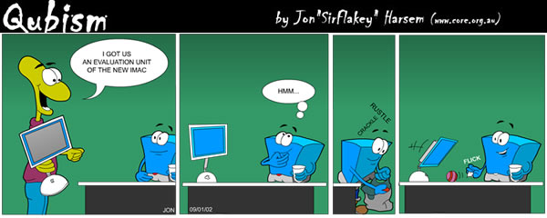
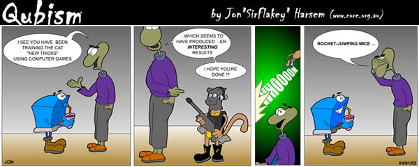
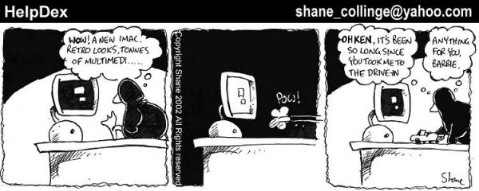
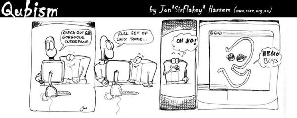

March 2002, Issue 76 Published by Linux Journal
Front Page | Back Issues | FAQ | MirrorsThe Answer Gang knowledge base (your Linux questions here!)
Search

Editor: Michael Orr
Technical Editor: Heather Stern
Senior Contributing Editor: Jim Dennis
Contributing Editors: Ben Okopnik, Dan Wilder, Don Marti
![[tm]](../gx/tm.gif) ,
http://www.linuxgazette.net/
,
http://www.linuxgazette.net/
 The Mailbag
The Mailbag
Send tech-support questions, Tips, answers and article ideas to The Answer Gang <tag@lists.linuxgazette.net>. Other mail (including questions or comments about the Gazette itself) should go to <gazette@linuxgazette.net>. All material sent to either of these addresses will be considered for publication in the next issue. Please send answers to the original querent too, so that s/he can get the answer without waiting for the next issue.
Unanswered questions might appear here. Questions with answers--or answers only--appear in The Answer Gang, 2-Cent Tips, or here, depending on their content. There is no guarantee that questions will ever be answered, especially if not related to Linux.
Before asking a question, please check the Linux Gazette FAQ (for questions about the Gazette) or The Answer Gang Knowledge Base (for questions about Linux) to see if it has been answered there.
 LG 73, 2c Tips #12, USB Modems.
LG 73, 2c Tips #12, USB Modems.I am writing reguarding the Alcatel Speed Touch USB modem, under Linux, particularly Mandrake Linux 8.1.
I have been trying to get this modem to work for about a month now. It seems I almost have it, at least compared to where I was a couple of weeks ago. I have been following the HowTo's, I've found on the internet. They seem to differ slightly from web page to web page, but I believe I finally got the kernel and the drivers set up to work, but I think I might have some setting messed up somewhere, or maybe a module not loaded or something. I was hoping you might be able to help me find where I'm having a problem. The message I get when I try to connect with br2684ctl -b -c 0 -a 0.0.35 is something like
RFC1483/2684 bridge : Created nas0 interface
(something like that)
RFC1483/2684 bridge : Connecting to ATM 0.0.35 Encapsulation LLC
(again it says something like this)
RFC1483/2684 bridge : fatal : failed to connect on socket
(here's the error message I get exactly as given to me)
Is there anything you might be able to tell me from the informatoin given, what I should be looking at to correct my problem? If you need anymore info please let me know what it is and I will get it right to you.
Thanks
Tom
xt (xtraceroute)There's a program in Debian unstable called xt (xtraceroute). It's supposed to plot the traceroute path on a picture of the earth. However, it doesn't seem to have enough location coordinates in its database to do anything. Has anybody used this program? Did you have to enter your own coordinates for all the hosts you traceroute from and to?
Euro symbol available?Hi guys, I don't know how much this will matter to the non-Europeans in the audience, but how am I going to get the Euro symbol to appear in my favourite applications? I have just installed Red Hat 7.2 on my laptop, and would like to indicate my preferred currency symbol in a spreadsheet or word processor document. The only mention I can find in previous issues of LG (wonderful publication - keep up the great work!), apart from a Debian Euro-HOWTO, is the usual "just my .02 Euro". Does anyone have any ideas?
Regards,
Donal.
DHCP & MAC Addresses questionHi,
I've read where DHCP can return a fixed IP for specified MAC hardware addresses. My question is can DHCP be limited to return either fixed or dynamic IP to only a list of MAC hardware addresses? This would be a security enhancement as only specified machines could get access to the server?
Dave Wulkan
Convex
Hi Gang!
Some time ago a friend of mine took me to a guy that - via some
strange ways - had gotten hold of some convex computers (2
refrigerator-sized boxes). They were struggeling to get them to boot
again (I think they called the OS spp-ux os something similar) and
maybe in the end getting them to boot linux (hey, not totally OT). So,
short question: does somebody of you know these beasts? If yes, I can
figure out more about'em, otherwise forget them (saw something like a
VAXbar some time ago, maybe that'll be their new purpose real soon
 .
.
TIA
Robos
Boot problem on software raidI am running RedHat 7.2 and using ext3 file system with software raid, using 2 20gig drives. The raid drive(s) are my boot drive. The 2 drives are identical and are used something like this /dev/hda1 = ext3, /dev/hdb1 = ext3. I made everything between the 2 drives the same. The mirrored drive is /dev/hda1 and /dev/hda2 = /dev/md0. The system has been running very well.
I recently did a kernel upgrade. The upgrade went ok and will boot and run from a floppy drive with no problems. But if I attempt to boot from the hard drive(s) drive it will only boot the old kernel. I have updated the grub.conf and have even attempted to enter the commands for booting from the command line. The grub menu never shows the commands entered into the grub.conf file and I receive a error "Can't find files" if I attempt to enter the command line.
I have attempted to find what I need to change/fix but have not found the information needed to update grub while booting from a raid/ext3 file system.
Anyone have any ideas?
Thanks,
Joseph St.Clair
System crash on RH 7.2 - could be related to N.P.Strickland's problemHi Gang,
I recently upgraded from RedHat 6.2 to 7.2. Since then I have experienced a number of incidents where the system simply froze up solid. It would not respond to keyboard input or mouse clicks. Screen was not being updated at all. The only way out was the Reset button. This sounds similar to the problems reported by N.P.Strickland (http://linuxgazette.net/issue74/tag/9.html), but I can relate my incidents to some things which infer that the solutions suggested to that post will not resolve my situation.
Firstly, this has only started happening since I upgraded. I never experienced anything similar on RH 6.2 (or 5.2 fot that matter). The hardware is unchanged, so I believe it must be caused by software, not hardware.
Secondly, I am pretty confident that it is related somehow to sound. I can bring on a freeze by running a number of multimedia programs (e.g. XMMS, gtv). They appear to work fine for, say, 30 seconds, then Zap! the system freezes up solid.
Can anyone shed any more light?
Thanks
Ian Callahan
Windows Telnet Client for LinuxNot if you're at the only cybercafe in town and they don't let you install software there,
Educate, advocate.
The only reason I'd be in a cybercafe is if I'm in a strange town and there are no other Internet options. So I don't have much opportunity to find the most receptive staff members and spring a World Domination campaign on them.
There has to be at least one geek there...
You must have forgotten the smiley.
 That must be a joke, because in most
of the cybercafes I've been in, the staff know a lot about espresso and chai,
but very little about their own computers. The only two exceptions were the
Speakeasy in Seattle and CoffeeNet in San Francisco, neither of which
exist any more.
That must be a joke, because in most
of the cybercafes I've been in, the staff know a lot about espresso and chai,
but very little about their own computers. The only two exceptions were the
Speakeasy in Seattle and CoffeeNet in San Francisco, neither of which
exist any more.
installing software from sourceBen,
Since I'm a relative linux newbie and software installation has been learning process, I appreciatee your article on installing from source. One question though. After downloading and uncompressing the source, installation seems to be pretty much a three step process.
./configure make make install
My question is this: should I become root in this process and if so at what stage? I'm thinking that I should become root after "make." and not before.
Anyway I appreciated the article especially the part about analyzing a failed install. It would have taken me a while to figure that out on my own.
Thanks,
Adam York
TAG membersBy the way, TAG now has thirty members, an increase of about eight from a couple months ago. Welcome, new Gang members, and thanks for your contributions.
If you haven't sent in your TAG bio yet or you need to revise it, send it to gazette@linuxgazette.net. See
"Meet The Answer Gang" to read about your peers and see some example bios.
[28-Feb: Somehow it doubled in eight days. There are now sixty TAG members. -Iron.]
Confidential disclaimersIn the section on confidentiality disclaimers in the TAG faq, can we provide some examples of what we need the querent to say?
Provided, in "Ask The Gang" -- Heather
HOWTO subscribe to Linux GazetteWe've had a number of questions on this topic lately...
D Johnson
I always enjoy reading the Gazette offline (maybe even at the beach on my notebook). Have you ever considered providing it in pdf format. Would save me the trouble of converting it myself. Imagine lotsa others do too. Keep up the good work.
Thanks for the support. -- Mike
P Reddy
i am a student from india , i want to know wether there is a mailing news letter available, if yes how to subscribe. please reply at...
Martin Willem
I'm making the jump into the linux world. Do you offer the GAZETTE in hard copy form?
To all these people and everyone else out there wondering: ...
Paper?
It's under an open license. Anybody has the right to publish it that way. We can't afford to do all that for free though.
If anybody chooses to convert it to paper form regularly ... and maintain that as a longterm service ... could you please let us know? We could add you to the Mirrors page
Other electronic formats? See http://www.linuxgazette.net/faq.html
You can be notified that the new one has been posted each month, by subscribing to the announce list (it does not contain the articles): http://www.ssc.com/mailman/listinfo/lg-announce
You might be able to use services (elsewhere!) which let you know websites have changed (by emailing you the changed page) to give you the table of contents ONLY, by telling them to keep an eye on: http://www.linuxgazette.net/current/
One example of such an external service is Sitescooper - PDA users can get the document this way, as can others who install the Sitescooper scripts: http://scoops.sitescooper.org
So much work to get it so I was hoping...
Our webzine is quite large so it's well worth your time to find an LG mirror site that's closer to your home in cyberspace: http://www.linuxgazette.net/mirrors.html
You can also download the FTP files, or find it in the Debian distribution. Read more about all this at the Linux Gazette FAQ: http://www.linuxgazette.net/faq.html
However Martin had more to ask so we answered that too
Do you offer recommendations on the most successful ways to jump from microsoft to LINUX? Any help that can save me pain would be greatly appreciated i.e. hardware, linux flavor, good books for the beginner to read before/during the move to lynux!
That's a very general question, so I can offer only a general answer. Look in The Answer Gang Knowledge Base: http://www.linuxgazette.net/tag/kb.html especially under the sections "Linux Distributions", "Before you install Linux", "Installing Linux", etc. Also see the section "Linux tech support questions" question "How can I get help on Linux?", which has a list of books and a link to the Linux Documentation Project (LDP) (Linux Documentation Project), which should be your first stop.
-- Mike
All your wonderful tips...Hi Gang! Just had some time and took a look into the howto section at linuxdoc.org and found the Tips-HOWTO.
Nice thingies in there, although the last editing seems to be ages ago.
Soooo, since LG is already present in there and you have such wonderful ideas, scripts and perl-thingies (Ben?), after you have discussed them here in the list and optimized them one could post it to the maintainer of the Tips-HOWTO for inclusion.
What do you think? Thats a place a newbie finds rather easier than this mailing-list, don't you think? Just a suggestion.
CU Robos
<grin> Good idea, Robos. Instead of the Tips-HOWTO, however, the areas you're asking about are a subset of the LG Knowledge Base that Chris Gianakopoulos and I have been working on for the past month plus; see <http://www.linuxgazette.net/kb-faq.html;. Better yet, wait a week or so and see the new version - Chris has been doing a sterling job of adding the stuff from the previous issues of LG while I'm banging away on modifying the overall KB-FAQ, TAG-FAQ, etc. The difference between the last month and the one that's coming up is going to be a large one - there are many, many more articles/issues incorporated into it than there were the last time - and it's really turning into a great resource. -- Ben
Why we stay plain when we could look Really CoolHey!
Nice to see your online mag - content seems good!
...pity I was about as excited about the presentation of your "mag" as I am about brussel sprouts!
Check out http://www.onlamp.com for an example of what to make it look like - I know in essence its the same, but I'd love to see some Linux heads make something that actually looks good! (ie stop acting like text crazed command line geeks and get with us poxy graphical idiots, who have been web building with Macromedia products and the like)
Yes that means you will actually have to stop using Lynx and start using Mozilla to check the visual integrity of your code!
I'm not really bagging, just sick of not being excited when I hit a linux site.
cheers, L
Oh my. This resulted in a lively discussion defending Brussel sprouts, our decision process in making the webzine rather more plain than all-dancing-and-glitzy, some comments about the browsers we actually use, thoughts on Macromedia Flash, a certain amount of curmudgeonly eyebrow raising, cheerful thanks for the kudos that were present, and encouragement to take on the glitzy task himself. Pleasantly he took it all in good stride and will probably join the Answer Gang
Nice to see your online mag - content seems good!
Thanks, always happy to hear it. -- Heather
Thanks for writing in. If you like the content, well, that's our goal. -- Mike
...pity I was about as excited about the presentation of your "mag" as I am about brussel sprouts!
I like brussel sprouts, when prepared properly and covered with butter
I can force myself to eat brussel sprouts and broccoli. But I draw the line at cauliflower. -- Mike
I'll trade you: you can have my brussel sprouts, and I'll have the cauliflower. It's good to have friends.
...pity I was about as excited about the presentation of your "mag" as I am about brussel sprouts!
The Answer Guy, enjoying yet another Python book (in this case New Riders' "Python Web Programming" -- slow since it aims at non-programmers, but quite good nontheless) at a local coffee shop, was heard to mutter:
"Bon Apetit mon ami, enjoy your sprouts"
before taking another sip of his latte. -- Jim
Hey, nice layout on your e-mail!
...too bad the content had me yawning.
So you've got your MacroWhozits, ShockWhatsits, and RealWhatchamacallits running. Booo-ring. I can get more and better flash and glitter at the 99-cent store. Incidentally, I find the layout of the site that you've mentioned just as garbaged up as that of Slashdot - it requires a 21" screen just to see properly, and the "noisiness" of unrelated multi-column layout, with 2-3 words per column (hey, you've got to make room for all those ads - right?) is something that I find really unpleasant to read.
Look. Our strength is that we are accessible to _everyone._ Not everybody in the world has a cable modem, or even a fast phone connection; a number of our readers are still using 33.6 modems attached to their 486s, and a fair number of them are still paying for content "by the byte". I'm using a CDPD modem (I live on a sailboat) to connect, myself. Should we all be denied access, or should it be made more difficult or expensive because our layout doesn't reflect somebody's idea of the Latest And Greatest fashion in web pages? Please, let's not even go there. -- Ben
I'm not really bagging, just sick of not being excited when I hit a linux site.
<snort> I'll make you a deal: we'll tell you how to dress and how to present yourself in general (anybody here have some orange lipstick and a flourescent pink purse?), and you'll be welcome to present us with your idea of an "up-to-date" site that excites you. That sound good to you?
Thought so. -- Ben
Check out http://www.onlamp.com for an example of what to make it look like -
It looks nice. -- Mike
(For the readers: ONlamp is an O'Reilly Network site.)
Are you with O'Reilly? They are a big publishing house and hire people to maintain their websites. We are a batch of volunteers scattered all over the world. But we're flattered that you chose to compare us with them.
(it turns out, no, he's not; he just feels their site looks cool.)
To be fair, though, I tried to visit that site with Netscape. I only got an ad -- no content! Ouchie!
Luckily we only put these itty bitty graphics at the side and logos on top. Since we don't do animated banners you can't get hit with the won't-finish bug in some browsers either
I know in essence its the same, but I'd love to see some Linux heads make something that actually looks good!
Go to linux.com. Or better yet, put up your own demonstration site. Then send us a link to it and an announcement about what it contains, and we'll put an item for it in News Bytes. Maybe all that will encourage other Linux sites to get more pizzazz. -- Mike
(ie stop acting like text crazed command line geeks and get with us poxy graphical idiots, who have been web building with Macromedia products and the like)
Linux Gazette is slow to adopt new visual technology, kind of like the Amish. We prefer to wait a few years and see which technologies would actually be a long-term benefit to all our users. It's an unusual kind of zine; I don't know of any others like it. Most people read it from mirrors in 47 countries, through the Linux Documentation Project, download the FTP files, read it on a CD-ROM, download the articles to their palm pilot, etc. So anything dynamic is out because it would cut off a significant portion of the readership. We also don't want to impose any special software requirements on the mirrors. Two concessions to dynamism: the search engine and talkbacks on the main site.
We're also mindful of bandwidth restraints: many readers and mirrors live in countries where they pay by the minute for Internet access, so I try to keep each issue down to less than a megabyte or two (compressed).
We also have to piece together the whole thing into an all-in-one version (the entire issue on one page), because that's how LG started and many readers prefer to print it that way. This rules out differing stylesheets per article, or anything special the article needs in the HTML header.
Most of the editors subscribe to the "good website design" philosophy, meaning content is king. If you can't say it in text, it isn't worth saying. Obviously we don't go all the way on that, because we have been publishing several cartoon series. But still, all decorations are evaluated in terms of how essential they are to the content. If readers like the text, they'll be back. if they won't read it unless it has bells and whistles all around it, well, we don't want them anyway. There are plenty of sites that are highly graphical (and can't be navigated unless you have Flash and Javascript enabled), and LG doesn't wish to compete in that department.
By the way, Your Editor has a strong adversion to "left column" and "right column" sidebars (tables), and will resist them as long as he can. Let the article text flow freely across the entire width of the browser, outside a table, and in the default font. Persumably, the reader has adjusted his default font to his preference. -- Mike
A-men to that! And a-women, too. I don't long for uniformity on the Web, but if more people paid attention to those basics, more information would be more easily accessible. Sing that song! -- Ben
Not to rag too hard back, but:
- Tell O'Reilly to get that wart zapped. The last time I saw this was LWN having some problems with an ad provider whose "pull through" would bomb out that way about 1 time in 10. I'm not sure if they fired the ad provider, or just made 'em fix it, but I know it's tricky to chase down problems that are hard to reproduce.
- We can't shoot at bugs without a target symbol over the varmint. In other words "it's ugly" isn't enough of a problem description. Try again.
Since we live in a world of choice, try a few of the following on for size: Dillo, Chimera, Amaya, Opera, Arachne, links (not the same as lynx), w3m, Browsex, ViewML, mnemonic, Zen, konqueror. If you find a copy of Grail let me know as its homesite died ages ago and I haven't found packages since. Maybe it was under a non-free license?? -- Heather
Grail (a Python web browser) is now at http://grail.sourceforge.net . The last version was April 1999. It died because its sponsoring organization (CNRI?) stopped putting developer resources into it. They did that because they realized its features and speed were never going to compete with recent versions of Netscape and Internet Explorer.
With Grail died the ability to run Python applets in a browser, but that's OK because there never were any Python applets except a few demos. But now there's Jython, which is an implementation of Python in Java, so you can do almost the same thing.
However, there was a good thing from the Grail legacy. The parts to build a browser, parse URLs, parse HTML files, etc, and everything else a browser needs to do, got put in the standard Python distribution as modules, so you can use them in other programs. -- Mike
Visit some students at your local blind school, ask them if their speech readers do our site alright... and have your local PDA pick up the current Linux Gazette packet from Sitescooper. I'm not going to suggest that you telnet to port 80 and handle your own client side of the HTTP connection, but you can do that if it makes you feel like a completist :D
We try not to change the templates too often
Variety may be the spice of life but aiming generic rather than in any one direction means less work to have readable results without heavy testing. (We do try to test for broken hotlinks, and sorta glance around for typos, but those sometimes escape us too.) As we're all unpaid volunteers, and not very many of us, making the best use of our time is important too.
We're modeled more after the community green sheet (e.g. Campbell Reporter gets a picture here and there, but mostly it's plain ink on rag paper) than a large city newspaper (with its Home and Garden section, coupons in the food section, comics section bigger than some articles, classified ads fatter than all other sections but the sports, etc) or a 90 page glossy magazine on clay-laden paper with dye sublimation ink. On the flip side we don't charge $7.95 on newsstands and have a two to three month lead time for articles, either.
There's a great little article at "This website optimized for --- arguing with customers" (http://www.htmlhelp.com/feature/art2.htm). Like it says, we're not going to tell people to get rid of whatever they already have just to read anything here. -- Heather
OnRamp gets brownie points for using the default font in the center column, but loses points for having the left sidebar. At least the center column isn't too narrow. And at least--thankfully--they don't split the articles into pages, unlike, say, Salon (http://salon.com), where you have to wait for a download cycle between each page. -- Mike
Yes that means you will actually have to stop using Lynx and start using Mozilla to check the visual integrity of your code!
Actually, I do most of my work in Netscape 4. I occasionally use Konqueror 2.2.1 for comparision, but I get sick of the 3-5 seconds of extra overhead on every click. At home I use Galeon. For local documentation or when I'm going to a known-text page, I use links, or lynx if it requires https:. I don't know what the other editors use. -- Mike
Funny you should mention that, I was able to read your site with lynx when Netscape failed abysmally -- since noting yourself as a GUI fan, I figured to hit it with a graphical browser first...
My portion of the Gazette is always checked with both lynx (2.8.3dev9 with SSL patches, yeah I know it's ancient, but I'm happy with my color settings) and netscape (4.77 normally). They each correct for different varieties of HTML misbehavior, and that allows me to fix glitches generated by my preprocessing script, which tortures about 400 slices of mail into something resembling pieces of a webzine. I sometimes test with konqueror, NS6, or Browsex. We've been advised that Opera's rendering of the Front Page only (ironically, the only one where we tried to get fancy with layout) is a mite strange... of course, that's commercial software, and the effect doesn't really stop reading, but we dunno any way to convince it to do the table-heuristic we wanted. Oh well. -- Heather
That vertical black line is gone. It was a 1-pixel black .gif inside a table cell, which was supposed to expand into a vertical black bar. However, it used WIDTH="2%", which made it stretch wide on some browsers. So I changed it to a fixed width. However, Opera continued to expand it while the other browsers stopped. Now it's gone. Good riddance. -- Mike
What version of Mozilla are you using, what bug/wart did you encounter, and does it also afflict Netscape 6, Galeon, or other mozilla derivatives? -- Heather
Argh. Leon, could you send your stuff in plain text, and wrap it at less than 80 (preferably, around 72) columns? That's considered good e-mail manners. -- Ben
Argh indeed - I am forced by the hand of Bill Gates - my headers will inform you my work machine is a W2K with Outlook - I couldn't be polite with my text if I tried. As far as it's concerned I AM sending plain text!!!!!!!! I am moving jobs soon, but staying on the same campus - I will then rebel and use Linux for my desktop....AND BILL WILL WEEP!!!!!!!!!!!! (HeeHeeHeeee...)
Seems like there's a way to tell even Outlook to be civil, at least in this respect.
Unfortunately this way eludes me ... could somebody here more versed than I in the Dark Arts speak up? -- Dan
<laugh> Cool. Mike Orr, our editor here, has mentioned that we have the procedure for smacking Outlook down to decent behavior written down somewhere; -- Ben
Chris G here, from the Dark Arts group of people. I supplied detailed instructions on how to set up Outlook Express to send in plain text mode when sending email. In it was included the fact that the MUA should not reply in the same format as the original message. That was in issue 65, "Setup of Microsoft Outlook Express 5 for Sending of Clear Text": http://linuxgazette.net/issue65/tag/8.html
Hopefully, that will work for Leon. -- Chris G
A friend of mine sent me the following step-by-step guide (he works in a mixed environment, and needs to twiddle his settings back and forth):
|
............... How to send plain text email using Outlook in 3 clicks or less By Samuel Kopel This will work in Outlook(not sure about express) Start a new message On the menu bar select 'Format/Plain Text' Click [YES] to the message "Warning: Changing the formatting of this message from HTML to plain text requires removing all the current formatting, including any pictures you may have included. Are you sure you want to do this?" If you want to change your default to text (recommended if the majority of your email does not go to other Outlook users) you need to change the options settings. From the menu: 'Tools/Options' Select the [Mail Format] tab and change to "plain text" ............... |
Macromedia Flash, Javascript and fancy graphics would be possible since they are self-contained (i.e., don't require particular software on the web server). However, they would have problems on non-major browsers, and LG readers have a wide variety of browsers, and are more likely than the general public to run experimental browsers on principle. Also, some readers have older computers, and buying a new computer would cost several months' salary. Last year I got a letter from a reader in Africa asking if there is an e-mail version of LG (there isn't), because his school cannot afford to read it on the web. --Mike
Macromedia Shockwave isn't readable on Linux (unless something new has happened that I don't know about). Flash is ok but broken in some contexts, unusable entirely in others, and we don't want the site unusable to anyone. There are so many versions of Javascript nee' ECMAscript I stopped counting -- and Java is getting there. People read us worldwide including on PDAs and in libaries and coffee shops. (ok, the coffee shops probably can handle the cool stuff. We've gotten lots of questions about coffee shops running Linux.) Also on "that slow old thing" and a cheap dialup link while preparing the spiffy new box to run Linux. (Even though they can render the graphics, maybe it's so bad they even turn off image loading in the GUI.) Etc. -- Heather
I forgot to mention. If you have a small Flash movie on a Linux theme, we may be able to put it in as an article. Or if you'd like to write an article about building Flash movies on Linux or something like that, we could also publish it. -- Mike
I'm not really bagging, just sick of not being excited when I hit a linux site.
Linux is a do-it-yourself thing. Go forth and build the ultimate Linux web site. -- Mike
Feel free to actually do a cool new layout and have that be the format for your new mirror of us. We'd happily list you in our mirrors database, and publish the script you use to tweak it if you like, so other mirrors can do things your way too. Sharing resources is good.
That's the beauty of stuff under free licenses ... you can tweak your copy and you aren't breaking any laws whatsoever.
If you have good tricks for having your GUI cake and eating text too, it'd make an excellent article for the Gazette (a linux focus in it would put it on topic), and Mike Orr (gazette@linuxgazette.net) would be glad to accept your submission. If that excites you about us, read our author guidelines in the Linux Gazette FAQ, and we look forward to seeing it! -- Heather
cheers, L
Have a good weekend, hope your Linux is being more fun than our layout for ya. -- Heather
Ben,
Don't take it so personal - the Editor explained everything very nicely, I'm sorry if I offended - I am a graphical ponse, it's not my fault I was born that way!!!!!!!
L
<grin> No worries, Leon - you didn't offend me. I got a little grumpy at you telling us how we've got to do something without knowing our requirements, but that's all; no offense involved.
For myself, I like graphical stuff when done in appropriate amounts relevant to the material at hand. Today, there are way too many web pages that use graphics gratuitously, without any sense behind them - and I must say that the page you pointed to does not fit that category, although it has other problems (at least from my perspective.)
So, here's an idea for you; an opportunity to possibly convert a few folks into "graphical ponses", if you will. Go with what Mike suggested: write an article about Web page design; include some links to demonstrate each of your points. Who knows?... it might become a graphical ponse revolution.
Heather,
You write too much - I can't even type that fast and you want me to read all that!????
As I said I like the content - I'm sold an that - I also said I'm new to Linux, thus may only be bagging what I don't understand....yet!
All points on bandwidth, mirroring etc etc are taken - OK!!!!!
I still hate Brussel sprouts with butter - I'd rather eat the tub of butter.
Geez, I know not now to stir whith what ain't broken....
Oh and to clarify - I Certainly Don't Work For O'Reilly!! (And I'm not such a fan of Flash myself - but don't tell my boss!)
I am glad to have stimulated some conversation though
Mike,
Thanks for an in depth reply : This shows me your commitment to uphold all that is good and right in the computing world, and your reasons for doing it. Good on ya! - I can take much of what you have said about the web and put it into practice - thanks - all points noted.
I am pleased that you did in fact reply - you would be surprised how many people would take a comment like my and ignore it - so thanks again.
I am what your world would call a Linux Newbie so your feedback and explanations are essential to my development, and I suspect yours. I am looking forward to building new sites, I do have some commercial Intranets on the build, and in use, none of which I can advertise - interestingly enough, I am using mySQL, PHP on guess what: Red Hat Linux 7.2. They work a dream, and are - FULL of lovely graphics, but tied to 100Mbps LANs, so I can afford the bandwidth! Call me a cheat!
Oh and thanks for the cauliflower laugh.
You want some more cauliflower?
Keep up the good work, I will be a regular visitor for the CONTENT!
cheers, L
Leon, given your responsiveness (most important), verbosity and funny comebacks, have you ever considered a career in The Answer Gang? Would you feel comfortable answering questions about Linux?
If so, see The Answer Gang FAQ, http://www.linuxgazette.net/tag/members-faq.html -- Mike
I gave it some thought Mike - I dont know if I can match up to the class of company - I have little Linux experience (love the 'Iron Orr' bit) When I move jobs next week, (and desktop machines! yay to the end of W2K) I'll have to set up some Linux servers, with RAID and big network transfer speeds for up to 20 Mac OSX clients running video editing software - Utilising the network drives as a data bank, so clients can log onto any machine to edit and be presented with up to 10GB of storage space for the hungry video stuff.
Only 10GB? What are they editing; news packages?
 -- jra
-- jra
After that I'll be in a position to answer some questions on Linux!
(If anyone has some pointers on the above problem please jump in - or even if it is possible! specially Mac OSX Vs Linux issues.)
'till then Ciao!
Leon Czechowicz
The problem is sustained throughput. TTBOMK, nothing is fast enough at the network filer level at the moment to do anything much faster than DV (3.5MB/s). To beat that, you need, I think, to go to NAS, or something similar: shared drives, rather than shared filesystems.
Perhaps things have speeded up a bit... but be prepared to go to either 100Mbs Ether with dedicated adapters, or Gigabit shared... and something more towards token than ether is not out of line.
Either that, or nasty buffering on the mount client.
Investigate Cinelerra, too.
Cheers, -- jra
 More 2¢ Tips!
More 2¢ Tips!
 ques
quesFri, 1 Feb 2002 11:32:44 -0800
Dan Wilder (The Answer Gang)
asked by piyush moghe
respected sir
i have a problem with linux instalation on 20Gb or
more capacity disks,i had installed on p3,20gb hd,64
mb ram.i make 2 1Gb partition as linux native & one
200 mb as swap the instalation goes on smoothly but at
the end it gives error that first partition not lies
in 1024 cylinders what i can do to solve this problem
Actually we're several guys, and one or more gals. If you respect us, that's nice, but not essential.
Upgrade to current LILO. Most new distributions should contain a LILO able to overcome the 1024 cylinder limit, and so a newer distribution might be the easiest way to do it.
Or, re-partition the disk so that its first partition, about 16Mb, is mounted at /boot, second partition is swap, and the third partition containing the remainder of the disk is mounted as /, the root partition. The installation scripts on the distribution will probably give you an opportunity to specify how you want the hard drive partitioned, and that's where you do this.
Make sure your kernel boot image (usuall vmlinuz) is located in /boot, and is referenced from /etc/lilo.conf as such. You may have to move things around and rerun lilo after the installation stuff completes.
Let us know how you are doing.
File cache...Thu, 14 Feb 2002 22:25:24 -0800
Dan Wilder (dan from ssc.com)
asked by Matthew Koundakjian
Is there a way to control in a 2.4.x kernel how large the file cache can grow?
File cache always seems to take as much as it can and we really would prefer to keep it low.
The main user is routinely running tasks upwards of 1.5GB at time and there are times when the system thrashes and thrashes.
3:55pm up 2 days, 23:36, 19 users, load average: 0.60, 0.72, 0.75 162 processes: 160 sleeping, 2 running, 0 zombie, 0 stopped CPU0 states: 76.0% user, 0.0% system, 0.0% nice, 23.0% idle CPU1 states: 31.0% user, 13.0% system, 0.0% nice, 55.0% idle Mem: 2059412K av, 2053732K used, 5680K free, 0K shrd, 41576K buff Swap: 3072112K av, 703596K used, 2368516K free 1236900K cached
Big file cache is not necessarily A Bad Thing. As long as it unloads fast when demand grows.
I'd look to other problems first.
- Are you running 2.4.17 or something older and buggier? If not 2.4.17, upgrade now.
- Are you running an AMD Duron or Athlon + AGP video? If so, you'll need a kernel boot parameter to cut cache page size, there's an interference between the way the kernel handles DMA and the way AMD handles AGP, leading to sporadic random cache corruption.
- You're 700M into swap. That's never a Good Idea. Unless what's swapped out is more or less permanently swapped out. If so why are you running it? If possible, get another gig of memory. The slowest memory is much faster than the fastest hard drive.
Hello Dan...
Thanks so much. Yes, we're running an older kernel ... mostly, 2.4.6 ... I'll fix that.
As far as the swap, originally, we had no swap, but because the file cache is so "hungry", I threw in swap as a brute force means because processes were dying from lack of memory...
As it is, we run a computational fluid dynamics code that periodically dies with no more than "broken pipe" as the error diagnostic, which, if I had to make a W.A.G., I would assume a process died. Before, it was a LOT worse... It was ugly when something like portmap would croak. So, lacking any coherent solution and having unhappy users, I threw some swap in and it seemed to help with stability tremendously.
But most recently, with one user process running, allocating about 1.7G, the system was apparently thrashing horribly... very unresponsive and with a system load on the order of 10.
As far as the swap versus file cache, it would seem to be silly to have a file cache that's so large that swap starts coming into play.
Bye,
Matt
Answer for "getting volume label from CD".Thu, 24 Jan 2002 16:09:19 -0700
Sean Reifschneider (jafo from tummy.com)
The URL:
http://linuxgazette.net/issue72/tag/2.html
asks the question "How do I get the volume label from a data CD", and then the three guys go on to not provide a very good answer...
If you would like to add the following, it may be useful to other readers.
There are two problems in identifying CDs -- one is identifying a data CD, the other is identifying an audio CD. Mr. Bray is asking specifically about data, but it's also possible to determine a fairly unique ID for audio CDs as well.
Data CDs are easy -- a 32-byte string is written in the ISO at offset 32808. Some systems have a program called "volname" (part of the eject package), which can pull this data out. Otherwise, "dd" can be used:
dd if=/dev/cdrom bs=1 skip=32808 count=32
This is the volume label specified via the "-V" argument to "mkisofs" when creating the CD image.
For audio CDs, it's (unfortunately) not as easy. The CD Digital Audio standard does not include a location for storing CD or track identification information. The answer for this that I've heard is that they felt it was too hard a problem to solve initially.
While it may seem easy to add a few strings on the CD, it becomes harder when you have to deal with an international market -- how do you make it so that Japanese tracks can be identified, for example. Remember, this was back in the <gasp> '80s, when Unicode wasn't common.
So, the way people go about identifying audio CDs is by generating a signature. This signature consists of information about the length of tracks, number of tracks, and various other information. You can then condense this information down into a single value.
This value can then be used to submit and request more specific data about a disc or track.
Thanks to the LinuxDoc CDROM-HOWTO for the dd command to pull this data off the CD.
Sean
Compiling from sourceFri, 1 Feb 2002 09:03:21 -0800
John Davies (johnny5_tc from yahoo.co.uk)
Hi, I've just read your informative article on installing from source in this months Linux Gazette.
You mention that it would be good if make files has and uninstall target and that most don't. Well, if you have a look at Checkinstall (http://asic-linux.com.mx/~izto/checkinstall-en.html) it allows you to uninstall programs built from source.
What it does is to replace the "make install" command with checkinstall. It makes a note of which files were installed and allows you to uninstall the program using the package management tools on your machine (in my case dpkg). It also creates a .deb (or .rpm) so you can install it on another machine.
I've played with it for a few days now and it is extremely useful.
Regards John
John,
Thanks for that tip. I'm a moderately long-time member of The Answer Gang, and had not heard of checkinstall before. I often build from source, and had until now resorted to clumsy and time-consuming expedients to manage uninstalls.
"checkinstall" is just what we need here at SSC, host of The Answer Gang's mailing list server and The Linux Gazette's web site.
This is pretty much the reason that I forwarded this to TAG. I've had seven or eight e-mails telling me me about "buildpkg", "rpm", etc.; under Debian, I'm familiar with "alien" - but none of these deal with the real issue of "remembering" what the "make" did. They just convert the tarball (which often cannot be done due to layout, etc.) into RPMs or DEBs, etc. This tool - although I have not yet had the time to check it out - sounds like a very nice possibility, and I'm going to be looking into it. -- Ben
Well thanks, Ben, for forwarding it.
It sounds like this tool does something like what I've been doing by hand. After building a package, I often
su root script make install ^D
(that's "CTRL-D", an EOT character, to log out of script) then edit the resulting "typescript" file to build a roster of what was installed, which I then save in an "ssc" subdirectory of the build directory, against a day when I wish to know what was installed.
You're absolutely right about alien et al. They work from a tarball, .deb, .rpm, etc.
However, most stock GNU packages don't even build an install tarball. They just install directly, leaving a cryptic trail of what they installed in the output from the "make install". Without analyzing that output you don't even get a tarball to "alien".
There are exceptions. Debian-modified source trees build the .deb packages directly, which can then be installed. Slackware-modified source trees build a tarball directly. No doubt Red Hat et al has something similar ... brainfade prevents me from saying at the moment ...
All too often I find I must go directly to the original release of some package, rather than using the distribution's source, either because the package is not available under the appropriate distribution, or because the distribution's package doesn't do it for us. Wrong or broken version, etc etc etc.
If this checkinstall does what it looks like it might do, it solves that problem of "what do you do if you've only the original source code". -- Dan
Automate dialing?Wed, 20 Feb 2002 18:26:42 -0500
Ben Okopnik (The Answer Gang)
asked by gagandgupta
I want to write a program that on getting some sort of trigger will automatically connect to the internet by dialling the ISP's telephone number. After it has established connection it should store the IP address assigned to it by the ISP in a file.
Two major hints that, together, should give you the solution:
That's it. There's no deep science to it.
Redhat 7.2 Linux firewall-HowtoTue, 5 Feb 2002 22:01:56 -0800
Dan Wilder (The Answer Gang)
asked by Franco Fernandes
Hi!
Can anyone tell me from where can i get the Redhat 7.2 Linux firewall-Howto download
Thanks & Regards
Franco.F
I don't know about a Redhat 7.2 firewall howto ... if there is such, I'd expect to find it by searching www.redhat.com.
A generic Linux howto, now ...
http://www.linuxdoc.org/HOWTO/Firewall-HOWTO.html
There's a lot of other great stuff in that same directory. -- Dan
Not the question you were asking - but if you want to get a basic iptables firewall in place you could want to look at firestarter or something similar -- Mike E
File System problem
i require help fixing my linux hard drive, it is a
ext2 file system and
during startup it fails to pass the file system
check, it says
"Directory inode 38381, block 0, offset 0: directorty corrupted"
how do i fix it, can it be fixed?
You can do the following.....
where "/dev/hdaxx" is the device file which points to the root of your Linux partition (i.e. mounted "/") (or change "linux" to the name of the stanza within "/etc/lilo.conf" that will load Linux).linux init=/bin/bash root=/dev/hdxx ro
and this should fix any errors on the drive.fsck -f /
If you need any help, let me (us) know.
Kind Regards,
Thomas Adam
Quick C function lookupThu, 24 Jan 2002 22:24:21 -0500
Ben Okopnik (The Answer Gang)
In your ".bashrc" file, add the following line:
alias chlp="info --file libc.info.gz --node \"Function Index\" --index-search $1"
The next time you log in (or even open another xterm or console), you'll have this as an alias. Call it this way:
chlp setuid
to have it drill down to where the "setuid" function is defined in the documentation. For those of you that use "vi", you can also redefine your "man page lookup" key:
set kp=chlp
Put your cursor on a function name and press 'K'; Magic Will Happen.

GNUThu, 21 Feb 2002 18:25:10 -0500
Jay R. Ashworth, Chris Gianakopoulos (The Answer Gang)
asked by
Rafel Burrial
What in the hell does GNU mean?
It's this uncommon African animal, also called a white bearded wildebeest. -- Jay
In hell, it's the ... -- Ben
I really think Ben needs to stop talking about dark things like that... Poor Chris, who specializes in our cross-MSwin questions, got bit by a nasty mailerdevil for that one. Just in case, I didn't print it
I think if you go to (D'oh!) www.gnu.org, and look at the first page -- and I might point out that this is the first hit on Google for 'gnu' and the answer is in the frigging page title -- you'll probably find the answer to your question. -- Jay
GNU's not Unix like Unix is not Multics!!!!! !! Ho! Ho! Ho! <laugh from down there in h*ll>
A day late, because I've had no mail for the last 24 hours!! -- Chris
Is there a way to check if a dial up ppp connection is REALLY up?Tue, 29 Jan 2002 08:54:08 -0500
Chuck & Crystal Shepherd (cc_shep from yahoo.com)
with points from Ben and John K. of The Answer Gang
I have a linux box (RH 7.1) set up to serve as mail and internet server for my two other home computers.
It is set up to dial on demand. Therefore ifconfig shows ppp0 up and running all the time (when it is working properly)
I would like to be able to check the status of the modem without lifting the telephone from it's cradle.
I have checked into using the lock file which can be written by pppd but this is not very reliable when if pppd goes down unexpectantly it does not always clean up after itself.
I haven't done anything with "diald" in a couple of years, but doesn't it use SLIP to do its dirty work (i.e., the PPP link you request is actually to a local VT; "diald" feeds your PPP daemon lots of baloney and sweet talk while it actually makes the connection behind its back)? If so, then you could always check if the 'sl0' interface is up without tripping off the dial-up. -- Ben
The querent doesn't specifically mention 'diald', which does use the slip interface as part of its mechanism. The newer versions of pppd also support dial on demand, and uses a different type of mechanism. Unfortunately, I can't be too specific, as I've never set it up. I would guess that you could simply check to see if ppp0 (assuming only one dial-up connection active at a time) is up, much the same way as was suggested for diald. Actually IIRC, in the case of diald, (which AFAIK, is no longer actively supported) the slip interface goes away when the ppp link gets established; so simply checking for a ppp interface would work for diald as well. -- John Karns
I am a big LG fan. Thanks for all the tips and advise.
<smile> We do what we can. Good luck - let us know how it goes! -- Ben
Thanks for your response.
I think I have got my solution by using lsof /dev/ttyS1
(ttyS1 is my serial port)
It does not seem to initiate a connection and does not seem to interrupt an existing connection.
Thanks for your help!
Chuck
large file support detectionMon, 21 Jan 2002 22:37:22 -0500
Robos (robos from geekmail.de)
and Ben from The Answer Gang
On Tue, Jan 22, 2002 at 01:35:56AM +0100, Robos wrote:
Hi Gang!
Maybe I already told you about my little program to copy dvd's to
harddisk, called vobcopy (look on freshmeat). In the next release I
want to incorporate large file support (lfs - no, not linux from
scratch
 . I found Jim Dennis' answer in the 67 issue and read
around various places (info libc, the suse-page, the large file summit
papers) but I am still unable to detect if the usersystem has support
for large files. We (another person joined me and did most of the lfs
stuff) found out about the -D_FILE_OFFSET_BITS=64 -D_LARGEFILE_SOURCE
-D_LARGEFILE64_SOURCE (the last one being redundant if not even close
to being wrong in my opinion) and off_t. But we are not sure if this
works correctly on both systems (supporting/not supporting). I would
think its better to know if the users system has support or not and compile
accordingly.
My approach would be somthing along the lines of look whats defined in
<linux/*file.h> and what the file system is the file gets written
to. But kinda ugly and probably wrong. Does one of you happen to know
how to figure it out?
. I found Jim Dennis' answer in the 67 issue and read
around various places (info libc, the suse-page, the large file summit
papers) but I am still unable to detect if the usersystem has support
for large files. We (another person joined me and did most of the lfs
stuff) found out about the -D_FILE_OFFSET_BITS=64 -D_LARGEFILE_SOURCE
-D_LARGEFILE64_SOURCE (the last one being redundant if not even close
to being wrong in my opinion) and off_t. But we are not sure if this
works correctly on both systems (supporting/not supporting). I would
think its better to know if the users system has support or not and compile
accordingly.
My approach would be somthing along the lines of look whats defined in
<linux/*file.h> and what the file system is the file gets written
to. But kinda ugly and probably wrong. Does one of you happen to know
how to figure it out?
Check for the presence of "ftello64" (declared in <stdio.h>
 . From "info
libc -> I/O on streams -> File Positioning":
. From "info
libc -> I/O on streams -> File Positioning":
|
............... - Function: off64_t ftello64 (FILE *STREAM) This function is similar to `ftello' with the only difference that the return value is of type `off64_t'. This also requires that the stream STREAM was opened using either `fopen64', `freopen64', or `tmpfile64' since otherwise the underlying file operations to position the file pointer beyond the 2^31 bytes limit might fail. If the sources are compiled with `_FILE_OFFSET_BITS == 64' on a 32 bits machine this function is available under the name `ftello' and so transparently replaces the old interface. ............... |
"ftello" is the 'fixed' version of "ftell", but can be found on systems with or without LFS. From the above, it looks like "ftello64" would only exist on systems with LFS, where "ftello" would be an alias for it. I've got to hand it to the GNU folks: cute trick.
Re: [LG 75] 2c Tips #5 Linux with win2000Fri, 22 Feb 2002 15:26:13 +0530
sanjay sharma (sanjayjisuno from hotmail.com)
this related with redhat linux
press enterfdisk /dev/hda
press entermount -t vfat /dev/hda(windows partition no.) /hdd
press enterdd if=/dev/hda(linux partition no.) of=/hdd/bootlin bs=512 count=1
1 record in 1 record out
save it and you are donec:\bootlin=3D"Redhat Linux "
Basic Newbie QuestionThu, 21 Feb 2002 22:11:03 -0500
Faber Fedor (The Answer Gang)
asked by Steven Bruce
I've just installed RH 7.2 on a sony vaio, and was quite surprised by the ease with which it went on (Far cry from RH5.5). Anyway, I created the suggested user so that I wouldn't be logging in as Root all the time, however, the user I created can not create, delete, copy, etc, files in ROOT, or USR, or even HOME.
Of course you can't! This isn't That Other Operating System.

I am assuming I have to login as ROOT and join the user to the administrators group, or some such group which will allow the user the appropriate permissions, but I am not sure. Is thre something I am missing or something I should be doing different?
You're missing something.
 In Linux (and unix in general) users
don't have the right to willy-nilly create files and run any old
program. Would you like it if user jane had the rights to delete files
in you home directory? Of course not!
In Linux (and unix in general) users
don't have the right to willy-nilly create files and run any old
program. Would you like it if user jane had the rights to delete files
in you home directory? Of course not!
Linux has rather strict rules about what you, a normal user can do. The root user, OTOH, can do anything. This is a very dangerous thing if you're not careful. Let's say you wanted to delete all the files in your home directory (you're allowed to do that, they're your files). That would be done with the command
rm -rf /home/steve
If you accidentally typed it as
rm -rf / home/steve
You would get some error about not having permissions, etc. And depending where you were in the directory, ypou might or might not wipe out your home directory.
However, if you were logged in as root and type the accidental line, you would, literally, wipe out every file on the hard drive.
You might want to add the normal user to various groups, but you should proabbly read up on Linux and permissions and all that. Start by reading the Dos/Windows User to Linux User HOWTO ( http://www.linuxdoc.org/HOWTO/DOS-Win-to-Linux-HOWTO-4.html ) to get an idea on what's going on.
Reading the HOWTOs in general is a good idea (maybe not all at once, mind you). You can find all of them and more at www.linuxdoc.org
Any help would be greatly appreciated!
A little appreciation is just fine, thank you.

Regards,
Faber
Re: [LG 75] 2c Tips #15 postersThu, 31 Jan 2002 15:22:52 -0500
Boyer, Charles (Charles.Boyer from tycoelectronics.com)
Probably old news...but just in case:
http://linux.oreilly.com/news/linuxanatomy_0101.html
backPosters are available free with a $50 purchase at the following O'Reilly conferences and tradeshows:
O'Reilly Conferences:
Tradeshows:
Cheers.
printingThu, 31 Jan 2002 22:11:58 -0600
Jack Berger (jhb from mapp.org)
You mention that you are having problems w/your epson printer.
I'm not too familiar w/printer defs in things like ghostscript or gimp, but my printing w/an hp 970 improved by orders of magnitude for all applications when I installed turbo print. Colors come out good, speed is improved. Just works nice.
-jhb-
Linux rocks!Today, the curiosity bug bit me again, so I poked my nose into the Linux Visor USB mailing list, and - lo and behold - there it was. Seems that the new version of "coldsync", at least the beta, now handles the m125! I downloaded it, configured it, compiled it, made a config file - and... ta-daa! Palm USB synchronization, under Linux.
Life is good.

Setting up telnet in a Linux server.Thu, 24 Jan 2002 18:43:04 -0800
Dan Wilder (The Answer Gang)
asked by Subroto Sengupta
Hello Sir,
I would like to know how to set up a Linux 7.1 server and configure it properly to be able to telnet into it from a Windows client machine.
A reply would be greatly appreciated.
Sincerely,
Subroto.
Well, that's a whole lot of questions.
There's no "Linux 7.1". The Linux kernel's current versions are 2.5.2 (pretty wild), 2.4.17 (conditionally stable), and 2.2.20 (quite stable). (labels mine).
Linux is distributed by several vendors, who label their own distribution with a version number. You may be thinking about Red Hat Linux 7.1. Don't. Get Red Hat Linux 7.2 or 6.2. Other vendors (Debian, Mandrake, Slackware, SuSE, Caldera, to name just a few) each use their own numbering schemes, which have not much to do with those of the others.
How to set up a server? Best advice I can give is "follow the vendor's directions, and ask questions here when you get lost".
Telnet? Only on a protected network, I hope! Telnet exchanges a password in the clear, OK if just your immediate family is watching the 'net, not so good if the password traverses six ISPs and a few chunks of the backbone.
That said, during install, select the telnet package. Sometimes that's part of some other package, sometimes not. Consult the vendor documentation and help.
On exposed networks, use the ssh (secure shell) package on Linux, and get "putty" secure shell client for Windows. It's much better than windows telnet, and it'll even telnet, if you must.
http://www.chiark.greenend.org.uk/~sgtatham/putty/download.html
or search google.com for "putty.exe".
-- Dan Wilder
Linux Journal's Weekly News Notes Tech Tips
ssh -nUse ssh -n to run an X program from one computer on another. For example,
ssh -n frodo gimp &
will run the GIMP on the host frodo, but display locally.
Using ssh for this is much easier and more secure than setting it up in X manually.
The -n option means prevent reading of stdin. Many times you don't need this, but if your application hangs waiting for input or does something else strange, try it.
The simplest way to process a web formYou can put a simple form on your web site even if you don't have CGI privileges. Just use <form method=GET action="result.html"> where result.html is a "thank you for filling out the form" page.
You can then get the values people filled in from the web server access log.
How to switch between several network profiles on your laptopUse the scheme option to cardctl to manage multiple network schemes on one laptop. The scheme is passed in as the first part of the device address in the PCMCIA wireless.opts script. Make two entries in wireless.opts:
ssc,*,*,*)
INFO="SSC WiFi Net"
ESSID="wifi.ssc.com"
;;
dana,*,*,*)
INFO="live.com network at Dana St. Roasting Co."
ESSID="LIVE.COM"
;;
To switch between them, do
sudo cardctl scheme ssc
or
sudo cardctl scheme dana
For more info, see the PCMCIA HOWTO. You can change all the settings, including WEP key, mode and other options. For more information on free wireless access and coffee in Mountain View, California, see Dana Street: http://www.live.com/danastreet, a LIVE.COM Neighborhood Network.
Rob Flickenger explains how to set up shell scripts to switch schemes with less typing in his new book, Building Wireless Community Networks (O'Reilly, 2002).
Speeding up commands like "route" and "netstat"If "route" takes a long time to run because you have no route to your nameserver, do "route -n" to skip the DNS lookup and use IP addresses only.
This works with "netstat", "ping" and "traceroute" too.
Very important topic: keeping your "fortune" file indexedYou can keep your fortune file indexed and up-to-date on multiple servers with make. Here's an example Makefile to handle common fortune-related tasks:
# List all the fortune files you maintain here. (I just have them
# all in one big file)
FORTUNES = dmarti
# For every fortune file, the datfile is the same name but with .dat
# on the end
DATFILES = $(FORTUNES:=.dat)
# Make a copy of the fortunes file to the zork.net collection
# (http://zork.net/fortunes/) Since it's the first target, this
# target and its dependencies will run if you just type "make"
tozork : $(DATFILES)
scp $(FORTUNES) $(DATFILES) zork.net:/usr/local/etc/fortunes
touch tozork
# This target makes each .dat file from the appropriate fortune
# file, if it has changed.
%.dat : %
strfile $<
# Get rid of all the .dat files (not really needed, but it's traditional
# to have "make clean" do _something_)
clean :
rm -f $(DATFILES)
# There is no file named "clean", but always build this target.
.PHONY : clean
For more information, see "man strfile" and "info make". Now that you know how to manage fortunes by editing only one file and typing make, why not put your favorite sayings on your web site as a fortune file others can also use? (The old fortunes that come with most distributions have come up way too often for us.)
Limiting the files "locate" shows"locate" is a wonderful command for quickly finding files on your system. Unfortunately, sometimes it produces so many hits that it takes too long to find the forest among the trees. Distributions and programs often have lots of files, making locate seem useless. To refine your search, type:
loc () {
locate "$1" | egrep -v 'bmp|html|whatever'
}
or put it in your .bashrc, and you won't receive any entries that contain
 The Answer Gang
The Answer Gang

 Greetings from Heather Stern
Greetings from Heather SternHey everybody and welcome once more to The Answer Gang. It's gotten a little crowded in our little weekender pub here -- one querent offered us some cake though, and I'm sure we'll enjoy it...
The statistics: We now have 60 members in The Gang. Less than 10 people received no answer whatsoever (and this can be attributed to things like no subject, or no clear problem description). Spam is down immensely since Dan went and made some of the dead trout into a Rube Goldberg machine, reducing the mails that flew by me to somewhere around 500.
The dumb thing of the month: Some mailers not only turn stuff into HTML, but they smush all the spaces out of it themselves, and then put the results in quoted-printable. Glork. Much to my amazement that person got some answers though I can't tell if they helped him. But it certainly didn't get pubbed; I couldn't read it to tell if it was juicy...
But the real Rant Of The Month has to go to The GNU Project for making it sexy to stop shipping man pages !?! Sadly this isn't news. But definitely sadly, there are so many different places around that helpful data might be ... and probably isn't, since many packages pick one and don't have the others ... that we're gonna need a "wtfm" command. An rtfm command that works would have to depend on it.
That stands for "Where's The Friendly Manual?"
Particularly egregious since distros now have to figure out their own way to cook up replacesments, so when some cheerful soul pipes in "Oh just check the man pages" ... the user can actually find one ... sigh ... Debian has a standard undocumented.7 man page, which can be summarized:
Yes, we know there's no man page. It's already been filed as a bug, thus you see this. If you'd like to write one for this app and submit it we sure would appreciate it.
Don't even get me started about distros that tell you that you can't get any help at all unless your webserver is working.
Phooey! I'm not going to let it ruin my weekend. I'm going to a filk
conference, as I do a couple of times a year. This particular one is
Consonance in the Silicon Valley
area. There will be bunches of computer songs there and I plan to be up
late singing a few of them. Regular readers already know about my
autobiographical filk song but I've written one about my
laptop, and a couple about Linux'ing, too. I'm not the really prolific
one though. My friend Steve Savitsky has enough to fill at least a couple
of CDs... and heck, that's just his computer songs

Have a great month everyone. I know I will!
We send their spam to the Luxury BitbucketBy Dan Wilder
I've been filtering more agressively. This month's spam bouncing features a 450 to "From: " addresses with domains the MTA can't find in the DNS.
Since lots of spammers use unrepliable "From:" this knocks those guys off. We use a 450 instead of a 550 because a 450 is retryable. If it's just a DNS glitch, the retry goes through.
So the real slimebags use a nonexistant user at a host that exists but for some reason does not accept SMTP connections. That way they pass the "does this host exist" test.
Lots of their mail goes to 10000000 VERIFIED EMAIL ADDRESSES, meaning people like mlr@ssc.com who don't work here any more, or Qr457.1121212???@ssc.com who never did. These bounce, but our MTA can't raise a connection from the putative source, so they just park on the queue for a week or so.
Every couple of days I go look for new stuff on the queue from MAILER-DAEMON with "Connection refused" errors. Then I add them to a reject file, and henceforth mail claiming to be from anybody at the "From:" domain gets
550 You refuse our connections so we refuse yours
Non-retryable. I figure we don't knock off too many legit domains, since these usually don't keep refusing connections for very long, and MAILER-DAEMON doesn't have much traffic for legit domains anyway.
Each morning I get mailed the list of 100 or so mails that were so refused, and I vette for stuff that might be legit. Mostly it's the same bogus "From:" hammering ten or twenty users at SSC, more than half of whom never existed.
Setup of ipchains when using ftpFrom Chris Gianakopolous
Answered By Jim Dennis, John Karns, Heather Stern, Ben Okopnik, Mike Orr
 Hello Gang,
Hello Gang,
I have a network of machines which use Linux and Windows95. This is not a Windows95 question!
Here's what I have.
1. The network address, of the ethernet LAN, is 192.93.16.0 (a Motorola block).
2. I use a dialup connection, using a modem, to access my ISP, and I use wvdial to dial things up. The Linux machine is the one connected to the Internet. It is my router.
3. I use the SuSE 6.4 Linux distribution (with the 2.2.14 kernel).
4. I use ipchains to set up my rules. The commands are listed below. It's in a shell script.
See attached ipchains-masq.sh.txt
I can browse the Web (from my Windows machine) with no problem. When I use the ftp client, on the Windows machine, I can log in to the ftp site (ftp.cdrom.com, for example), and I can get the prompt. When I type "ls" or "dir", I get the indication that the PORT command is successful, and nothing else happens. Things appear to stall.
[Mike] There's a special kernel module (ip_masq_ftp) to allow FTP to pass through an IP-masqueraded gateway. See the Networking section in the kernel configuration.
 I have seen a posting on the SuSE site about this very problem, but, I have
not yet found an answer.
I have seen a posting on the SuSE site about this very problem, but, I have
not yet found an answer.
I will continue troubleshooting this problem on my own, but if anybody else (probably everybody) has seen the behavior of ipchains and ftp clients on other machines, it would be cool if you let me know.
I suspect that this is a simple configuration problem. I looked at the IP-CHAINS HOWTO, and I looked at the IP-MASQUERADING HOWTO, but, I have not found anything yet. I will look at them again, just to see if I missed anything. I will also search the Linux Gazette site again. I may just have a mental block.
 Thanks Mike. I wound up figuring that out, ultimately...
Thanks Mike. I wound up figuring that out, ultimately...
Why my ftp client, on my Windows95 machine, did not appear to work using my Linux machine with IP masquerading was --
I had to type the following command on my Linux machine that was doing the masquerading:
insmod ip_masq_ftp
I found this information at the URL,
http://netfilter.samba.org/ipchains/HOWTO-7.html
 Yea, Ben. I saw all of the various ip_masq_* modules at some other URL.
Thanks for the reply.
Yea, Ben. I saw all of the various ip_masq_* modules at some other URL.
Thanks for the reply.
The broader issue is that the normal automatic kernel loading mechanism (kmod) wasn't working. You probably want to run depmod (build your kernel module dependency tree file) and try running modprobe (which attempts to find and load modules including their dependents). If the modprobe command doesn't work by hand, then the kmod (kernel module loader) won't either --- since kmod spawns off kernel threads to execute modprobe commands.
 I think that I did that depmod stuff when I rebuilt the kernel (to add
enhanced support for my hard disk controller), but I will take this advice
into account. Maybe I THINK that I did the required stuff. It was more
than 8 months ago (an eternity in my world).
I think that I did that depmod stuff when I rebuilt the kernel (to add
enhanced support for my hard disk controller), but I will take this advice
into account. Maybe I THINK that I did the required stuff. It was more
than 8 months ago (an eternity in my world).

It's also possible that something might be wrong with your /etc/modules.conf file which aliases certain kernel symbols (drivers, protocol families, filesystem types, etc) with the modules specific to your system.
I'm also running masquerading with a 2.2.x (2.2.20), and I just put the modules in the ipchain script to have them loaded. I don't see that SuSE had set up modutils for the masq modules.
 Hey John,
Hey John,
Which script are you talking about? I just put everything in a bash script. Is that what you are talking about? I would look at the man page for ipchains, but I am on a system that I am just installing Linux, thus, ipchains (and its man page) are not installed. I just got the ppp link, sendmail, and mutt configured on this machine.
While it can be argued that the loose parts make it easier to keep things organized, I'll note that with or without, it's a mess pretty quickly when you like to toggle amid a handful of kernel versions. Luckily modules that don't exist merely issue a harmless warning.
 I will double check that.
Okay, I just double checked my /etc/modules.conf file. It has all of the
cool stuff for setting up sound....., but nothing is mentioned (in the file)
for my ftp masquerading module. This is the file that I manually have to
set up with the SuSE 6.4 distribution. Oh well, I'll read more about this
stuff.
I will double check that.
Okay, I just double checked my /etc/modules.conf file. It has all of the
cool stuff for setting up sound....., but nothing is mentioned (in the file)
for my ftp masquerading module. This is the file that I manually have to
set up with the SuSE 6.4 distribution. Oh well, I'll read more about this
stuff.
kmod works by intercepting attempts to use device drivers, networking protocols, filesystem types and other resources that might be provided through kernel modules, suspending the process that requested those resources, mapping the requested resource to some provider module and attempting to modprobe that provider. As I've said, modprobe attempts to recursively load each of the modules on which its target depends.
 I see.
I see.
So, your use of ftp should, normally, have automatically loaded the ip_masq_ftp.o for you.
 At least my original suprise is sort of justified. Of course, knowledge
reduces stress and surprise. Thanks for the info, Jim. I will do some
more reading (heeding your advice, of course), and start my experiments.
At least my original suprise is sort of justified. Of course, knowledge
reduces stress and surprise. Thanks for the info, Jim. I will do some
more reading (heeding your advice, of course), and start my experiments.
Can't get all my True Type fonts to get recognizedFrom leo
Answered By Heather Stern, Ben Okopnik, Jay R. Ashworth, Thorsten M�rell, Jim Dennis, Matthias
 [Leo]
Hey Gang -
First off... absolutely stellar job. Linux is a little bit more fun as a
result of all of you.
[Leo]
Hey Gang -
First off... absolutely stellar job. Linux is a little bit more fun as a
result of all of you.
 [Leo]
Anyhow, I can't seem to get all my TrueType fonts to
get recognized by ttmkfdir.
[Leo]
Anyhow, I can't seem to get all my TrueType fonts to
get recognized by ttmkfdir.
I've followed the True Type HOWTO exactly, and have been told to look at the resulting fonts.dir and fonts.scale, and alas, only half the TrueType fonts in that directory show up.
swiss911.ttf: MS-Windows true type font .ttf
 [Leo]
I downloaded some TrueType fonts off the web
(http://www.fontalicious.com)...
is it
possible that these fonts don't adhere to some kind of standard that's out
there, and that's why ttmkfdir isn't working for them? If not, any ideas as
to what I can do to get this working?
[Leo]
I downloaded some TrueType fonts off the web
(http://www.fontalicious.com)...
is it
possible that these fonts don't adhere to some kind of standard that's out
there, and that's why ttmkfdir isn't working for them? If not, any ideas as
to what I can do to get this working?
 Thanks for the quick response Heather...
So here's where I am now:
Thanks for the quick response Heather...
So here's where I am now:
After I went and got the file utility from rpmfind.net, I ran it and got this:
[silver] ~/fonts/>file sushi.ttf
sushi.ttf: raw G3 data, byte-padded
The thing is, though, when I run file on say arial.ttf, I get this:
[silver] ~/fonts/file arial.ttf
arial.ttf: raw G3 data, byte-padded
This isn't obvious because it doesn't insist on it; there's a call to make if you want to ask if a library is around to use, after you load. The better gtk and Gnome apps sometimes use it, so that they can use plain xlibs if the glitzier things aren't around.
(on my box it says it can't find Freetype, right before it fails to display the font, on fonts which otherwise work just fine. GIMP sees 'em all because of xfstt. Maybe my own "X 4 won't honor truetype" problem is that it doesn't find the lib, and my xfstt does, or is static. Hmm.)
I unzipped it with the "-L" switch (I like my filenames in lower case, thank you), and moved it into "/usr/share/fonts/truetype/". Then, I shut down the "xfstt" TrueType server, ran "xfstt --gslist --sync", started "xfstt" back up, and ran "xset fp+ unix/:7101" to let X know that it had a TT server running.
<shrug> Nice font.
I'll bet 10 bucks he has an out of date /etc/magic file.
Hey, Ben. Mail me one of those font files, and let me file(1) it here...
I really like the "ganymede" font.
G3 files.
I know these are fonts, based on where they are (a directory called lib/fonts), and what they're called ("Lucida Typewriter" and the like).
So file(1) is wrong, among other things.
... Which merely left the font server files to sort out ...
 I don't think I mentioned it before, but I'm running Drake 8 and xfs.
I don't think I mentioned it before, but I'm running Drake 8 and xfs.
XFS without patches doesn't normally speak truetype, but I suppose you're using the X 4.x.x edition?
 but arial.ttf shows up in fonts.dir as
but arial.ttf shows up in fonts.dir as
arial.ttf -monotype-Arial-medium-r-normal--0-0-0-0-p-0-iso8859-15 arial.ttf -monotype-Arial-medium-r-normal--0-0-0-0-p-0-iso8859-1
while sushi.ttf doesn't appear... any ideas from here?
The real thing is managed by a triplet of files, which if kept all in sync, all is happy. Those three files are fonts.dir, fonts.scale, fonts.alias. fonts.dir and fonts.scale look exactly the same... the first line is a count of how many fonts, and the rest are X-style control lines, where the first word is the filename (foo.ttf) and the rest is a set of dash-separated parameters. The fonts.alias file looks the same except, there is no count line, and the ".ttf" gets stripped off. You can also add aliases for other popular spellings of things ("Comic Sans" and "MS Comic Sans" as seperate lines for the same font mscomicsans which is really comc.ttf), but I'm generally too lazy.
Here's an example for a Star Trek font. Note that Bitstream did most of the fonts for the series, but I created a special "foundry" to keep my trek stuff.
fonts.scale and fonts.dir contain:
crillee.ttf -startrek-crillee.bt-medium-r-normal--0-0-0-0-p-0-iso8859-1
but fonts.alias contains:
crillee -startrek-crillee.bt-medium-r-normal--0-0-0-0-p-0-iso8859-1
Notice that the tail item is exactly the same for both. ttfmkdir just reads the fonts and creates these entries.
 [Heather]
But, having these files in good health doesn't seem to guarantee success.
On my own SuSE 7.2 system, I find that the builtin Truetype handler in
its X 4 implementation doesn't act right:
[Heather]
But, having these files in good health doesn't seem to guarantee success.
On my own SuSE 7.2 system, I find that the builtin Truetype handler in
its X 4 implementation doesn't act right:
Could not init font path element /usr/X11R6/lib/X11/fonts/truetype, removing from list!
... so I use xfstt instead, which has worked for me for a long time, and has no complaint about being pointed to the same directory. Sigh.
dir "/usr/X11R6/lib/X11/fonts/truetype"
to your /etc/X11/XftCache and run (as root) /usr/X11R6/bin/xftcache to=20 generate the X Freetype Cache.
and run (as root)
/usr/X11R6/bin/xftcache
to generate the X Freetype Cache.
 [Heather]
Hmm. No such file on SuSE 7.2. What distro are you speaking from?
[Heather]
Hmm. No such file on SuSE 7.2. What distro are you speaking from?
'locate' on the fragment 'xft' finds an x based FTP client, and 'xftree' which is a file manager for the "Cool" environment aka XFCE. IOW, no dice and/or that tool didn't come with the Xfree 4.x.x base, and I dunno which RPM it'd be in.
ben@Baldur:/etc/X11$ dpkg -S XftConfig xlibs: /etc/X11/XftConfig ben@Baldur:/etc/X11$ dpkg -s xlibs Package: xlibs Status: install ok installed Priority: optional Section: libs Installed-Size: 4956 Maintainer: Branden Robinson <branden@debian.org> Source: xfree86 Version: 4.1.0-9 <more output elided>
Looks like pretty standard X-4.1.0 to me; I don't even know that it's distro-related - "xlibs" should be fairly standard, right? On the other hand, "xftcache" is part of "xbase-clients"; if you don't have that installed (and Debian gets pretty cross with you if you don't, IIRC) you might not have it to be "locate"d.
 [Heather]
SuSE 7.2 seems to have come with X 4.0.2. Sigh.
[Heather]
SuSE 7.2 seems to have come with X 4.0.2. Sigh.
 [Heather]
Magicpoint sees 'em fine...
[Heather]
Magicpoint sees 'em fine...
 [Heather]
I use some Gnome and K apps, but avoid the full environments.
[Heather]
I use some Gnome and K apps, but avoid the full environments.
My dad-in-lawi uses K though. Does it make Ghostscript play nice too? That's where he's been having font fun lately, the world of K and X don't seem to agree with the printer.
All my fonts.* files are in fine shape; xfstt uses fonts.dir the same way that standard xfs does, it just being the same server with a patch for freetype support.
 [Leo]
Anyhow, Heather mentioned that:
[Leo]
Anyhow, Heather mentioned that:
Yes, these may be explicitly listed in fonts.scale, which is read for the data ... used for fonts which do not contain the correct font header info.
If I were to do this, what would an entry look like?
See attached speedo.fonts.scale.txt
The top number in these is a count of the following font lines; I've glanced at a couple of these, and that's what it adds up to. <shrug> I guess that whoever wrote the software didn't feel like counting them. It looks like a mapping of all the actual font names (the front part of the string) into the type of font spec that X expects.
... and somewhere along the full discussion, Ben cranked out this ...
Baldur:~# perl -walne'/\.ttf\b/&&$x{$F[1]}++;END{print int keys %x}' Contents-i386
 [Faber]
Okay, I'm not too proud to ask...
[Faber]
Okay, I'm not too proud to ask...
What the hell does that do?
-w enable warnings
-a autosplit on whitespace, load result into the "@F" array
-l line-end processing (in this case, print "\n"s after each line)
-n run code in a non-printing loop
-e execute the following code as script
/\.ttf\b/&&
If a line matches '.ttf' which is immediately followed by a word boundary, then...
$x{$F[1]}++
...using the second member of the "@F" array ($F[1]) as a key in the %x hash, increment the value assigned to that key. This will build a hash with every unique name as a key, and the values reflecting how many times that key appeared.
END{print int keys %x}
The END block, just like in "awk", runs only once, after the main loop has finished. So, once "%h" is loaded up, we extract the list of keys from it. "print keys %x" would have printed the list itself; "print int keys %x" enforces scalar context on the list, and just prints the number of items in it. Typical example of Perl context sensitivity.
 [Leo]
Ok here's the thing now: I added the dir entry (as suggested earlier by
someone else) in /etc/X11/XftCache and now there's a XftCache file
appearing in my fonts folder. Some of the fonts that don't appear in
fonts.dir appear in my new XftCache. Example entry:
[Leo]
Ok here's the thing now: I added the dir entry (as suggested earlier by
someone else) in /etc/X11/XftCache and now there's a XftCache file
appearing in my fonts folder. Some of the fonts that don't appear in
fonts.dir appear in my new XftCache. Example entry:
"sushi.ttf" 0 "Sushi High:style=Regular:slant=0:weight=100:encoding=iso10646-1,iso8859-1,apple-roman,iso10646-1,iso8859-1,glyphs-fontspecific:core=False:index=0:outline=True:scalable=True"
Reissuing 'ttmkfdir -o fonts.scale' yields the same results (ie: sushi.ttf doesn't appear in fonts.scale)...
So now I'm really lost... the light at the end of the proverbial tunnel keeps getting darker and darker...
What does your ttmkfdir say, if you type "ttmkfdir --version", perhaps it is out of date or too good for your fonts?
 [Leo]
ttmkfdir --version yields no version information. Just says it's an invalid
option... the copyright information is from 1998. Should I go get the newest
ttmkfdir out there?
[Leo]
ttmkfdir --version yields no version information. Just says it's an invalid
option... the copyright information is from 1998. Should I go get the newest
ttmkfdir out there?
And it means that your own answer might be the same as mine, either one of:
- use xfstt or another "external" font server to translate your TTF fonts to a standard X protocol font
- find and/or properly install Freetype libraries on your system, making sure that ld.so.conf agrees with you on this subject. Don't forget to use ldconfig to make it update the libraries locations. Also don't forget it searches through the locations in the order listed, so if you've a bogus library in there (an old rev maybe?) you really do need to take it out.
 [Leo]
Ok I ended up getting xfstt (grabbed it from rpmfind.net) and using that as
my external ttf server. Now (thankfully) everything seems to be working. I
followed Ben's directions as to setting it up, and since I got the rpm it
already put the script inside /etc/rc.d/init.d/ for me.
[Leo]
Ok I ended up getting xfstt (grabbed it from rpmfind.net) and using that as
my external ttf server. Now (thankfully) everything seems to be working. I
followed Ben's directions as to setting it up, and since I got the rpm it
already put the script inside /etc/rc.d/init.d/ for me.
Sorry for any pain this thread has caused... but thanks so much for the help... I'd bake you all a cake, but that'll end up doing a lot more harm than good...
 [Leo]
thanks again -
leo
[Leo]
thanks again -
leo
USB mouse goes missingFrom icalla
Answered By Jay R. Ashworth, Karl-Heinz Herrmnn, Heather Stern, Ben Okopnik, Robos, Jim Dennis
Hi Gang,
 The mouse in question is a Microsoft IntelliMouse (optical). It is
detected and initialised, and works fine - for a while. After some
seemingly random time, and for no apparent reason, it goes missing. The
pretty red glow from underneath goes out. The pointer disappears from
the screen.
The mouse in question is a Microsoft IntelliMouse (optical). It is
detected and initialised, and works fine - for a while. After some
seemingly random time, and for no apparent reason, it goes missing. The
pretty red glow from underneath goes out. The pointer disappears from
the screen.
mine never stops the dull flashes, not even if PC is powered off for some time. if it detects movement it will change to rapid bright flashes to improve on accuracy I guess.
 I can find no way to get it back, except to re-boot.
I can find no way to get it back, except to re-boot.
It does leave a bit of a trail in the syslog, but unfortunately it doesn't mean a lot to me. Here is a sample:
Jan 29 12:50:20 portia kernel: usb-uhci.c: interrupt, status 3, frame# 452 Jan 29 12:50:20 portia kernel: usb-uhci.c: interrupt, status 3, frame# 476 [6 more instances, at a distance of 24 frames apart]
). Using a slightly different module got me past that step.
Jan 29 12:55:55 portia kernel: usb.c: USB disconnect on device 2 Jan 29 12:55:55 portia kernel: hub.c: USB new device connect on bus1/1, assigned device number 3 Jan 29 12:55:59 portia kernel: usb_control/bulk_msg: timeout Jan 29 12:55:59 portia kernel: usb.c: USB device not accepting new address=3 (error=-110) Jan 29 12:56:00 portia kernel: hub.c: USB new device connect on bus1/1, assigned device number 4 Jan 29 12:56:04 portia kernel: usb_control/bulk_msg: timeout Jan 29 12:56:04 portia kernel: usb.c: USB device not accepting new address=4 (error=-110)
The question is: why does it disconnect?
How about new batteries if it's cordless? check the plugs if with cord? Does it beep when it fails the first time? Mine beeps on changes in the usb devices.
 I would be grateful if somebody could tell me
I would be grateful if somebody could tell me
Jan 29 19:24:54 khhlap kernel: hub.c: port 1 connection change Jan 29 19:24:54 khhlap kernel: hub.c: port 1, portstatus 100, change 3, 12 Mb/s Jan 29 19:24:54 khhlap kernel: usb.c: USB disconnect on device 2 Jan 29 19:24:54 khhlap kernel: usb.c: kusbd: /sbin/hotplug remove 2 Jan 29 19:24:54 khhlap kernel: usb.c: kusbd policy returned 0xfffffffe
now its gone. reconnect:
Jan 29 19:24:54 khhlap kernel: hub.c: port 1 enable change, status 100 Jan 29 19:24:58 khhlap kernel: hub.c: port 2 connection change Jan 29 19:24:58 khhlap kernel: hub.c: port 2, portstatus 301, change 1, 1.5 Mb/s Jan 29 19:24:59 khhlap kernel: hub.c: port 2, portstatus 303, change 0, 1.5 Mb/s Jan 29 19:24:59 khhlap kernel: hub.c: USB new device connect on bus1/2, assigned Jan 29 19:24:59 khhlap kernel: usb.c: kmalloc IF cefa93a0, numif 1 Jan 29 19:24:59 khhlap kernel: usb.c: skipped 1 class/vendor specific interface Jan 29 19:24:59 khhlap kernel: usb.c: new device strings: Mfr=1, Product=2, Seri Jan 29 19:24:59 khhlap kernel: usb.c: USB device number 3 default language ID 0x
got a new number assigned (3 instead of 2)
Jan 29 19:24:59 khhlap kernel: Manufacturer: Logitech Jan 29 19:24:59 khhlap kernel: Product: USB Receiver Jan 29 19:24:59 khhlap kernel: input0: USB HID v1.10 Mouse [Logitech USB Receive Jan 29 19:24:59 khhlap kernel: usb.c: hid driver claimed interface cefa93a0 Jan 29 19:24:59 khhlap kernel: usb.c: kusbd: /sbin/hotplug add 3 Jan 29 19:24:59 khhlap kernel: usb.c: kusbd policy returned 0xfffffffe Jan 29 19:24:59 khhlap usbmgr[582]: vendor:0x46d product:0xc501 Jan 29 19:24:59 khhlap usbmgr[582]: class:0x3 subclass:0x1 protocol:0x2 Jan 29 19:24:59 khhlap usbmgr[582]: USB device is matched the configuration
After that X doesn't know the mouse any more. I guess the /dev/usb/mouseX changes with the usb-device number and X will fail to read mouse0. I use it on a laptop right now and the coreinputdevice is my touchpad, the mouse is set to sendcoreevents in /etc/XF86Config-4. This way X will not complain if the usb mouse is not there (but will not accept it reconnected later).
Restarting X is usually sufficient to get it working, I'll check if the usb device is changing the /dev/usb(mouseX number as well next time restarting.
 1) What is wrong, and how to permanently fix it, or
1) What is wrong, and how to permanently fix it, or
Any possiblity you have a second USB mouse you can borrow to test?
In this case UHCI support.
I also note that one of the USB hub flavors, UHCI ... yes, that's right, the one you are using ... has two different possible drivers to use for basic hub support. I have never discovered any difference using either one, but maybe your system wants "the other one" . You can try it as a module first and see.
Anyways my dad-in-law has a usb keyboard that lets the mouse plug into its back "piggyback" style - and we got better USB behavior by building usb-uhci into the kernel. Very minor difference, but he lives in X, and mouses being strange on you don't make a happy GUI.
[update: he seems to have gotten it working these days.]
 2) How to re-initialise it without re-booting
2) How to re-initialise it without re-booting
I can't contribute much, but maybe you can get it to work again by removing the module (looks like a module to me) and inserting it again. I'm not sure if some other module has to be removed and inserted first. Try /sbin/lsmod to see if it is a module (and being used) and then rmmod usb-uhci and modprobe usb-uhci. Give it a try, maybe it works.
 [K.-H.]
So now I tried this again:
on disconnect the mouse (reciever) is dropped from valid input devices
(Xserver)
reconnecting the mouse will leave it unused.
[K.-H.]
So now I tried this again:
on disconnect the mouse (reciever) is dropped from valid input devices
(Xserver)
reconnecting the mouse will leave it unused.
restarting X will not find the mouse on /dev/usbmouse0 as usually. restarting with config entry pointing to /dev/usbmouse1 does find the mouse and it's working again.
Changing a link which is in the Config to point to the right device after a disconnect/reconnect does not work. Restarting X with the same link to ...mouse1 will work.
I guess you should fiure out why your mouse gets disconnected, everything else is lots of trouble and strange things happening.
But basically restarting X with the right mouse device should suffice, rebooting the whole system is not necessary here. But my mouse gets reconnected without error, yours not.
That's as far as I can try help in this I think....
However, nothing will help if your mousie's little USB plug doesn't like staying in the socket. If you have a machine with more than one USB socket try the other one and see if it clears up suddenly. In which case you'll either need to give up on the flimsy socket, or use it only for devices that aren't so darn picky.
Good luck.
booting multiple linux distributionsFrom Orla McClean
Answered By Thomas Adam, Ben Okopnik, Heather Stern, Jim Dennis, mike ellis
 I need to install and be able to boot a couple of
Linux distributions on one
machine (along with W2K) Is there a recommended
method for doing this?
I need to install and be able to boot a couple of
Linux distributions on one
machine (along with W2K) Is there a recommended
method for doing this?
Linux is flexible enough that there is no single recommended way to get multiple Linux distributions installed on the same system. There are lots of ways you can do it and each can meet some needs, while each requires you to understand how UNIX and Linux work "under the hood" and each may entail various tricks to implement.
On my personal laptop I have 2 bootable areas; one's a dev setup, the other is my normal life on there.
W2k is the hard part. I don't have any MSwin boxen right now, but the generic procedure over the years has been:
- install Windows. expect it to take over the whole drive. (obviously this is much easier if it came with MSwin already)
- get all its apps settled in as happy campers
- defrag and get the swap volume away from the end of the disk
- resize its partition to give you a bunch of empty space. DO NOT format this space under mswin.
- boot off your linux install media
- reconfigure the blank space only. Depending on your resizer you may have to delete a bogus D: (second vfat) to give you the space clear.
- Install basic Wind*ws.
- Use "FIPS" or whatever to split off whatever I want of the remainder.
- Install Linux.
or
- Boot with Tom's RootBoot or some other quickie; partition the HD.
- Install Wind*ws in one.
- Install Linux in others.
I've never had a problem... I think it may be that Wind*ws recreates its swap file as needed. If I ever suspected it of giving me problems, I would just delete it.
 What
partitions should I share etc (swp, boot?)
What
partitions should I share etc (swp, boot?)
See the "Windows sharing Swap with Linux" HOWTO, I forget which one it is, but it's definitely on linuxdoc.org and therefore in most of your major distros too.
Now *there's* something you can share, whatever passes for the Linux Documentation Project (LDP) mirror inside your distro kit.
To do this trick, you'll need room for the modules as well as the kernel itself. This kit has been getting larger as time goes on, too. So you should have more like a 20 MB /boot or 40 MB instead of 5-7 MB. (40 MB is probably room for 3 to 5 kernels and their stuff)
After you have distro #1 installed:
cd /lib
cp -a modules /boot/modules
{chug chug}
mv modules MOVING
ln -s /boot/modules modules
After you have distro #2 installed:
cd /lib/modules
cp -a * /boot/modules/
{chug chug}
cd /lib
mv modules MOVING
ln -s /boot/modules modules
repeat for as many distros as you put on there...
After you've rebooted it should be safe to get rid of /lib/MOVING. In theory if the files aren't open... but no, it's much safer to have rebooted.
up2date wants to offer a new kernel
apt-get kernel-image-2.4.17-idepci
kernel.org says 2.5.n came out
make menuconfig && make dep make modules && make modules_install && make bzlilo
(well, that last might put the kernel "hard" in / as the file vmlinuz, but it's normally a symlink there) Basically things about kernels go to the right place then, happily ever after.
Keeping your lilo straight, that's your can of worms. But it's already open the moment you said "dual boot" much less triple.
 I have
managed to get redhat and
mandrake working, but when adding Suse, I run into
problems.
I have
managed to get redhat and
mandrake working, but when adding Suse, I run into
problems.
 Also my solution
is probably very crude. (Literally mounted the
partition with Mandrake on
from RedHat and put the boot file in lilo.conf)
Also my solution
is probably very crude. (Literally mounted the
partition with Mandrake on
from RedHat and put the boot file in lilo.conf)
 I'd like to have a shared home directory partition,
but beyond that, whatever
the most elegant structure for partitioning etc is,
is what I want.
I'd like to have a shared home directory partition,
but beyond that, whatever
the most elegant structure for partitioning etc is,
is what I want.
The closest I can offer you there is that you can mount /home and assign each major app that you are going to keep in sync on all N distros -- e.g. apache or bind -- their own "home" for their control files, and again put in a symlink for the applicable place. But that symlink has to be named what the distro expects... if one wants /etc/httpd and another wants /etc/apache, you will break things if you try to "normalize" them.
For /home be careful about dotfiles. More on that later.
 I have
searched the HowTo's etc on this, but to no avail -
most discuss using only
one linux distribution. Maybe I need pointing in the
right direction?
I have
searched the HowTo's etc on this, but to no avail -
most discuss using only
one linux distribution. Maybe I need pointing in the
right direction?
On my 6.4 GB harddrive (using SuSE 7.1 professional), I have partitioned it thus:
2.0 GB /
15MB /boot
2.0 GB /usr
1.0 GB /home
1.0 GB /archive (backup partition)
Hope this Helps?!?
hda1 swap 128MB is a reasonable "I have no idea what I need" guess
hda2 /tmp 100MB, more if you abuse it like I do :)
hda3 /boot ~10MB
hda4 /home (varies w/amt of available space)
But if you expect to use it for anything - downloads, a few music files, letters to mom and cool pictures - you'll want it seperate.
hda5 /usr ( -- " -- )
hda6 /var ( -- " -- )
(A later caveat that occurs to me is, this is also where the package manager databases are stored, so don't cut it down too far, or you may have trouble adding packages.)
hda7 / ( -- " -- )
In SuSE last I looked this would cause it to whine about free space but it would still do it and everything would work.
hda1 swap 128MB hda2 /home Whatever space you care to allocate to it hda3 /D1 Distro1 hda4 /D2 Distro2 hda5 /D3 Distro3
and so on; mount /hda2 on "/home" for all of them. Slightly crude, but effective - and a lot of people have their 'regular' running setup done this way (I did, for several years.) When you're done experimenting - presumably you will be, at some point - you can blow off that partition structure, all except the first two, slice the remainder to taste, and garnish with a little bit of ext3 or ReiserFS. Yum.
hda1 C: 1 GB+ hda2 /boot 40 MB hda3 swap 128 MB <-- this can be more, if you have more memory. hda4 extend hda5 /tmp 400 MB hda6 /D1 Redhat hda7 /D2 Mandrake hda7 /D3 SuSE hda8 /D4 Debian . . . etc ad disc-emptia . . .
For example, I run Debian on my laptop. The bootable installation is Debian Potato (stable). Under /home/.chroot (a subdirectory) I have an entire installation of Debian "unstable." When I want to play with new features I use the following commands:
cd /home/.chroot && chroot . /bin/bash
... and I'm able to work in inside of that directory almost as if I'd booting using that system. (My kernel, networking and some network services/daemons, and cron etc are all "outside" of this subsystem --- but that isn't a problem for what I want to do, and there are various tricks I could use to work around those limitations if I need to do so).
Heather (my wife, and the editor for LG TAG), has a "Debian" chroot on her S.u.S.E. desktop system. If I understand it correctly she uses that to test out software upgrades and installations before rsyncing it to her laptop. So the Debian subsystem on her desktop is also a mirror/backup of her laptop.
I have 3 debian chroots...
- a "pure backup" of my laptop... I keep thinking someday it'll be a way for me to hotsync more like an MSwin "my briefcase" ... since my canonical mailbox is on the desktop, and my projects have their own users on the desktop but sometimes only directories on the laptop. But for now, it certainly works.
- a "pure potato" build environment, which I use for running 'apt-get -b source' against unstable source trees, and for building external sources
- a "woody/testing" build environment, for pretty much the same, but up to date stuff. Also for testing that things can install in plain testing without causing headaches.
Every once in a while I clone the "pure" one to test upgrade behaviors before inflicting them on my laptop, which I consider to be a production machine. And then I just drop the apt archives across.
But I also have the LNX-BBC dev environment (chrooting into that kit takes some ramdisks and loopbacks) and make my own Tom's rootboots (likewise) so my /mnt area has subdirectories:
/mnt/a floppies /mnt/cd the real cd /mnt/bbc for loopback mounting cd's /mnt/b for loopback mounting floppies /mnt/r0 r1 r2 r3 ramdisks /mnt/point the "guest" mountpoint, most folk would use /mnt
For distro chroots, partition the beastie using your favorite method.
/home/distro1 (a chroot environment containing the whole of another distro)
But, this is harder to set up the first time, since some installers can't deal with the idea they can't own the partition. Gosh, you'd think they were following the tracks of those from Redmond
In my case the extra distro area started as a proper backup of my laptop, but has, ahem, evolved considerably since.
It's also possible (with a little fussing) to install a set of different Linux distributions such that they all share one /boot partition (which just holds kernels, System.map files, and a few map, backup and library bits). A complex lilo.conf file can then match each distribution's kernel to its root filesystem. So you might have something like /boot/vmlinuz-SuSE-2.4.14 matched to /dev/hda7 (it's root fs). Thus you select SuSE and lilo picks the kernel, passes it a root=/dev/hda7 (and possibly some other parameters) and you're in your SuSE system. All of your distributions can share the same /boot and /home, /usr/local or other ancillary filesystems --- but each can get its own root, usr, and var (which can be separated or combined in just about any way that suits your fancy).
The fussing is just in the installation. In some cases the easiest installation procedure might be to start with an extra (small) hard disk, install the distro into a suitably small partition or set of partitons on that; back that whole system up, and then restore it to a set of manually created and mounted partitions on your main hard drive.
Bill Schoolcraft, a talented and enthusiastic Linux support professional with whom I had the great pleasure of working while I was at Linuxcare, had his desktop system configured with about a dozen different Linux distributions using some scheme like I've just described. He also had FreeBSD, OpenBSD, and "Open"-Solaris x86 installations on that or some other system.
Under this scheme its also possible, and reasonably safe, to try mixing and matching the kernels from any one distribution with the root/usr filesystems of any other. All of that will mostly work, though you might find some programs complaining about missing support for one or another optional kernel features.
It's also possible to mount up the "alien" filesystems in just about any silly combination you like. So you could boot into your RedHat 7.2 kernel with its rootfs (all on ext3, perhaps) and mount your SuSE/Reiserfs rootfs under /mnt/suse (or wherever). This is possible because the RedHat 7.2 kernel has reiserfs support linked into it, though it's practically undocumented. If you stick with ext2 for all of your filesystems then there will be no problem sharing those under any distribution you could find. If you try to mount a RedHat 7.2 ext3 filesystem under a S.u.S.E 6.x distribution it might fail or (because of ext3 backwards compatibility to ext2) it might work but have some odd effects if you hadn't cleanly unmounted/shutdown the fs when it was mounted under an ext3 capable kernel).
Could it possibly be a problem with Reiser - I know that SUSE (7 and above loads reiser cant remember which version default - RH guy) but reiser does not play nicely with ext2/3 especially in boot/root partition - worth looking at
Of course you can also build your own kernels and ensure that they have support for all of the features you need from all of your distributions and for all of your filesystems. This isn't any more difficult than building a kernel for "just one" system and distribution. (There isn't that much difference in features among the distributions at the kernel level. Most of those apply to special packages, like Oracle, or special hardware like some chipsets and adapters that are common in Europe and obscure on this side of the pond, etc).
Yet another technique is to install a copy of VMWare (commercial software) and use it to create a number of "vdisks" (disk images) and then to install different distributions into each of those.
And, of course, it's often possible to keep a small stack of extra hard drives around, and some laptops have carriers and brackets that make swapping drives relatively convenient.
So, you're really only limited by your own creativity and willingness. Do the "Schoolcraft" thing: install a dozen distributions on that 60Gb hard disk today!
ext3 filesystemcheck?From Karl-Heinz Herrmann
Answered By Johan H, Ben Okopnik, Jay R. Ashworth, John Karns
 [K.-H.]
[K.-H.]
Hi,
since the advertising of ext3 here on the list lately I changed as well. So I got myself the new e2fsprogs-1.25.tar.gz and the new package including mount which knows about ext3.
tunefs my ext2 partitions to have a journal, changes fstab entries and on reboot ext3 messages. nice.
 [K.-H.]
Now today it told me that after 20 remounts it is going to check my
filesystem and it was running e2fsck (1.25 Sep 2001) on the partition.
It found some minor i-node problems, corrected automatically and
after that the normal ext3 messages during the mount stage came up and
everything seemd fine.
[K.-H.]
Now today it told me that after 20 remounts it is going to check my
filesystem and it was running e2fsck (1.25 Sep 2001) on the partition.
It found some minor i-node problems, corrected automatically and
after that the normal ext3 messages during the mount stage came up and
everything seemd fine.
So:
Is this normal behaviour of ext3? Should I switch off the fschk in the
/etc/init.d/boot for the ext3 partitons? The system is a SuSE 7.1 which does
not know about ext3 yet. reiserfs is explicitly handled in the boot script
as reiser is installed and configured by SuSE.
And I'm wondering what happens if the system is not shutdown cleanly. I'm not too keen on trying right now....
Thanks for hints,
## This will disable forced fsck after a certain number of mounts.
tune2fs -c 0 /dev/${partition.}
in my case
tune2fs -c 0 /dev/hda1
## This will disable forced fsck after a certain period
tune2fs -i 0 /dev/${partition.}
in my case
tune2fs -i 0 /dev/hda1
`$ man tune2fs' for details.
Kind regards Johan H
 [K.-H.]
thanks to both for the fast reply,
[K.-H.]
thanks to both for the fast reply,
So even with ext3 journaling it's advisable to run fsck occasionally? And running a reasonably new fsck.ext3 (which actually runs e2fsck 1.25) is ok? Will not damage anything -- also not in case of an unclean shutdown? In case of an unclean shutdown it should just replay the journal and not actually run a full fsck, right?
Then I would set the various partitons on the one HD to some largish 2 digit prime numbers and let an occasional fsck run on them.
$ uptime on 3 machines. 5:44pm up 28 days, 6:28, 3 users, load average: 0.00, 0.00, 0.00 5:50pm up 23 days, 5:09, 2 users, load average: 0.00, 0.00, 0.00 5:46pm up 32 days, 3:52, 1 user, load average: 0.02, 0.07, 0.03
Uptime on my servers are huge. With autofsck set to one hundred mounts, you will run fsck maybe once every 8 years? Yes it is good to run fsck occasionally, I prefer not running it while it is booting. I have enough trouble on my hands when a 100Gb SCSI machine falls over. It takes nearly 20 mins to fsck that beast.
 [K.-H.]
nice uptimes, yes. The typical uptime of my Laptop is about twice rebooted
per day -- once at home and once at work....
[K.-H.]
nice uptimes, yes. The typical uptime of my Laptop is about twice rebooted
per day -- once at home and once at work....
 [K.-H.]
not really. IF I stop X AND unload the NVidia driver it will suspend and
may come back up. Most of the time not and I got tired of the fscks after
failed tries. And S2D is not configured (yet). But not worth doing anyway
-- repartitioning or at least resizing would be necessary due too a RAM
upgrade recently and if I've to drop down to text-login I anyway can't
preserve whatever I was working on on the screen.
[K.-H.]
not really. IF I stop X AND unload the NVidia driver it will suspend and
may come back up. Most of the time not and I got tired of the fscks after
failed tries. And S2D is not configured (yet). But not worth doing anyway
-- repartitioning or at least resizing would be necessary due too a RAM
upgrade recently and if I've to drop down to text-login I anyway can't
preserve whatever I was working on on the screen.
The reboot without any fscks is fast enough for me. I think I'll setup fsck to start after time intervalls instead of remounts... that should be more calculable.
 [John]
OK, but in order to make adjustments, doesn't fsck need to be run the fs
when mounted as read-only? And IIRC, running it on the fs when mounted rw
can screw things up, no?
[John]
OK, but in order to make adjustments, doesn't fsck need to be run the fs
when mounted as read-only? And IIRC, running it on the fs when mounted rw
can screw things up, no?
## single user mode init 1; ## remount / in read only mode. mount -o remount,ro / e2fsck /dev/hda1 ## remount / in readwrite mode mount -o remount,rw / ## back to where you came from init 3
 [K.-H.]
That is setup by SuSE quite ok -- initially / is mounted ro, checked, then
all others are checked with special treatment for reiserfs, all other
partitions are still unmounted at the point.
[K.-H.]
That is setup by SuSE quite ok -- initially / is mounted ro, checked, then
all others are checked with special treatment for reiserfs, all other
partitions are still unmounted at the point.
Then / will be remounted for rw and all other get mounted and system runlevel changes to the specified one (2 in my case, which is multi-user, network but textloging).
I was just wondering if I'm supposed to run fsck on ext3 at all -- but that is cleared up by now.
just running a fsck from time to time is maybe more convenient. I would like to avoid random longish boottimes -- it's always when you wait for the Lap to came up fast with somebody next to you.
 [K.-H.]
data not yet written are lost -- certainly. but their space should be
correctly allocated and meta data should be intact as you said.
[K.-H.]
data not yet written are lost -- certainly. but their space should be
correctly allocated and meta data should be intact as you said.
Soyo ShutdownFrom Tongke Xue
Answered By Jim Dennis, Karl-Heinz Herrmann, Heather Stern, Matthias Posseldt, Mike Orr
 Greetings!
Greetings!
You're the "Answer Guy" from LinuxDocs righ? (if not, forgive me and trash this email).
- http://www.linuxdoc.org
while I'm mostly lurking and lounging on a beach in the Bahamas -- the virtual Bahamas, of course.
... So, guess you've found the droids you were looking for.
 Is there a way to have Linux automatically power off
my machine ... I recently discovered that while my
machine was off if I double clicked the mouse, (any
where) the machine would automatically boot ... I'm
using the Soyo Dragon+ motherboard.
Is there a way to have Linux automatically power off
my machine ... I recently discovered that while my
machine was off if I double clicked the mouse, (any
where) the machine would automatically boot ... I'm
using the Soyo Dragon+ motherboard.
The ATX boards have this option, they are not completely off if powered down, so they can use features like Power on on mouse click or power on on keyboard event or Wake-On-LAN. Maybe your PC has a power switch on the back, near the power cord. It completely powers off the PC (same as if you would pull the plug ...)
Many laptops no longer properly support APM, since they don't bother to even try debugging that it works (since the Borg from Redmond have very nice ACPI support)... and I would not be terribly surprised if some desktop motherboards are the same. Reports are that ACPI for Linux is actually usable for menial day to day use like turning the whole box off properly, and suspend/resume to some mild degree of usability. But a lot of work still needs to be done for drivers to support different sleep levels.
 Specifically, I'm wondering if there is some package
that I can install so that when I do `shutdown -h now`
the machine could just turn it self off.
Specifically, I'm wondering if there is some package
that I can install so that when I do `shutdown -h now`
the machine could just turn it self off.
"halt -p" or "poweroff" instead of the shutdown command. That will call shutdown anyway. Works on my laptop (kernel 2.2.18 and 2.4.4, 2.4.16 tested).
This information is spot on. As I said, the Answer Gang (including Karl) answers most of the questions these days.
BTW: many kernels kill not support APM (soft power switch for desktop systems) under an SMP (symmetrical multi-processor) kernel. I've heard that there are inherent race conditions, design flaws in the APM spec, that makes most APM functions dangerous in an SMP environment. Newer kernels seem to have an option to allow limited APM functionality (specific soft power switch control) even on SMP desktops. Read the kernel configuration help pages (make menuconfig, select "Help" from the dialog) and the kernel docs (under /usr/src/linux/Documentation) and maybe search Google! (http://www.google.com/linux ) for details.
Reading Iomega 250Mb Zip Cartridges/Media in Linux Mandrake 7.2From jed hypes
Answered By Jim Dennis, Mike Orr
I m new to linix 7.2. I needed a change
please help me
More to the point, did you search Google!Linux (http://www.google.com/linux )? I tried the terms: "read mount iomega 250 zip" and the first link lead me to the:
- Linux.com :: Learn :: HOWTOs - Zip Drive Mini-HOWTO
- http://www.linux.com/howto/mini/ZIP-Drive.html
... which might answer your question. BTW (by the way) it's a good idea to re-iterate your question in the body of your e-mail, since some mail-user agents (clients) truncate the subject line, and others just put subject and other header lines in the periphery of the screen, or on completely separate windows, screens, etc.
Of course I cheated a little bit. I included the term "mount" (which is how we usually read from, write to, and other manipulate filesystems under UNIX and Linux, by "mounting" them unto a directory under our filesystem) and the company name of the Zip Drive's manufacturer "Iomega" --- so my search might be more effective than one which didn't include these bits of metadata. On the other hand searching Google! with just "read 250 zip" yielded similar results, but the link I gave was moved to second place. With the additional terms it was the topmost item. If I go to regular Google (rather than Google!Linux) and I use the less specific search term (excluding the term Linux) then I get a bunch of irrelevant results. (But including "linux" in the search term at the top level, generic Google! gets the same results as going to Google!Linux).
Of course there are other search engines, and there are many other results returned by these queries. So any of them might answer your question. However, if everyone used these techniques effectively, then the answer gang would only get "hard" questions.
To the original querent: I hope that mini-HOWTO guides to you to a simple solution.
How Do You Detect if a Server Closed a TCP ConnectionFrom Sree
Answered By Chris Gianakopoulos, Thomas Adam, Ben Okopnik
hi group,
I have a client here that is communicating with a server socket.
[** I'll give this my best shot, but my knowledge on this is limited **]
(Hey...perhaps I ought to invest in some Dark Sunglasses like our "shady" KGB counterpart)
 The client is transferring data to the
server.
If the server closes the connection after
sometime ,how can the client know that the
server has closed the connection.
The client is transferring data to the
server.
If the server closes the connection after
sometime ,how can the client know that the
server has closed the connection.
 The write fails, but how can the client know that
it is because the server closed the connection
or is due to some other error.
The write fails, but how can the client know that
it is because the server closed the connection
or is due to some other error.
When the server closes its end of the socket, a TCP FIN segment is sent by the server side. The client's TCP will send an ACK segment, and the client will be given an end of file on its next read of the socket. Under this TCP half-close situation, the client can continue sending data to the server. When the client is finished writing its data, it then closes its end of the connection. The client TCP then sends a TCP FIN segment, and the server TCP sends an ACK segment.
I'm surprised that an error occurs during a write to the socket when the server closes its end of the connection. I'm not sure what happens under the scenario that you are describing, but, the variable errno should give some indication of the type of error that had occurred. I cannot remember off hand what the error code would be.
But the shutdown() command (associated with sockets) must be used for this half-close situation to occur. Also, the literature states that very few applications use the half-close feature of TCP.
 Is it correct to assume that
the server closed connection
if the write fails?
Is it correct to assume that
the server closed connection
if the write fails?
 In my program
I have to sense that the server has closed
connection and should try to reestablish
the connection.
In my program
I have to sense that the server has closed
connection and should try to reestablish
the connection.
How can this be done..?
please help...
sree
In which language are you writing this program??? If it is in Perl, Bash, Ada, then I can try and help.
- Sooo....., I snooped around on Google, and found a URL,
- http://www.linuxsocket.org/book/programs/part2/chap10/sigpipe-client.c
It shows some "C" code that, I think, confirms what I believe. A SIGPIPE signal will be generated and sent to the process that initiated the write on the socket with the now closed server connection. The client would just to catch the signal, and the event would be detected, thus, the client could perform its desired response to the event (the server terminating the connection).
# Open a buffer to be dumped to a process; defined by the leading "|".
open SPOO, "|txt2gif 2>/dev/null" or die "Can't fork: $!\n";
# Declare a local trap; $SIG{PIPE}'s current value is saved and will be
# restored on exit. This is the part that most folks forget to do.
local $SIG{ PIPE } = sub { die "ENOTOBACCO: Broken pipe error!\n" };
# Send some STUFF to the buffer; unless autoflush is enabled, the data
# will just sit there until...
print SPOO "Bar foo fraggle garp\n";
# ...we actually flush it into the pipe, here.
close SPOO or die "Bad spool: Papa spank! $? $!\n";
Hard Disk: BadCRC errors from dma_intr on bootup...From Karthik Subramanian
Answered By Jay R. Ashworth, Chris Gianakopoulos, Didier Heyden, Johan H
Before i start, Many thanks for the good work

Some of us are very trying, but you're expected to not notice.
 I have a Samsung SV2042H (20 GB) as my primary master, and an ATAPI CD-ROM
of unknown make as my primary slave.
I have a Samsung SV2042H (20 GB) as my primary master, and an ATAPI CD-ROM
of unknown make as my primary slave.
I recently noticed the following messages on bootup: (extract from my /var/log/boot.msg)
<4>Freeing unused kernel memory: 112k freed
<4>hda: dma_intr: status=0x51 { DriveReady SeekComplete Error }
<4>hda: dma_intr: error=0x84 { DriveStatusError BadCRC }
<4>hda: dma_intr: status=0x51 { DriveReady SeekComplete Error }
<4>hda: dma_intr: error=0x84 { DriveStatusError BadCRC }
<4>hda: dma_intr: status=0x51 { DriveReady SeekComplete Error }
<4>hda: dma_intr: error=0x84 { DriveStatusError BadCRC }
<4>hda: dma_intr: status=0x51 { DriveReady SeekComplete Error }
<4>hda: dma_intr: error=0x84 { DriveStatusError BadCRC }
<4>hdb: DMA disabled
<4>ide0: reset: success
1) What do the dma_intr messages mean? Does my HDD go to the junk heap, or is it possible for me to continue working with it? I have had no problems with it so far, despite the error messages.
I think the IDE drivers got changed...
The fact that everything works fine (?) after the reset (no more awful messages and your system does boot, obviously) is reassuring: if your hard drive is indeed ready for something this is not (yet) for being sold back to your worst enemy
If you are sure that the IDE controller is supported, the drive is on its way out. You can run fsck with the badblock option turned on to mark these blocks as bad... As a rule, once these errors start, we throw the disk away(This is a high availability production environment).
If you dont mind that the disk can crash in the near future, make a backup and continue using it, it might work for a long time to come.
If the disk is under guarantee... take it back, it is not worth risking data loss if the drive can be replaced for free.
This is how you hunt for and fix badblocks.
# e2fsck -c /dev/hda1
Make sure that you have a backup, badblock scans can destroy data running with certain switches.
# man badblocks && man e2fsck (And read them carefully)
To turn of dma per drive
# hdparm -d0 /dev/hd[a-d]
To list dma settings
# hdparm -d /dev/hd[a-d]
To turn dma on
# hdparm -d1 /dev/hd[a-d]
Where hd[a-d] is hda, hdb, hdc, hdd.
 2) I didn't see any options to turn DMA off for the peripherals in my BIOS
options - so why/how is DMA being disabled for hdb? ( i put in an 'hdparm
-d1 /dev/hdb' in my /etc/boot.local to enable DMA for hdb. )
2) I didn't see any options to turn DMA off for the peripherals in my BIOS
options - so why/how is DMA being disabled for hdb? ( i put in an 'hdparm
-d1 /dev/hdb' in my /etc/boot.local to enable DMA for hdb. )
To clarify, (U)DMA at kernel startup can only be globally disabled. You'll have then to fiddle with the hdparm utility to change this for a given drive (at your own risks).
There doesn't seem to be any `hdx=nodma' (x = 'a', 'b', 'c' or 'd') nor `idex=nodma' (x = '0' or '1') kernel options available at present -- the so-called note has been inserted at a wrong place
Apart from this you could try setting your CDROM drive as master on the IDE1 interface.
 3) What does the number 4 prepended to the messages in /var/log/boot.msg
(there are other numbers for the other messages) mean?
3) What does the number 4 prepended to the messages in /var/log/boot.msg
(there are other numbers for the other messages) mean?
It's got something to do with the "debug level" that produces that particular line of kprintf output, I believe.
Before I trashed the drive, I would unplug and replug the IDE cable from your disk controller AND your hard drive. Your disk controller might reside on your motherboard, and in that case, you would unplug the cable from the motherboard. You might also try a different IDE cable (the 40-pin ribbon cable) between your disk and the disk controller.
I start to worry when I see the BadCRC error messages, because when that happened to me, the hard disk eventually became useless. Make sure that you back up any data that you want to keep.
I saw those error messages on my son's computer when I gave him one of my hard drives that happened to be laying around. It was a 2Gb hard drive. At first, the messages were an annoyance during boot up. As time passed, we could not even get the system to boot up without running through fsck. Finally, things got so bad that fsck couldn't fix the filesystems. The drive is now on display, in parts, so that my son can show off the disk platters to his friends.
Good luck, and don't forget to back up your data.
FTP ServerFrom Milone, Gilbert
Answered By Dan Wilder, Johan H, John Karns, Heather Stern
Hello All,
Thanks for the help with the startx problem. After reading the manuals a bit, I decided that it will be more secure to have setup with the console login. This box is going to be a web-server and ftp server. The next question I have is there an FTP server with red hat? I could not find much
This is a full featured ftp server with a very bad security record. `proftp' is a much better option as far as security goes.
the two mentioned above, as well as
- tftp which includes a client and server
Name : ftpd Version : 0.3.2 Release : 18 Group : System Environment/Daemons Size : 101965 License: BSD Packager : feedback@suse.de Summary : The BSD FTP daemon Description : This package contains the BSD FTP (File Transfer Protocol) server daemon. The FTP protocol is a method of transferring files between machines on a network and/or over the Internet.
Any input as to how these compare in regards to security etc with the two mentioned above?
Go to www.rpmfind.net and search ...
My personal favorite, at the moment, is muddleftpd. It has very nice access control features and the control files are readable. But if you really will be anonymous only you simply can't beat something that doesn't care who you say you are, it just puts you in the anonymous jail no matter what you say.
 in the documentation about one. I would like to have one that uses the
existing security which the users have in linux. IE when I ftp in, I will
have the same rights as my login name would if I signed onto the terminal.
Is this possible? I would assume it is, but we all know what happens when we
assume.
in the documentation about one. I would like to have one that uses the
existing security which the users have in linux. IE when I ftp in, I will
have the same rights as my login name would if I signed onto the terminal.
Is this possible? I would assume it is, but we all know what happens when we
assume.
Whether this is really what you want is another matter. FTP passwords are exchanged in plain text over the internet, for any snooping eyes to sieze upon. Allow ssh or telnet login also, and you're exposing yourself to a moderate threat of having accounts hijacked.
If that doesn't bother you, or if the privileges associated with the accounts are minimal, go ahead.
Generally when I set up a named ftp account, I also make the user's login shell /bin/false.
The defualt pam setup requires a valid shell. Or remove the line `auth required /lib/security/pam_shells.so' in /etc/pam.d/ftp.
The last option is a bad idea. man `pam' for details. It could allow all kinds of strange ftp logins as user lp, bin etc.
 Thanks again for the help.
-GIl Milone
Thanks again for the help.
-GIl Milone
setting nameservers from the command lineFrom Faber Fedor
Answered By Ben Okopnik, John Karns, Chris Gianakopoulos, Jay R. Ashworth
Here's an interesting problem that I've yet to find a solution for:
A friend of mine has Live Slackware Linux on a CD: he can boot off of
the CD and have a functioning Linux box. Of course, the entire
filesystem is read-only.
|
............... CD-Writing HOWTO Winfried Tr.mper <winni@xpilot.org> v2.9.3, 23 July 2000 4.12. How to make CD-ROMs writable like a hard disk? There is an overlay filesystem available for Linux, which is mounted over the CD-ROM and intercepts all writing operations. New and modified files are stored elsewhere, but for the user it looks like the CD-ROM is modified. For more information, see http://home.att.net/~artnaseef/ovlfs/ovlfs.html. ............... |
BTW, the SuSE 7.3 live CD writes a file to the FAT partition (approx 80 MB, IIRC) on the hard disk, and keeps config data there. One can edit files (don't know what restrictions there are in that regard), and it "remembers" the changes the next boot.
 If he had a functioning DHCP server, he would then manually configure
the NIC and run the DHCP client daemon, dhcpcd. Of course, the DHCP
server would provide the ip address of a name server.
If he had a functioning DHCP server, he would then manually configure
the NIC and run the DHCP client daemon, dhcpcd. Of course, the DHCP
server would provide the ip address of a name server.
But he doesn't have a functioning DHCP server. Since he can't edit /etc/resolv.conf (read-only filesystem, rememeber?) how does he set his nameserver?
I check the man pages and found that he can set his resolver options and search domain with enviroment variables, but nothing was said of how to change/set the nameserver IP(s). I went looking for a program called 'resolv.*' but I couldn't find where the resolver actually resides.
I suggested he mount /etc/ to a ramdisk, but there should be a more elegant way to do it.
Suggestions?
 Great Minds Think Alike! That's what I did after posting my message.
Here's what I found out:
Great Minds Think Alike! That's what I did after posting my message.
Here's what I found out:
You're not going to be able to do it, at least not from "the command
line". AFAICT, there is no "resolver program" per se; all name
resolution is done by calling glibc functions (gethostbyname in my
case).
 The code in question lies in glibc-<version>/resolv/res_init.c around
line 230 in my version. The authors allow for setting resolv.conf's
"domain" and "search" options from enviromant variables (LOCALDOMAIN and
RES_OPTIONS, respectively) but they don't allow any such thing for
nameservers. Adding the code to read nameservers information from
enviroment variables do that doesn't seem difficult. Learning how to
compile and debug system libraries under linux, OTOH...
The code in question lies in glibc-<version>/resolv/res_init.c around
line 230 in my version. The authors allow for setting resolv.conf's
"domain" and "search" options from enviromant variables (LOCALDOMAIN and
RES_OPTIONS, respectively) but they don't allow any such thing for
nameservers. Adding the code to read nameservers information from
enviroment variables do that doesn't seem difficult. Learning how to
compile and debug system libraries under linux, OTOH...

 Another interesting thing I found out: the path and name of
/etc/resolv.conf is hard coded, in both the Red Hat version and the GNU
version!
Another interesting thing I found out: the path and name of
/etc/resolv.conf is hard coded, in both the Red Hat version and the GNU
version!
 I assume you're talking about the hardcoding of /etc/resolv.conf and not
the lack of reading the nameserver(s) from the enviroment.
I assume you're talking about the hardcoding of /etc/resolv.conf and not
the lack of reading the nameserver(s) from the enviroment.
 So why does that not apply to LOCALDOMAIN and RES_OPTIONS? I could
force you to search my domain (nefarious.com) by planting a trojan that
sets LOCALDOMAIN. And, if I read the man pages correctly, I can set
RES_OPTIONS="ndots:0" and force you to search my domain.
So why does that not apply to LOCALDOMAIN and RES_OPTIONS? I could
force you to search my domain (nefarious.com) by planting a trojan that
sets LOCALDOMAIN. And, if I read the man pages correctly, I can set
RES_OPTIONS="ndots:0" and force you to search my domain.
 I'm jazzed enough about this that I want to search down the maintainers
and quiz them about this. Perhaps this weekend...
I'm jazzed enough about this that I want to search down the maintainers
and quiz them about this. Perhaps this weekend...

|
Contents: |
Submitters, send your News Bytes items in PLAIN TEXT format. Other formats may be rejected without reading. You have been warned! A one- or two-paragraph summary plus URL gets you a better announcement than an entire press release.
 March 2002 Linux Journal
March 2002 Linux Journal
All articles through December 2001 are available for
public reading at
http://www.linuxjournal.com/magazine.php.
Recent articles are available on-line for subscribers only at
http://interactive.linuxjournal.com/.
DMCA
A recent story on Slashdot highlighted how bad this law really is. Apparently it turns out that serial cables might be illegal. The story submitter, Colin McMillen, related how US Customs rejected entry of a PC-Sega Dreamcast serial cable into the US, even though the cable had a legitimate academic use.
Copyright
In related news, Slashdot reported that Canada is to hold public hearings on digital copyright. There are various locations and dates, and it would be great if people from Canada with an interest in the Free Software movement were able to make their points of view heard at these meetings.

The following articles are in the March issue of the E-zine
LinuxFocus:
The Register have featured the following stories which might interest you:
The O'Reilly stable of websites have published various articles which might be useful or interesting to you:
The Dillo web browser. Still pretty basic, no frames or style sheets, but it is VERY FAST! This is worth supporting.
Mike Orr's Linux Journal report from the Tenth International Python Conference.
Slashdot story on CodeWeavers CrossOver plugin 1.1 which plays Windows Media 6.4 under Linux.
The LinuxBIOS project.
UnixReview.com have taken a look at three Linux firewall products: SuSE Firewall on CD, Mandrake Single Network Firewall and Coyote Linux.
LinuxSecurity.com has a guide to configuring Postfix.
Newsforge reports on Fluxbox, an evolved version of the Blackbox window manager.
IBM article on clustering with MOSIX.
Linuxtoday with a Boston Consulting Group report on the mind of the average Open Source community member.
US-Patent on perfect machine translation. Quoting a little from a post by Hartmut Pilch to the European Patent Office mailing list:
"The description is very voluminous and explains a whole new cosmology, comprising insights about Buddhism illumination, androids, perpetuum mobiles, subject-object dichotomy and much more. Based on this cosmology, a solution to the above-claimed problem seems to become possible. At least it should be difficult for an examiner to refute that it does. He could ask the inventor to provide a working reference implementation, but that is not adequate, because only a key idea of a huge complex system is claimed."
Some more patents links
Wotsit.org ("What's it?") is a reference site for information on various file formats.
Listings courtesy Linux Journal. See LJ's Events page for the latest goings-on.
|
COMDEX (Key3Media) | March 5-7, 2002 Chicago, IL http://www.key3media.com/comdex/chicago2002/ |
|
BioIT World Conference & Expo (IDG) | March 12-14, 2002 Boston, MA http://www.bioitworld.com/ |
|
Embedded Systems Conference (CMP) | March 12-16, 2002 San Francisco, CA http://www.esconline.com/sf/ |
|
CeBIT (Hannover Fairs) | March 14-22, 2002 Hannover, Germany http://www.cebit.de/ |
|
COMDEX (Key3Media) | March 19-21, 2002 Vancouver, BC http://www.key3media.com/comdex/vancouver2002/ |
|
FOSE | March 19-21, 2002 Washington, DC http://www.fose.com/ |
|
Game Developers Conference (CMP) | March 19-23, 2002 San Jose, CA http://www.gdconf.com/ |
|
LinuxWorld Conference & Expo Singapore (IDG) | March 20-22, 2002 Singapore http://www.idgexpoasia.com/ |
|
Software Solutions / eBusiness World | March 26-27, 2002 Toronto, Canada http://www.softmatch.com/soln20.htm#ssebw |
|
SANS 2002 (SANS Institute) | April 7-9, 2002 Orlando, FL http://www.sans.org/newlook/home.htm |
|
LinuxWorld Conference & Expo Malaysia (IDG) | April 9-11, 2002 Malaysia http://www.idgexpoasia.com/ |
|
LinuxWorld Conference & Expo Dublin (IDG) | April 9-11, 2002 Dublin, Ireland |
|
Internet World Spring (Penton) | April 22-24, 2002 Los Angeles, CA http://www.internetworld.com/events/spring2002/ |
|
O'Reilly Emerging Technology Conference (O'Reilly) | April 22-25, 2002 Santa Clara, CA http://conferences.oreillynet.com/etcon2002/ |
|
Software Development Conference & Expo, West (CMP) | April 22-26, 2002 San Jose, CA http://www.sdexpo.com/ |
|
Networld + Interop (Key3Media) | May 7-9, 2002 Las Vegas, NV http://www.key3media.com/ |
|
Strictly e-Business Solutions Expo (Cygnus Expositions) | May 8-9, 2002 Minneapolis, MN http://www.strictlyebusiness.net/strictlyebusiness/index.po? |
|
Embedded Systems Conference (CMP) | June 3-6, 2002 Chicago, IL http://www.esconline.com/chicago/ |
|
USENIX Annual (USENIX) | June 9-14, 2002 Monterey, CA http://www.usenix.org/events/usenix02/ |
|
PC Expo (CMP) | June 25-27, 2002 New York, NY http://www.techxny.com/ |
|
O'Reilly Open Source Convention (O'Reilly) | July 22-26, 2002 San Diego, CA http://conferences.oreilly.com/ |
|
USENIX Securty Symposium (USENIX) | August 5-9, 2002 San Francisco, CA http://www.usenix.org/events/sec02/ |
|
LinuxWorld Conference & Expo (IDG) | August 12-15, 2002 San Francisco, CA http://www.linuxworldexpo.com |
|
LinuxWorld Conference & Expo Australia (IDG) | August 14 - 16, 2002 Australia http://www.idgexpoasia.com/ |
|
Communications Design Conference (CMP) | September 23-26, 2002 San Jose, California http://www.commdesignconference.com/ |
|
Software Development Conference & Expo, East (CMP) | November 18-22, 2002 Boston, MA http://www.sdexpo.com/ |
Linux, Microsoft and the Bundestag
The Register reported that this civil activity was received with hostility by Microsoft Germany, who felt they were unjustly being labelled as: "undemocratic and a hindrance to democracy". The consultants report released later on basically divided the spoils [The Register] between Microsoft (recommended for desktops) and free software (recommended in server/groupware roles). Microsoft's poor email client security was noted, but was not sufficient to tip the balance.
W3C Climbdown
Also on the topic of open standards, The Register reported on the Free Standards Group, which has currently completed two standards, the Linux Standard Base (broadly covering system layout) and the Li18nux standard (covering internationalization). Happily, this initiative seems to have widespread support, and should be a significant boon to the whole Free Software movement.
Linux Weekly News
Linux Weekly News (LWN) is becoming independent again. Tucows, which had acquired it, has spun it off. "As of the beginning of February, LWN will operate, once again, as an independent publication of Eklektix, Inc., which will be owned by the current LWN staff. All of our financial issues remain, and they have only gotten more pressing over time, but we will have more freedom in how we try to address those issues." LG has long been a supporter of LWN (after all, we get some of our best links from them!), and we were saddened in November to hear of their difficulties. We wish the LWN staff the very best of luck.
General
Distro News is based on the information sent to us by the publishers/authors of Linux distributions. This does not necessarily give a broad view of the Linux scene. One excellent resource for anyone interested in choosing a distribution or just in the state of the business is DistroWatch.com which has profiles and comparisons of almost every distribution under the sun. Another resource is the distribution section of Linux Weekly News (for example, here) which covers news regarding new distribution releases, changes/updates to existing distros, and distribution releases.
Bluecat
LynuxWorks have announced BlueCat 4.0 Linux and VisualLynux Integrated Development Environment (IDE) support for the for the new ARM920T processor. Developers will now be able to develop embedded Linux software applications for the ARM920T processor, which features high-performance and low-power characteristics for handheld devices, network computers, smart phones and other processor-intensive applications. LynuxWorks' BlueCat 4.0 Linux distribution is based on the 2.4 Linux kernel. With VisualLynux, developers have access to an integrated and tested cross development environment to facilitate development. VisualLynux is an extension of Microsoft Visual Studio, developed for Windows-hosted development, with the added benefit of all the commands and standard GNU tools needed to streamline the design and creation of applications targeted to run on BlueCat Linux.
Debian
SuSE
Graphics Muse Tools CD V1.0.0 for GIMP 1.2
In response to the growing demand for off the shelf products for desktop Linux systems, the Graphics Muse is now offering The Graphics Muse Tools CD, an easy to install package of plug-ins, scripts, and data for use with the latest version of GIMP. The Graphics Muse Tools CD V1.0.0, a suite of Plug-Ins, scripts and data designed specifically for use with GIMP 1.2 and Red Hat 7.x was released on Feb 7, 2002. This release includes 4 original plug-ins and 84 plug-ins and Perl scripts from the GIMP Registry, all compiled for use on Red Hat 7.x. This includes 16 programs that had not previously been ported to GIMP 1.2. Additionally, the CD includes over 125 new brushes and 125 new patterns.
The Graphics Muse Tools CD is available for Red Hat Linux 7.x systems and can be purchased for $12, plus shipping and any applicable sales tax, from the Graphics Muse Tools CD web site. (Should also work on SuSE 7.2 and Mandrake 8.1)
CryptoHeaven
CryptoHeaven offer a set of tools and services aimed at bringing encryption technologies to a wider audience. The tools deal with such tasks as encrypting/signing emails, secure instant messaging and chatting, online encrypted file storage, key management, etc., with the emphasis on ease of use. Available for Windows, Linux, Mac OS X. Free download, with charges for some services, consult website for details.
OmniCluster SlotServer
Zend Studio 2.0
Zend Technologies have released Zend Studio 2.0: an environment for developing, debugging, and deploying PHP applications in one integrated package. Zend Studio 2.0 is intended to allow people with intermediate computer skills to develop, de-bug and deploy PHP-based applications ranging from e-commerce to Web hosting.
New Release of Motif
In cooperation with The Open Group, ICS have just released an update to the Motif GUI toolkit. Open Motif 2.2 includes 10 new user interface controls and universal tooltip support. A roadmap has also been defined that defines availability for additional functionality including anti-aliased fonts, improved imaging support (png, jpg, etc.) and canvases.
More details are available at www.motifzone.net.
Fake
Fake is a utility, released by Verge Systems, that enables an IP address to be taken over by bringing up a second interface on the host machine and using arp spoofing. This can be used to switch in backup servers on a LAN during periods of both unscheduled and scheduled down time.
QuickHelp and QuickUML Linux
Excel Software have announced the availability of two new packages for Linux. QuickHelp is a development tool for quickly creating and distributing online help for Linux applications with support for the Linux KDE and GNOME desktops. QuickHelp consists of a QuickHelp Builder for creating help systems and a QuickHelp Viewer for deploying them to end-users. The help information resides in a single XML file distributed with the QuickHelp Viewer.
QuickUML for Linux is an object-oriented design tool that provides extensive integration and ease-of-use for a core set of UML models. An entire project is accessible through a tabbed window with smooth integration between use cases, class models, object models, dictionary and code. The project is saved as an XML file that is compatible with QuickUML Windows so design work can be shared between platforms.
Team ASA Releases Dual Gigabit Ethernet NPWR Linux
Engine with 733 MHz XScale CPU
Team ASA have today announced the latest release in the NPWR single board networking computer series. NPWR, a first single board networking computer (SBNC) designed for manufacturers and OEMs in the Network Attached Storage (NAS), RAID, and Personal Server marketplaces, is now available with dual Gigabit Ethernet ports. The NPWR is powered by the Intel XScale processor and the standard configuration includes a 160 Mbytes per second (LVD) SCSI port, 8 Mbytes of FLASH ROM, 128 Mbytes of SDRAM and Dual Gigabit Ethernet ports.
VariCAD
VariCAD have announced the recent release of its MCAD - VariCAD 8.1. This CAD package features many tools for 3D modelling and 2D drafting: libraries of mechanical parts, surface development (unbending), calculations of standard mechanical components, tools for working with non-graphical information (BOM), and more. VariCAD 8.1 can also import and export common CAD file types such as DWG, DXF, and IGES.
![[cartoon]](misc/alcidi/color_mickey_and_tux.jpg)
My previous LG cartoons: issue72 issue73
You can view my other artwork and sketches on my
projects page.
Fil and Lil's Linux Gazette debut was in
January.
All their cartoons are on the
What Is New page.
It was about a year ago when I ventured into the idea of porting my
Windows-based console editor to Linux. Naturally, I targeted the text
console. The editor was designed in a way to facilitate the porting to
any other text console environment. I have isolated all the
keyboard input and text output functions in two files, which I planned to
rewrite whenever a new platform comes to my way. I've supplied two
different versions of these files for Windows console and plain DOS
which, I presumed then, validated my initial idea that porting should
be a simple task.
My only knowledge about Linux then comprised the GNU compiler package
obtained by spending a year with its DJGPP port to DOS. While I knew
how to write, compile, and debug programs in Linux, my knowledge for
the console was limited to functions like printf() and getch(). As I
knew how prominent is the role of the text console in Unix, I supposed
that programming console applications should be really advanced and on
a par or even better to this in DOS and Windows.
I pulled the anchor and once underway, I started to gather necessary
information. Getting the advantage of having the sources of everything,
I tried to find the good tides by downloading two applications that had
console oriented text interfaces.
First it was the ubiquitous MC (Midnight Commander). This program was
the straw, which everyone that comes from Windows or DOS into the UNIX
land grabs gasping for a breath in the ocean of the unknown.
Second it was the TurboVision port to Linux. TurboVision is a popular
windowing framework for DOS designed in Borland. The company was
amicable enough to release the sources in public domain and shortly
after having them in 32-bit DJGPP I found out that there is a Linux
version as well. This pretty much showed me that there is a resolution
to my problems. To further milk the ship metaphor, this blew good winds
in my sails.
Something has spoiled the nice experience of using MC. There is
something rotten in Denmark, as one of the Great used to say. Why ESC
... is not ESC? In MC when you press ESC it does nothing until you
press it again and then the two-ESC combination does the action
supposed for the single ESC. Helloooo, why is that? Read on, to learn
what dictates the rules here.
In DOS we had ANSI.SYS. You use printf() with a sequence (starting with
ESC and hitherto called an ESC-sequence) of funky characters to move
the cursor, change the color etc, following the needs of the full-text
screen applications. It was considered primitive and unproductive to
use ANSI.SYS, and besides fancy ASCII art, nothing serious engaged in
using this methodology. Advanced libraries offered direct access to the
video memory which greatly improved the user experience in working with
console applications. I remember looking in dismay the sources of
tpcrt.pas of the TurboPower package, where tight assembler code tried
to squeeze whatever the graphic (maybe we should say "text") card had
to offer.
It turned out that what was considered a very primitive way to do full
screen applications in DOS, is the road to go in UNIX! I needed
sometime to collect myself after learning one of those basic facts of
life. Back on my feet
I tried to devise a scheme for taming the beast; I thought that as I
learn the ESC-sequences and write the functions it would be a dream
come true.
After some further research I discovered that there is no single
standard for these ESC sequences! There are different terminals that
support different set of operations and that one needs to have a whole
database to properly operate all possible terminals. Why does everything
grow so complex? I still tremble remembering the waves of the
aftershock by all the discoveries I made in a single day.
"Curses" is the king. Long live the king! It turns out that somebody
has already developed this database and all the functions I need in a
library originally called "curses". In Linux it is "ncurses". Everyone
uses it.
Screen access functions are almost intuitive enough for everyone to
start immediately utilizing them. "Ncurses" takes care to update only
the portions of the screen that actually changed, which is a nice
performance improvement when you use your program in a telnet session
or any other remote mode to minimize the amount of the transferred data.
One simple problem I faced was the fact that DOS and Windows color
attributes do not directly map to "ncurses" color attributes. The
problem is aggravated by the fact that in "ncurses" I have only 64
pairs of color and background available. How will I map my 127 possible
color/background attributes to just 64?! Well, a short analysis
revealed that my program uses only about 25 distinctive attributes,
which allows me to fit them nicely in the 64 attributes map that
"ncurses" uses. It works like that, I have an array of attributes -- my
pallete. I first go and count how many unique attributes I have. Then
for each unique attribute, that I dissolve to color and background, I
create correspondent entry in the "ncurses" color palette. The index of
this entry (consider it as an ID) is stored in a secondary array of
256 bytes (the whole range of Windows and DOS). When I then pass to my
display function an attribute from my palette it is used as an index in
this secondary array to extract the correspondent attribute ID that is
generated by "ncurses". So as long as I do not go beyond 64 unique
attributes, my program will be happy and will use the good old 256
attribute values. This allows me to have a single color palette for all
the platforms that I currently support, where for DOS and Windows it is
used natively, it is dynamically remapped in Linux.
The TurboVision port used a direct screen access when running in a text
mode linux terminal. Temporarily I considered this option, it is still
possible to add this to my modules, but later I thought that the small
performance gain simply doesn't worth the effort.
I had a bad hunch about the keyboard. First just by looking in the key
definitions in ncurses headers, I noticed that this library basically
lacks the infrastructure to define rich key combinations. The terminal
ships all the "extended" keys via ESC sequences which, I don't know
why, prevents you from getting single ESC as an ESC and you are always
required to press ESC twice for your program to receive it once. Plus
you have only a certain number of key codes, which I presume are
derived from an ancient crippled terminal, and nothing creative
happened to the definitions since then. Compare this to Windows, and
even in DOS, where you can have an ASCII translation of a key, then you
can have the keys as position codes and you can always have the shift
state of the keyboard. In Windows you are delivered, via a standard
API, different events as key pressed and key released. It sounds
natural, isn't it? Well, because it is so natural, UNIX faithful to its
orthodox approach to these matters defines everything in an extremely
crippled model. Working this way is maybe good for improving your
mental stamina, but believe me, is totally unproductive if you would
like to achieve something fast.
Then I was unable to make ncurses operate with a 0 timeout when reading
a key. Add to this the double ESC syndrome, the total lack of any roads
to extend this, and in a while you look as an abandoned donkey in a
desert with a water for just couple of hours. I always have a bottle of
Evian within reach, I needed no more evidences that while "ncurses"
support for the display is adequate, its keyboard support beyond some
very basic functionality is totally irrelevant to my needs. I started
to think how to maintain the whole keyboard business with my own code.
The keyboard is a file -- stdin. I never thought I will use stdin in a
full screen program but, as you can suspect, this is the way to go in
Unix. The stdin file transports everything in ASCII codes and keys like
the arrows form a sequence that starts with ESC. At first the
impression is that if ESC is a start of sequence then the key ESC
itself should be ESC-caped as well. That is the way "ncurses" go.
That's why in MC we need to press ESC twice.
Beside delivering all the ASCII codes and the ESC sequences, the
keyboard module needs to supply a kbhit() function. In the
documentation "ncurses" promises that its getch() function can work
with a 0 timeout, thus never blocking when there is no key in the
buffer. Maybe a plan like mine starts to form in your mind, I will use
getch() with 0 timeout, then I will have a small sleep(xxx) and this
loop will exit whenever a key is pressed. This sounds good in theory,
but "ncurses" is short on delivering on this specific feature. Its
maybe something that I didn't do right, or I used old version, or maybe
it is something else, I may eventually even look at the sources of the
"ncurses". I didn't want to go that deep, the whole keyboard model
looked totally outdated, fixing a small flaw in "ncurses" wouldn't have
helped me, I thought.
I need basically this: 1. kbhit(). I need to check for a key and exit.
2. I need to be able to read something like Ctrl+Shift+Left_Arrow. 3. I
need to exit with a timeout if for sometime a key is not pressed.
For anything of this to happen one needs to put the keyboard stdin file
in a row mode. By default you enter lines of text, which are send to
your program only after the user presses Enter. So to be able to read a
single character you need to switch to a row mode. The stdin file may
not only serve a keyboard but may get characters via a serial cable,
yes, only 3 wires should be enough to manipulate a whole machine. For a
serial connection to operate properly you need to maintain flow
control. This could be done by adding 2 additional wires for each of
the talking sides to request "stop sending me characters" and when the
buffer is empty to ask "now start dumping again". But adding 2 wires
may prove expensive and even complex, and this shuttle in the space,
who knows, something may happen if we introduce this extra level of
hardware complexity. What one can not do with the hardware makes up
with the software, a host of characters (in fact 31) is wasted to not
only maintain the flow control but to switch modes of echoing, the
canonicality (whew, this is a word, a?!) etc. As you may already know
these 31 characters are the control characters that populate the lower
district of the ASCII table. While this sounded as a good idea 20 years
ago now pressing Ctrl+S to suspend the output on the screen looks
arcane to me, and I need to use Ctrl+S to save the current file. It
smells like the keyboard needs some extra massaging to fit into the
shape I need. So the setup function easily grows beyond the lines of a
single screen, after some hours of reading documentation and
experimentation I managed to come up with something that actually
works. I felt proud, and in this era of people doing space tourism I
felt that I have my small shred of achievements to show.
Kbhit() proved to be relatively easy. To wait for a characters
on a file (or socket), use select(). If you apply this to stdin then
select() will unblock when someone presses a key. If the timeouts are
tuned to 0, then it will exit immediately with a failure or success
code indicating that a key is ready to be read.
The ReadKey() function has a 2-tier structure (complex isn't it, sounds
like something that is multi-tire). At the first level I use select() to
block for incoming characters. When select() unblocks I issue a single
read() function and try to extract as much as possible. Whatever I
manage to suck from stdin I store in a fifo queue. On the second level
the characters are extracted one by one and a string sequence is
compiled that is matched against an exhaustive list of ESC sequences.
We have a definite success if we find a matching string. We have a
definite success if we have a single ESC followed by a time-out. Then
it is just an ESC, simple! Some code takes place to close the extra
cases where nothing matches and it is not an ESC etc. All this is
supplied by a function that extracts the Shift state of the keyboard.
You may guess that this is a hack that only works in Linux text
terminals. I learned this from the source code of MC. The downside is
that this doesn't work outside bare-bones text Linux terminals. Try to
work in a X terminal and you are dead, no shift key status and no means
to ever extract it.
Linux keyboard gives one more advantage in front of any other Unix
keyboard (that I know of), you may define your own ESC sequences. So,
if you need for example Ctrl+Shift+F3 you can define this with a new
ESC sequence and by using the "loadkey" utility to download it into the
kernel. The changes are immediate and non-permanent. If you reboot you
need to reexecute the same command with the same definition. I liked
this, so I added all the key combinations that I used, and were
undefined in Linux and defined in Windows.
Actually by having the
function to extract the shift-state, the possible key-combinations one
needs to explicitly define is greatly decreased. As for example if we
have Shift+F3 defined, we can get the Control key state and then we have
Ctrl+Shift+F3. Which without the shift-state function should be defined
as a new key sequence with "loadkey". A problem surfaces here, which
although subtle, should be well noted. If the extraction of the key
from the keybuffer does not coincide with the time we extract the shift
state we create a big mess. With a great probability (the computers
nowadays a fast enough) we can expect for this not to happen, but hey,
as this is just a probability so mathematicions say the odds are that
sometimes it may actually happen. Example follow. If in my editor F3 is "close
all files and discard changes" and Ctrl+Shift+F3 is assigned to be
"next file", I beg for trouble here. Imagine that F3 is in the buffer
and you can not get the shift state at the same time you will get just
F3 and not "Ctrl+Shift+F3".
Having stdin as keyboard input has one great advantage, I should admit.
The editor is subject to a total automation by just supplying an input
file, provided that you put there the ESC sequences to activate various
extended keys if necessary.
To scold the enthusiasm in your eyes I should note that ... ostensibly,
full automation is possible, but to a certain extent ... maybe you have
already figured this out, right ... you can not supply the shift states in a
text file. Well, that's life, you can not have your cake and eat it too!
In Windows a console application works equally well in text mode and in
a graphical console window. While my module works perfectly well in a
text linux console ($TERM="linux"), its keyboard support is totaly
inadequate when started from within X window terminal. All this is
corollary of the fact that the most common denominator of the UNIX
keyboards is "unsigned char" and the extended keys use predefined ESC
sequences that didn't evolve for the last 20 (or more) years. So I'll
keep working in making my modules X aware. Whenever the program senses
that it is started from within X terminal it will open a new window
where all the text output will be emulated with a fixed width font and the
keyboard will be processed to the best possible extent that X server
offers.
Eventually what I initially planed proved
to be doable. It was quite an effort and that is why the victory was
so sweet.
demo.tar.gz contains the whole story expresed in C language.
You may find this article at the "zepp" discussion group,
here. I will be glad
to respond to questions or any opinions regarding this article posted in the
discussion group. Generally, the discussions are usually about software
development, comments on hardware, programming languages. Anything
related to 42 will find benign soil. You are welcome to join.
Here's a quick horror story for you.
I was recently admin-ing one of my Linux servers. This server is the
company print server.
What had happened was a user was connected to a legacy system via a
terminal program. Somewhere along the line there was a screwup and his
system starting dumping lots of extraneous data to the nearest printer. The
user tried to power-cycle the printer to no avail. Thankfully, they came to
me next to try and resolve the problem.
Anyway, I ssh'd into the Linux box, changed to the 'spool/' directory and
did an 'ls' of the appropriate folder. After noting that there were a few
hundred print jobs waiting in the print queue I decided it was best if I
just deleted them all...
Here is where the proverbial hit the spinning thing!
...I decided to 'rm -rf *' all the files. The problem is I did it from the
'spool/' directory rather than the proper printer directory. This had the
effect of deleting everything in my system spool directory!
After realising my error I tried to fix it. First thing was trying "unrm".
This did not work as I could not read from the filesystem without errors.
Next I tried using a boot floppy and trying 'unrm' again. But no that would
not work because I could not get the RAID array to be recognised!!! Tried a
few other options until I gave up and decided it was time for an "upgrade".
Problem solved after 3 hours :)
After buying an all-on-board style PC and installing linux, I wanted to
try out a dual-headed configuration. This was mainly because I found
myself with a spare graphics card and monitor. I plugged in the new
graphics card, and realised that the super complex modular BIOS system
was automatically disabling interrupts from the on-board graphics
system. According to the manual, it was impossible to turn off this
'feature'. Then I had an idea!
The idea was that if the new graphics card could be disabled while
booting, the BIOS may ignore it. Then, I could re-enable the card for
normal use.
After studying the PCI bus pinout and specs, I decided to disconnect the
reset line from the graphics card using a sharp screwdriver to destroy
the track. I then re-connected the reset line through a switch, and then
down to the ground connection. (Reset is Active Low)
Using the switch I could disable the card, but it then became
impossible to re-enable it because the PC could not reset it when it
wanted to. I then decided to connect a resistor across the broken track
so that the card could also be reset by the PC, and my switch would not
affect anything else.
The switch was neatly mounted on the metal back plate of the card, and
can be switched when required.
Using the switch, I put the card into reset mode, booted the PC, then
turned the card back on, and found myself with two working monitors ;-) ;-)
Also, have you ever wondered how to get out of the situation where X
does not return VGA text mode? Adding one of these switches to your card
solves this problem.

Previous cartoons about Vi-agra, the evil vi paperclip, are in
issues
54,
55,
66, and
67.
All Qubism cartoons are
here
at the CORE web site.
I finally have time (after a few years) to give back a little more to
the Linux community with the next in my series of articles on the Standard
C Library. I hope that you enjoy. The last article was on <assert.h>
diagnostics for programmers.
This article is on <string.h> string handling. C is not
much better at handling strings than machine code, so machine language programmers
will feel quite at home in this section. There are many limitations
and problems with string.h that will be addressed in the appropriate function
descriptions. I am assuming a knowledge of C programming on the part of the reader.
There is no guarantee of accuracy in any of this information nor suitability
for any purpose. The example is
rogers_example07.c . This is a basic example that will demonstrate
each of the string functions. If you compile it and run it you will
be able to see the output. Compare the output to the code and enjoy.
As always, if you see an error in my documentation please tell me and I
will correct myself in a later document. See corrections at end of
the document to review corrections to the previous articles. WARNING: Copying strings in C is the most dangerous part of
programming in C. C itself doesn't perform bounds checking, so it is
very easy to overwrite the end of a string and actually overwrite other variables
or even to crash the program. Crackers use this weakness in C and inexpert
coding practices to perform controlled overflows to force programs into giving
them a shell to the account that the program is running under. This
is usually root for most servers. C doesn't really have strings. I know that is a strange thing to
say in a document talking about string handling in C, but it is true.
What C does have is an array of characters. To make space for a string
you can ask the compiler to reserve room for that string. The most
common way is with a simple character array: char string[17]; This reserves room for 16 characters and an end-of-string marker. strcpy ( string, "This is a string" ); Will work to copy the static string "This is a string" into the space that
we allocated. The static string is composed of 16 characters followed
by the ASCII nil character. So there is plenty of room in the variable
called string to hold the static string. Nil is typically represented
with the number zero or with the character '\0' or with the character '\000'.
Surprisingly the following will sometimes work as well, even though there
are more then 17 characters copied into the char array: strcpy ( string, "This is a long string" ); There is never any bounds checking when you are copying strings.
So even though you went past the end of string and wrote to memory in an
unexpected way, most of the time you can get away with it. Of course
your program can also unexpectedly crash at anytime as well, sometimes in
a place far away from the place where you made your error. Crackers
can get a shell from the computer by overwriting the end of a buffer in such
a way that the program executes a shell. This is one of the reasons
that you should really not use strcpy. Use strncpy instead: #define MAX_STRING_LENGTH 17 The reason that I used a macro for the string length is that I am using
this length in many places in my program, if I ever decide to change the
size of the variable string I would have to find everywhere where I used
the number 17 and fix each one. Sometimes you may use the same number
in different places to mean different things. So even if you only use
a literal number in a few places using a macro can make the meaning of that
number really stand out and it makes it trivial to change the size of the
string buffer in this case. The reason that I put the last line there is that if the literal string
is longer than the string that we are copying into then the end-of-string
marker isn't put into place. If you don't set the final character
to null, most of the time you will be fine, but every once in a while your
program will crash and you will wonder why. There is also a third way to define a string and that is with malloc, realloc
and calloc. These functions work by requesting the memory that you
need at runtime. This is the most complicated but also the most flexible
and powerful. #define STATIC_STRING "This is a long string that will be copied into
a location during runtime" char *string; string_length = strlen(STATIC_STRING); if (!(string = (char *) malloc ( string_length ))){ strncpy( string, STATIC_STRING, string_length); /* do something with the string */ free(string); The <string.h> library has numerous problems. The biggest problem is that the library was never designed to be complete
and consistent. <string.h> really is a collection of functions
written by various people, assembled into a library and given to the world.
And now we are stuck with it. Most of the functions can return a NULL or a pointer to a string.
If a function can return a NULL, you should always check the return
value after calling it, and take appropriate action if it is NULL. If you
attempt to treat a NULL return value as a pointer to a string, you will quickly
crash your program. I have arbitrarily grouped the functions into sections according to task,
to show the slight differences between similar functions. One could also
group by string functions vs memory functions, but that seemed less useful.
Copying void *memcpy(void *dest, const void *src, size_t n); These functions all return a pointer to dest. Which is strange, because
you already have a pointer to dest. memcpy copies n characters from the location pointed at by src to
the location pointed at by dest. Don't copy areas that overlap or your
program will crash. memmove also copies n characters from the location pointed at by
src to the location pointed at by dest. But it first copies the characters
to a temporary location then into the final location, so this is the function
to use if you are copying overlapping areas of memory. strncpy copies no more than n characters from the location pointed
at by src to the location pointed at by dest. This function will stop
at the first null character, which may be at any location less than or equal
to n. If n characters are copied and no null is found, no null is written.
This is a great way to leave the end of a string open. You should
always explictly write zero to the end of the string. strcpy copies the string pointed at by src to the location pointed
at by dest, including the ending null character. Warning! Never
use this function for data that comes from the real world !!!
The biggest danger of using this function is that if there is no
null character you will happily go copying through memory until you randomly
find a null or you access memory that doesn't belong to your process and
the process is killed with a SEGV (segfault) signal. Programs can capture this signal
and shutdown, but at this point you are so hosed that it is best just to
let the program core dump. I have already given a few examples of how to use strcpy and strncpy.
memcpy and memmove are used exactly like strncpy, but they can copy arbitrary
blocks of bytes, not just strings. Concatenation char *strcat(char *dest, const char *src); strcat appends the source string, including the final '\0', onto
the end of the destination string. It overwrites the trailing '\0' on the
end of the destination string. strncat does the same, except it will only copy at most n characters
from destination and it will append a '\0'. Both strcat and strncat return a pointer to the destination
string. Again, there is no bounds checking on the resulting string,
so make sure that the string you create isn't too long to fit in the memory
you have allocated for it. Comparison int memcmp(const void *s1, const void *s2, size_t n); memcmp compares the number of bytes given by n. If s1
is less than s2, return a value less than zero. If s1 is equal to s2,
return zero. If s1 is greater than s2, return a value greater than
zero. The comparison is based on the byte values of the ASCII characters
in the memory array. strcmp compares the two strings s1 and s2. A string is a
null terminated array of characters. If s1 is less than s2, return
a value less than zero. If s1 is equal to s2, return zero.
If s1 is greater than s2, return a value greater than zero. The comparison
is based on the byte values of the ASCII characters in the two strings.
strncmp is very similar to memcmp, except that it compares the two
strings, up to the length given by n. If a string is shorter than n,
than the memory locations following n are not compared. If s1
is less than s2, return a value less than zero. If s1 is equal to s2,
return zero. If s1 is greater than s2, return a value greater than
zero. strcoll compares the two strings s1 and s2. If
s1 is less than s2, return a value less than zero. If s1 is equal
to s2, return zero. If s1 is greater than s2, return a value greater
than zero. The comparison is based on the locale that is set with the
setlocale() function in the <locale.h> library. I will cover this
library in a later article. strxfrm transforms string s2 based on the locale category LC_COLLATE.
It then copies n bytes into string s1. Finally it returns the number
of characters actually placed into string s1. If y >= n then there
was an error. Search void *memchr(const void *s, int c, size_t n); memchr will search the memory array pointed to by s for character
c, up to n characters, returning a pointer to the first location, or NULL
if the character is not found in the memory array. strcspn returns the length of the beginning of the string s that
contains no characters in the reject string. strspn returns the length of the beginning of the string s that
contains only characters in the accept string. strpbrk returns a pointer to the location of the first character
in string s that matches any character in the accept string. Or a
NULL if c is not found in string s. strchr will search the string pointed to by s for character c, returning
a pointer to the first location, or NULL if the character is not found in
the string. strrchr returns a pointer to the location of the last character
in string s that matches the character represented by integer c. Or
a NULL of c is not found in s. strstr returns a pointer to the location of string substring in
string s, or a NULL if the substring is not found in s. The strtok man page says that there are a lot of problems with this
function and says to never use the function. strtok takes a
string and divides it up into tokens. The first call to the function
has string s as its first argument and returns the first token. After
the first call the function is called with NULL as the first argument and
the function continues to return each token in turn until a NULL is returned
when there are no more tokens. The delimiter can be changed with each
call, or can be kept the same through all the calls. The limitations
of this function are many; the function modifies the original string
s, the value of the delimiter isn't retained between calls and the function
won't work with constant strings. Miscellaneous void *memset(void *s, int c, size_t n); memset fills memory array s of size n with the integer value in
c and returns a pointer to memory array s. strerror returns a pointer to the string that describes the errornum
passed as an argument, or an unknown error string if the errnum isn't known.
This works with various other error related functions in the <stdio.h>
and <error.h> libraries that a future article will have to cover in
great depth. strlen returns the number of characters in string s, not including
the '\0' string terminator. Non-Portable Functions The GNU string library has many that the Standard C Library doesn't.
The descriptions are taken out of the man pages cut and paste. If
you want your code to work on any Unix box then don't use these functions.
However, they are a good guide for implementing a function in your own code
that is portable. int strcasecmp(const char *s1, const char *s2); strcasecmp compares the two strings s1 and s2, ignoring
the case of the characters. It returns an integer less than,
equal to, or greater than zero if s1 is found, respectively,
to be less than, to match, or be greater than s2. int strncasecmp(const char *s1, const char *s2, size_t n); strncasecmp is similar, except it only compares the first n characters
of s1. strcasecmp and strncasecmp return an integer less than,
equal to, or greater than zero if s1 (or the first
n bytes thereof) is found, respectively, to be less than, to match, or be
greater than s2. char *strdup(const char *s); I have implemented this function all on my own without knowing about this
function! I learn something new about Linux everyday. strdup returns a pointer to a new string which is a duplicate of
the string s. Memory for the new string is obtained
with malloc(3), and can be freed with free(3). strdup returns a pointer to the duplicated string, or NULL
if insufficient memory was available. char *strfry(char *string); strfry randomizes the contents of string by using rand(3) to randomly
swap characters in the string. The result is an anagram of
string. strfry returns a pointer to the randomized string. char *strsep(char **stringp, const char *delim); strsep returns the next token from the string
stringp which is delimited by delim. The token is terminated
with a `\0' character and stringp is updated to point past the token.
Similar to the strtok() function, but is non-portable. strsep returns a pointer to the token, or NULL if delim
is not found in stringp. char *index(const char *s, int c); index returns a pointer to the first occurrence of the character
c in the string s. We should probably just use the strchr() function,
it performs the same function in a portable manner. char *rindex(const char *s, int c); rindex returns a pointer to the last occurrence of the character
c in the string s. The terminating '\0' character is considered to
be a part of the strings. Please use the Standard C Library function
strrchr(), it performs the exact same function, in a portable manner. index and rindex return a pointer to the matched character
or NULL if the character is not found. Subject: The Standard C Library for Linux,
Part Three" Hej James M. Rogers You wrote somewhere in
The Standard C Library for Linux, Part Three "putchar writes a character to standard out. putchar(x) is the same
as You probably meant "...fputc(x, STDOUT) Lars Hesdorf Reply: Actually I think that I even got the capitalization wrong, I believe
that it should be "fputc(x, stdout)" The example program is
correct because I compiled and tested that for correctness. Subject: The Standard
C Library for Linux, Part Two Dear Sir, in The Standard C Library for Linux,
Part Two you wrote " char *fgets(char *s, int n, FILE *stream); char *s the string that will hold the result. fgets reads at most n characters from the stream into the string. char s[1024]; but fgets() actually reads up to n-1 characters, so it always has room
Tim McCormack Reply: Subject: snprintf in Article C Library for Linux? I didn't know snprintf, but I think that it is a clever thing to But that the first time I see it in a C library, so is-it a Linux only
Maybe you could distinguish in your article, the standard library Anyway this snprintf function is "A good Thing" TM. Thanks for your articles, they are very well-written and very Reply: Subject: Standard
C Programming Library Part 3 Since you ask for corrections.... ------------you wrote: All the "scanf" type functions should have ampersands (&): Hope this helps Reply: Subject: character handling program
Hi, your code in Linux gazette is missing the setlocale() function call at
the Regards, Reply: The Standard C Library, P. J. Plauger, Printice Hall P T R, 1992
The Standard C Library, Parts 1, 2, and 3, Chuck Allison, C/C++
Users Journal, January, February, March 1995 STRING(3), BSD MANPAGE, Linux Programmer's Manual
Texinfo is the documentation system preferred by GNU projects. The major design goal of the Texinfo format is to produce high quality
printed output as well as online browsable output from the same source
(.texi) file. Texinfo obtains the basis for a high quality hardcopy
with a trick: it builds on plain TeX and adapts it by reading the
file texinfo.tex (Your system might have more than one copy of
this file. Check that you are really using a recent version (2002-01-04.07 as
of this writing)). texinfo.tex does all the necessary formatting
setup. It extends TeX to recognize hyper-references and all the gizmos that is
needed for online documentation. Rendered for online viewing, Texinfo source
yields Info (.info) files. Info is an ASCII file format suitable for browsing hyperlinked documents.
It is intended to be portable to all platforms which run GNU applications.
Info focuses on textual data; this is, all Info files are viewable from a text
console. High resolution graphics are available only in printed output. Thus,
Info is the GNU counterpart of HTML minus some graphical extras. However, Since Texinfo is based on TeX (see my second article in this series,
"LaTeX with latex2html"),
we expect to see again a header-body division. Also, the support for
hyperlinks calls for additional structuring that we will meet in the form of
so-called nodes. Every Texinfo document starts by reading texinfo.tex with the
plain TeX command All Texinfo commands are introduced with an `` The header of a Texinfo file is optional, but it appears in all documents.
It at least contains the name of the online-reading output file, and the title
used in the printed output. The output filename is set with the command Set the document title with
Thus, a simple header looks like this: Other useful commands in the header are: By default Texinfo assumes a paper size of 8.5" by 11". Outside
Northern America, paper sizes are chosen according to DIN (DIN is the
abbreviation for ``Deutsche Industrie Norm'', ``German Industry Standard'' in
English). The commands Tip: It is a good plan to inspect the paper size settings of any
foreign Texinfo document before you send it to the printer. Note that no Tip: All GNU development projects ship with documentation in Texinfo
format. If you want to print the documentation on your local output device, it
is a good plan to modify the header of the Texinfo files to match your paper
size (Letter, A4) and printing equipment (duplex unit, and so on). The body of a Texinfo document is a mixture of sectioning commands for
printing (the TeX part: chapters, sections, sub-sections, and so on) and
grouping commands for online viewing (the Info part: nodes). In theory both
parts can impose different structures on the document, however this would
seriously confuse readers -- probably not what you want when writing technical
documentation. I will present a simplified way of writing the body, where the structure of
the online version and of the printed version closely go together. This saves
the writer the headaches of manually setting up the structure for the online
version at the price of sacrificing some additional navigation possibilities.
The simplified way requires pairing the Info structure information with that
of the printed version. The Info structure is defined with
or or The argument to A node either contains only data (this is, text, tables, images, and
cross-references), or a node defines a navigation menu. I call the former a
Terminal Nodes and the latter a Menu Nodes. where I use Terminal Nodes are the ``meat'' of a document. They hold all the
visible information. text-for-node-and-chapter usually consists of
one or more paragraphs, tables, and so on. The structure of a Menu Node is the same as for a Terminal Node,
with the exception that a Menu Node is ended by the definition of a
navigation menu. The navigation menu only goes into the Info version, never
into the printed one. A navigation menu is bracketed by where every line in between makes up one menu entry. Each menu entry starts
with an asterisk `` As the Top node will appear first whenever the online version is browsed
(unless you explicitly specify a node to start browsing with), you want to
have some introductory text to go with it. This introduction often is not
suited for the printed version. The printed version shows no menus at all,
remember? Thus, we want to exclude the introductory text from the printed
version, which is done with the conditional translation command pair
Now we are ready to write a complete Texinfo document. As we have already seen, Texinfo commands start with an at-sign
`` and some in the latter group are Depending on the command, no argument, one argument, or more than one
argument may be required. Some commands require their arguments to be enclosed
on curly braces, like cross references,
As with TeX, we just type text, separating paragraphs with blank lines.
Paragraphs will be filled or even justified depending on the used translation
tools. Section Body has introduced the main sectioning commands.
Please remember that -- for a simplified node management -- each
Making a decent title page is easy. The
Example: In the section on the Top Node, we encountered the
condition translation
command The opening ( Three conditionals are available in positive and negative form for
diverting data to or away from Info, TeX and HTML. Texinfo features the fundamental types of lists, which any author expects:
itemized and enumerated lists. Description lists are written in terms of
tables. All lists nest. Command Symbol glyph will be put in front of every item. Useful
values for glyph are counter-selector selects the type of counter (numeral or letter)
and the starting value. If counter-selector is omitted, the list will
be decorated with Arabic numerals starting at one. A positive integer value for counter-selector starts the list at
the given value. This is useful when continuing a list. An uppercase or
lowercase letter for counter-selector selects letters for the
enumeration; again, the list starts with the given letter. Texinfo cannot render enumerate lists with Roman numerals. format-selector determines how the terms are typeset. For no added
markup, this is, plain description lists, use Within a table, the argument to Sometimes we need additional terms on separate lines. Because
Texinfo supports a variety of cross reference types: with or without
additional text, within the same file, across different Texinfo files, and to
the outside world. Nodes are the primary targets of cross references.
Example usage: Example usage: Until now we have only used the one-argument form of the cross referencing
commands. However, they accept up to five parameters. Here is how the output
changes with the number of parameters. I demonstrate the flexible usage with
@xref. produces in the Info version and in the printed version, where target-section and
target-page are the section number and the page number where the
target lives in the printed version. produces: and produces: and produces: and Texinfo defines a whole bunch of commands to markup special parts of text
as being code, input from the user, a filename, and so on. Render text-in-italics in italics. Info approximates italicization
with underscores that bracket text-in-italics. Example: Render bold-text in boldface. Info approximates boldface with
asterisks that bracket bold-text. Example: Make filename stand out by surrounding it with single quotes, like
Example: Identify a universal resource locator (URL). The online version will show
angle brackets around universal-resource-locator. The printed version
does not add angle brackets, but typesets universal-resource-locator
in typewriter font. Example: Mark up short pieces of program code. Mark up literal characters, literal text, symbol names, and so on. Mark up meta-syntactic variables, the famous Mark up a single keystroke or a series of keystrokes. Mark up a command name. Mark up an option name. Use and refer to the options in the running text with
By default, makeinfo generates Info files with the filename selected by
Processing a Texinfo file with makeinfo also thoroughly validates the input
file. Option texi2html by default converts Note that all of texi2html's options start with a single dash. Texinfo differs from all the document preparation systems that we have had
a look at so far, for Texinfo can be translated in an online viewing format
different from HTML, namely: Info. Having an online viewing format, we need
browsers to actually view it! To view the Info pages of topic, use To browse Info file info-file, add
If you would like to start browsing at specific
node node-name, add My favorite mistake is mixing up topic with info-file,
this is saying when I really mean pinfo is a Emacs version 21.x features an improved Info browsing mode as proves this
screen shot. You browse the installed Info documents (` For additional browsing pleasure, try
Here is a screen shot. My favorite X-based Info browser! It has all the nice features of
If you are a Gnome user, you probably know the
Same for KDE users... You probably know kdehelp is easily convinced to browse a specific Info file: Thumbs up! The home page of Texinfo, with lots of references and all that,
is located at http://texinfo.org/ Available converters for Texinfo are listed at http://www.fido.de/kama/texinfo/texinfo-en.html
Linux, like poetry, is not contingent upon the existence of successful
business models. It cannot actually go bankrupt. Its success is
unrelated to business success.
Previous LG articles by Martin (both allegorical stories):
What is the difference between a bridging firewall and a conventional firewall?
Usually a firewall also acts as a router: systems on the inside are configured
to see the firewall as a gateway to the network outside, and routers outside
are configured to see the firewall as the gateway to the protected network. A
bridge is piece of equipment that connects two (or more) network segments
together and passes packets back and forth without the rest of the network
being aware of its existence. In other words, a router connects two networks
together and translates between them; a bridge is like a patch cable,
connecting two portions of one network together. A bridging firewall acts as a
bridge but also filters the packets it passes, while remaining unseen by either
side.
Why might you want to so such a thing? A couple of reasons spring to mind:
Next we create a bridge and assign the Ethernet interfaces to it.
This line ensures that only packets with valid internal addresses are
accepted on the internal interface.
Sparkle Home Page
(the author's company)
Contributed By Thomas Adam
Answered By Jay Ashworth, Iron
Anyone wanna take a swing?
I held back because I know Dan Wilder and Ben Okopnik will soon be posting
volumuous pieces of Helpful Advice, and Heather will chime later in with an extra
special spin, maybe with a supermarket analogy or something to surprise us.
What do you have to say, Jay?
Our last published piece on hacking I could find was:
http://linuxgazette.net/issue71/lg_backpage71.html#nottag
("Help me crack my school")
But I'm sure there were more in 2001 somewhere, either in The Answer Gang
column or on the Back Page.
I do wonder why a hacker-wannabe is using MSN for a mail service....
He's not a "hacker" wannabe. He's a "cracker" wannabe.
Or, if you prefer, a juvenile delinquent.
Diving into dry pools head-first is a good start, particularly from the
high board - it's been known to cure incipient crackers. Sure, some - well,
most - end up looking like a squashed bug, but you've got to admit, it's
much better than the alternative. Be sure to try it today!
For advanced hacking skills, take a look at Eric S. Raymond's "How To Become A
Hacker", at
http://www.tuxedo.org/~esr/faqs/hacker-howto.html. That takes you
all the way from beginner to advanced... not what you meant? Oh, right, I
forgot; when the cracker maggots invade your brain, language skills are the
first thing to go. <shrug> I guess you'll never be able to explain what you
really want, now. I understand that progression of the disease is difficult to
reverse, deterioration is rapid, and the prognosis is NOT positive.
A friend of mine's got a 10th floor apartment, and the pool might even have
been emptied for the winter. Want me to ask? Really, it wouldn't take long
at all...
Regarding MSN, Good news!!! I've got a *great* cracking opportunity coming up for you;
you'll need to break into MSN and establish a new account. See, you'll
*have* to do this because I'm about to report your criminal activities to
MSN - including your confession of having already "done a few hacks with
some trojan programs", so that even their admin people can have a laugh at
your terminally moronic behavior. All they have to do is look at the
headers in your e-mail (didn't know about those, did you?), compare them
with the copy that will still be on their servers (missed that one too,
huh?), and TOSs your ass so hard that you'll bounce.
You know, if you ask the folks at your local TV or radio station, they
might let you climb their tower - you could get a coupla hundred feet up
that way - and you could always drag up a bathtub. Seriously, give it a
shot: it can't hurt. Well, actually it would, but it's the kind of thing
you're supposed to say...
Now, *see*? I *knew* Ben would come up with something lyrical.
I've got to give MSN their due: they actually have humans assigned to
dealing with this stuff, and when these folks LART one, they let you know:
"Hi, my name is X, and I'm the one assigned to this case. I've examined the
information you've sent us, and terminated our former customer on that
basis. Thank you for...", etc. They also seem to pay attention to the info
that you send them in the complaint letter. My "spamkill" file contains
quite a few from them.
Answered By Iron, Heather Stern,
Rachel Rawlings
Four out of five sexist computer nerds surveyed agree Tux is male.
Which actually doesn't get say definitively whether Tux is male. Tux
could hang out with lady penguins cf. Marlena Dietrich, or be a
high-class drag king.
However, speaking as a dyke with a largish stuffed animal collection
(one of whom is a female Peter Rabbit named Katja), my Tux is male. Other
users' Tuxen may vary according to the needs of the user, much like
their kernel configurations.
Interesting. I wonder if Eric Raymond's enhanced kernel configurator
will have a question for which sex your kernel should be built as.
Answered By Ben Okopnik, Iron, Faber Fedor
Why, that's mighty fine of you, Ben. You must be getting soft in your old age.
You can't wear those dark menacing LG sunglasses anymore.
By the way, guess what came in the spam today. Just perfect for Ben.
<Splort> You... you... <Daffy Duck mode> You're dethhhhhhpicable. </DDm>
Besides, you probably wouldn't want "Metals sunglasses"; I understand that
Metal gets mean after a few drinks, and he *really* gets upset about people
that take his sunglasses. Just a warning to the wise.
Another spam came through too.
<Glare> Your time vill come, Comrade. Ve haff long memories.
I hate to do this, but I have to agree with Ben...again!
Why, Faber! I'm cut to the quick by your implications; I'm shocked -
simply shocked, I tell you - by this. <sniffle>
Eh, just admit it; I'm always right.
a) Make the script SUID root (!!! use with caution - this is a *bad* idea
unless you know exactly what you're doing !!!):
Ben, which OS are you running that one on ?!?
Last I heard, Linux didn't accomodate setuid scripts.
Dan's too polite. I told him to ask Ben what drugs he's on.
Oh, the same as usual. I think it's the mix, though: I just tried using a
little more plutonium and a little less crack, and that's _clearly_ not the
way to go.
(Boy, the FBI is going to be all *over* this one. The only thing that's
missing is a reference to sex and death... ah, there we go. See y'all in
about 20 years.)
You can join Don Marti, future political prisoner.
You should maybe consider some strong encryption like rot13 to keep the
AFN, SOV and PVN computers occupied ;-)
Shhhay! Isthay isway away IGBAY ecretsay!
Now *there's* a Denial of Service attack that'll take'em right down. My
diabolical plan for World Domination is proceeding apace...
I wanted to change "side comments from Ben Okopnik and Heather Stern" to
"with snide comments from Ben Okopnik and Heather Stern", but I refrained.
My God, Mike. The incredible amount of self-restraint that must have
taken... oh, the feeling of sacrifice... I'm stunned that you managed to
overcome such a temptation. Worse yet, you could have always pretended to
be innocent and blamed it on a simple misspelling.
Want a pair of these dark glasses? <innocently> Just asking.
Heather can put it in her todo list for next month, to sneak the
"for snide comments in" quote when nobody's looking. Which means
you'll have to be extra snide over the next month to give her
material. Do you think you can handle that?
Besides, I can't possibly imagine how you came by that impression. /Moi/,
*snide?* Huh. The very _idea._
If someone *deserves* to be smacked down, however... <rubbing hands
gleefully>
Answered By Iron, Jay Ashworth, Ben Okopnik, Heather Stern
Especially when a package depends on itself! This happens a few times a year
in Unstable.
(Note that many agitators and activists *do* have "Linux world
domination" as their goal,
But many who support World Domination aren't really activist about it.
but there isn't much overlap between the core
developers in free software, and the agitators and activists).
Defense in Depth, my revered senior partner.
<gasp> Jay has called me "senior" and "revered"! *NOW* I shall rule!
I don't even have to say anything...
"Hello, Central? What's holding up that assassination team? Oh, Seattle
traffic. OK. I'll give them fifteen more minutes..."
Tell Mr Okopnik he'd better give us two hours.
We're all whippersnappers at some point, Ben, your turn will come.
<wicked grin>
Why, you young... oh. Never mind.
I'll be turning 40 in a couple of months, so I'm practicing.
I want him to drop and give me 20, myself.
"Hello, US Air Force? Do you happen to have 20 of those bunker-busters
left? Here are some coordinates in Florida..."
I got done "dropping and doing 20" almost 20 years ago, Jay. Although I've
just started working out again, so that's maybe a reasonable equivalent.
Answered By Iron, Ben Okopnik, Jay Ashworth
Heh. "Dubitando ad veritatem venimus" ("We arrive at the truth by being
sceptical").
Malfidante ni trovas la veron. (Untrusting, we find the truth.)
<LOL> Well, *that* didn't take long. Do we need a modified version of
Godwin's Law
here, or what?
(For the humor-impaired: Just kidding. I really like Mike's little
Esperanto bits... I also like twitting him about it.
To support other languages, various 8-bit charsets were introduced. The
ISO-8859-x series ("man iso_8859_1") is the most common on UNIX. -1 (aka
LATIN-1) covers Western Europe (Germanic/Romance languages), -2 (aka LATIN-2)
covers Eastern Europe (Slavic languages), -3 (aka LATIN-3) covers miscellaneous
Europe (and Esperanto :).
<narrowed eyes behind the dark glasses> You thought I'd miss that, didn't
you? The Revolution Never Sleeps.
No, I knew you'd never miss that. You had extensive training, comrade.
Answered By Jay Ashworth, Iron, Ben Okopnik, Dan Wilder
Since "concur" means "agree", the opposite is "disagree".
Yeah, but that's only a 49-cent word. I prefer the buck-2.98 ones.
Down with $3 words! It's ridiculous that children compete in spelling
bees over words that ordinary people would never use and don't know exist.
Just because it's *possible* to derive a fancy Latin word for an ordinary
English word doesn't automatically make it an English word. It's academickese,
not English. There's probably a simple English word or circumlocution that
covers the same terrain perfectly adequately, so why not use it? There's
nothing to be gained by using words Joe Sixpack can't understand, except for
the "few" technical terms that are absolutely necessary for a given field.
I disagree, almost entirely.
It depends, of course, on what your *objective* is, and there are many
objectives in writing: you might be trying to impress people, to inform
them, to persuade them...
Each of these jobs requires a different set of tools, just as there
is no one answer to the question "what kind of computer should I buy"
other than "well, what are you going to *do* with it?"
Certainly, it's possible to use words which are fancier-than-thou, and
lose your audience in the process. But that possibility isn't by any
means justification for not being literate and -- dare I say it --
lyrical in your writing.
But, contrary to many people's belief, I think that people want to read
elegant writing, even if it occasionally makes them need to look up a
word that they can't glark from context.
True, there is language-for-communication and language-as-art. I would
argue that academic/techical writing is supposedly language-for-communication,
thus, its tendency to fanciness hinders its basic purpose.
An urgent example in US society is the language of laws. Nobody but lawyers
can understand then, and even lawyers don't agree on what the DMCA means. How
are people supposed to obey laws they can't understand and don't have time to
read? How can they evaluate whether the law is just? How can they avoid being
hoodwinked?
Personal writing-as-art is a personal thing. I just don't like the way
it can hinder communication, especially works that end up being read by others
than the author intended. For instance, when non-English speakers read Gazette
articles. That's why try to keep LG as straightforward as possible. I'd love
to clean up the spelling/grammar mistakes if I had the time, but I don't have
50 extra hours per month, so I just do the ones that seriously impede
communication.
I read Trainspotting and think, the Scottish phonetic style offends my sense
of clarity, but the author's goal is to convey this style of thought/viewpoint
as much as it is to convey content, so I can accept it.
I read Star Wars and think, why does the author have to write in such a
convoluted manner? It adds nothing to the story except to make it "hip".
I read Ratz Are Nice (PSP) and think, why does the author have to write in
such a slangy style? "They go weekend hunting looking for ruffboichail'z. They
wontz to be quickened... I Edison basically loseout 3 wayz." Actually, I
never got past the first chapter. I don't have time to sound out what he's
trying to say, much less guess what dialect they're speaking. God forbid a
non-English speaker should take an interest in the book.
I prefer a writing style readable by as wide an audience as possible.
I haven't read Trainspotting; I'll assume it's half way to James Joyce.
I'm not gonna get a bite on "glark", eh?
Trainspotting quotes:
At the Fit ay the Walk thir wir nai taxis. They only
congregated here when ye didnae need them.
"See whit yuv done now, ya big-moothed c**t. Next time one ay
us ur walkin home oan oor Jack Jones, wi git hassle fi these wee
radges." Ah wisnae chuffed at Sick Boy.
"Yir no feart ay they wee f****n saps ur ye?"
This c**t's really gittin ma f****n goat. "Aye! Aye ah f****n
am, if ah'm oan ma tod n ah git set oan by a f****n squad ay
shell-suits! Ye think ah'm Jean-Claude Van F****n Damme?
F****n doss c**t, so ye are Simon." Ah called him 'Simon'
rather than 'Si' or 'Sick Boy' tae emphasise the seriousness ay
what ah wis sayin.
Of course, Scottish literature is pretty scarce and underrepresented,
and Irving Welsh is one of the few authors filling the gap.
I'm fairly close to the middle of this one, but with somewhat of a lean in
Jay's direction: there are times - especially when writing for a techie
audience - when the more spendy variety of verbal pyrotechnics (remember to
always and ever eschew needless and unnecessary word usage!) is called
for... but the reason is the one that Mike mentions: writing to a given
audience.
Believe it or not, I *am* a fan of writing differently depending on
your audience. I'm just pointing out that sometimes one's audience
ends up being bigger than anticipated, and the assumptions one made
about the audience no longer hold true.
PS. Just in case it's unclear, I'm *not* complaining about anything
anybody's written on TAG. This is just a problem I've seen other places.
Oh darn. Guess I hafta go get out the old thesaurus more often.
Should be familiar territory by now, Dan; ISTR that you were raised on the
stuff. Or was that brontosaurus? Either way, should be pretty tasty with
just a touch of lemon and Hollandaise sauce...
Customarily prepared by briefly grilling steaks rubbed with wild onion
directly on top of a hardwood twig fire. Also great as thesaurus tartare.
Answered By John Karns
any body pls give me any utility. don't tell me FAQ.
this is boring for me. if anybody wants help me out than pls provide me
utility.
If you find reading FAQ's boring, I don't think you're going to like Linux
too much.
Answered By Dan Wilder
We are affilitated with no university. None. Nil.
Nor college, high school, research institute, preschool.
Not even a skateboard park. Nor basketball stadium,
automotive repair garage, not even a pizza parlor.
Answered By Ben Okopnik, Iron
Oh... bosh. Chris, you often launch interesting questions, and digging
down to the bottom of those can be fun. Now quit smacking yourself; you're
wearing out that nice new tennis racket.
Next time, Ben, buy him the plastic racket, not the metal one. He'll be less
likely to hurt himself that way.
I could wear a helmet for extra protection too. That will help during
intense software debug sessions when I keep hitting my head against the
wall.
Answered By Heather Stern, Iron, Ben Okopnik
Well, the deli counter is that way, but it doesn't serve beer or milk or
tea much less mango lassi or jumbo smoothies. Only coffee and soda pop.
Oh well.
And Rory called my Jasmine tea yesterday "fou-fou". Can you believe it?
Well, *yeah*. I keep telling you to get rid of the little plastic umbrella
and the maraschino cherries - they really _do not_ go with jasmine tea -
but would you listen?...
Answered By Ben Okopnik, Jay Ashworth
There's always the "--view-the-Ethernet-source-and-destination-addresses-
of-three-packets-with-no-time-stamp-data-added" switch (one of the standard
GNU long options.) Be sure to type it out every time, too; cut-and-paste
won't work, since the "cut_and_paste_detect()" function will just reject
it.
You probably mistyped it. Try it fifteen or twenty more times. If that
fails, try
Dear Future Millionaire: ===WHEN YOU PLACE YOUR ORDER, MAKE SURE =====YOU ORDER EACH OF THE 5
REPORTS! ==You will need all 5 reports so that you can save them on your
computer and resell them. YOUR TOTAL COST $5 X 5 = $25.00.
Within a few days you will receive, via e-mail, each of the 5 reports from
these 5 different individuals. Save them on your computer so they will be
accessible for you to send to the 1,000's of people who will order them from
you.
Oh, oops. Look at that; your poor eyeballs. Are they supposed to protrude
like that? Say, that ear looks blown out, too. Are you *sure* you're not a
spy? Quick, somebody - ARREST THAT MAN!
Dear tag@lists.linuxgazette.net,
Do you have a product or service to sell?
Do you want an extra 100 orders per week?
NOTE: (If you do not already have a product or service to sell, we can
supply you with one).
Big Brother will hide on your computer and secretly record all instant messages,
chat, email, web sites and more! Once you install it, it becomes completely
invisible. Then, after the computer is used, you just enter a secret
key-sequence, and you can see everything that happened!
*************************************************** I have plenty of fresh verified email names and can get you results.
You simply furnish your message and I do the rest. I guarantee you 100%
delivery. It can even be done in full color at no extra cost.
This will definitely be the choke point of raising reputation and business
development deeply of your company.
We fully believe that with our service, visitors of your web
site will increase significantly.
At present, there are about 500,000 search
engines in the whole world, but fortunately XXXXX is the rare breed that
can help you register your website with the famous search engine companies.
Clean it off now !
Happy Linuxing!
Mike ("Iron") Orr
Franck is an artist in Australia. His home page ("Ausmosis") is
http://www.ozemail.com.au/~geisha/projects.html.
 Franck Alcidi
Franck Alcidi
Copyright © 2002, Franck Alcidi.
Copying license http://www.linuxgazette.net/copying.html
Published in Issue 76 of Linux Gazette, March 2002
"Linux Gazette...making Linux just a little more fun!"
Fil & Lil
By ESC Technologies
![[cartoon]](misc/fillil/fillil2002january4.png)
![[cartoon]](misc/fillil/fillil2002january7.png)
![[cartoon]](misc/fillil/fillil2002january10.png)
![[cartoon]](misc/fillil/fillil2002january12.png)
![[cartoon]](misc/fillil/fillil2002january13.png)
![[cartoon]](misc/fillil/fillil2002january14.png)
![[cartoon]](misc/fillil/fillil2002january15.png)
![[cartoon]](misc/fillil/fillil2002january18.png)
![[cartoon]](misc/fillil/fillil2002january22.png)
Copyright © 2002, ESC Technologies.
Copying license http://www.linuxgazette.net/copying.html
Published in Issue 76 of Linux Gazette, March 2002
"Linux Gazette...making Linux just a little more fun!"
Taming The Linux Keyboard (My Programming Adventures in Writing a Console Application for Linux)
By Petar Marinov
I come originally from Rousse, Bulgaria. Now I live in San Francisco
and work in Foster City (California). I program mainly embedded systems. I
started using Linux in 1998. My work is mainly done on Windows because of
Visual C, but it is deployed on Linux platform.
Petar Marinov
Copyright © 2002, Petar Marinov.
Copying license http://www.linuxgazette.net/copying.html
Published in Issue 76 of Linux Gazette, March 2002
"Linux Gazette...making Linux just a little more fun!"
The Foolish Things We Do With Our Computers
By Mike "Iron" Orr
Horror Story
By Craig Reeson
[If you have a story about something foolish or ingenious you
did to your computer, send it to
gazette@linuxgazette.net-Iron.]
Mike ("Iron") is the Editor of Linux Gazette. You can read what he has
to say in the Back Page column in this issue. He has been a Linux enthusiast
since 1991 and a Debian user since 1995. He is SSC's web technical
coordinator, which means he gets to write a lot of Python scripts.
Non-computer interests include Ska/Oi! music and the international language
Esperanto. The nickname Iron was given to him in college--short for Iron Orr,
hahaha.
Mike Orr
Copyright © 2002, Mike "Iron" Orr.
Copying license http://www.linuxgazette.net/copying.html
Published in Issue 76 of Linux Gazette, March 2002
"Linux Gazette...making Linux just a little more fun!"
Qubism and HelpDex
By Jon "Sir Flakey" Harsem
and
Shane Collinge
[I'm putting these two cartoons on the same page because the
cartoonists are borrowing ideas from each other, and because
there are few HelpDex cartoons available at the current time. -Iron.]



Jon is the and creator of the Qubism cartoon strip and current
Editor-in-Chief of the
CORE News Site.
Somewhere along the early stages of
his life he picked up a pencil and started drawing on the wallpaper. Now
his cartoons appear 5 days a week on-line, go figure. He confesses to
owning a Mac but swears it is for "personal use".
Jon "SirFlakey" Harsem
Part computer programmer, part cartoonist, part Mars Bar. At night, he runs
around in a pair of colorful tights fighting criminals. During the day... well,
he just runs around. He eats when he's hungry and sleeps when he's sleepy.
Shane Collinge
Qubism copyright © 2002, Jon "Sir Flakey" Harsem.
HelpDex copyright © 2002, Shane Collinge
HelpDex cartoons may be be published
electronically, but
may not be used in a public print publication without permission from the
author.
Copying license http://www.linuxgazette.net/copying.html
Published in Issue 76 of Linux Gazette, March 2002
"Linux Gazette...making Linux just a little more fun!"
The Standard C Library for Linux, part 7: String Handling
By James M Rogers
char string[MAX_STRING_LENGTH];
strncpy ( string, "This is a long string", MAX_STRING_LENGTH );
string[MAX_STRING_LENGTH-1] = '\000';
int string_length;
/* no memory left, die */
exit (1);
}
string[string_length] = '\000';
#include <string.h>
void *dest is a pointer to the array which will receive the
copy.
void *memmove(void *dest, const void *src, size_t n);
char *strncpy(char *dest, const char *src, size_t n);
char *strcpy(char *dest, const char *src);
char *dest is a pointer to the string which will receive the
copy.
const void *src is a pointer to the array from which the
copy will be made.
const char *src is a pointer to the string from which the copy
will be made.
size_t n is the number of characters to be copied.
#include <string.h>
char *dest is a pointer to the string which will receive
the copy.
char *strncat(char *dest, const char *src, size_t n);
const char *src is a pointer to the string from which
the copy will be made.
size_t n is the number of characters to be copied.
#include <string.h>
const char *s1 is a pointer to the first string.
int strcmp(const char *s1, const char *s2);
int strncmp(const char *s1, const char *s2, size_t n);
int strcoll(const char *s1, const char *s2);
size_t strxfrm(const char *s1, const char *s2, size_t n);
const void *s1 is a pointer to the first memory array.
const char *s2 is a pointer to the second string.
const void *s2 is a pointer to the second memory array.
size_t n is the number of characters to be copied.
#include <string.h>
const void *s is the pointer to the array to be searched.
char *strchr(const char *s, int c);
size_t *strcspn(const char *s, const char *reject);
size_t *strspn(const char *s, const char *accept);
char *strpbrk(const char *s, const char *accept);
char *strchr(const char *s, int c);
char *strrchr(const char *s, int c);
char *strstr(const char *s, const char *substring);
char *strtok(char *s, const char *delim);
int c is the character to search for.
char *dest is a pointer to the array which will receive the copy.
const char *src is a pointer to the array from which the copy will
be made.
size_t n is the number of characters to be copied.
#include <string.h>
void *s
char *strerror(int errnum);
size_t *strlen(const char *s);
int c
size_t n
int errnum
const char *s
Corrections to previous articles:
That's right! I have finally gotten around to publishing
all the accumulated corrections to my previous articles. Just look
at all the mistakes that I have made! My thanks to those who
took the time to e-mail me after noticing a mistake in my articles.
Date: Wed, 12 Aug 1998 11:27:08
+0200
From: Lars Hesdorf <hesdorf@ibm.net>
fputc(x, STDIN)"
HESDORF@IBM.NET
Date:
Wed, 04 Aug 1999 21:00:59 +1000
From:
32000151 <32000151@snetmp.cpg.com.au>
Organization: Student of Computer Power Institute
int n the maximum number of characters to read.
FILE *stream is an already existing stream.
.
.
.
FILE *stream;
if((stream = fopen ("filename", "r")) != (FILE *)0)
{
while((fgets(s, 1023, stream)) !=
(char *)0 ) {
<process each line>
}
} else {
<do fopen error handling>
} "
for the \0 (if n is set to the array size).
32000151@bran.snetmp.cpg.com.au
Thanks, I am going to have to make sure that I used this
function correctly in my example program.
Date: Tue, 01 Sep 1998 17:53:19 +0200
From: Renaud Hebert <hebert@bcv01y01.vz.cit.alcatel.fr>
do to avoid overflowing the string buffer (much better than the evil
sprintf).
function or is-it a "new" standard function which wasn't included in
HP-UX for example.
function and those Linux only.
informative.
--
__________________________________________________________________
Renaud HEBERT
CR2A-DI
Software Developer
I think that it is a GNU only thing. So you may want to
avoid using the snprintf function unless you only want your programs to
work in a GNU environment. I found a bunch of very useful GNU only
string functions and will taking your advice on pointing out those functions
that are only found in Linux.
Date:
Sun, 20 Sep 1998 09:52:29 -0400
From:
Laurin Killian <lek@uconect.net>
Organization:
Streamlined Development
There are a couple of typos in your
examples:
float x=99.1234;
sprintf(string, "%d", x)
------------should be...
sprintf(string, "%f", x);
^
------------you wrote:
float x=99.1234;
returnValue=sprintf(string, 4, "%d", x)
------------should be...
returnValue=snprintf(string, 5, "%f", x);
^
^ ^
(to get the desired result of "99.1" - you need space for the null char)
scanf("%f%2d%d", &float1, &int1, &int2);
-Laurin
Helps a lot, thank you!
Date: Mon, 15 Mar 1999 13:31:41
+0100
From: jorgen.tegner@sundsdefibrator.com
beginning. That´s why you don´t get any
useful results for characters above 127 as programs start out in the
C locale by
default. Also, isalpha(), toupper()
and tolower() are not restricted to the A-Za-z range.
Jörgen Tegnér
Absolutely right, I am saving setlocale() for when I cover <locale.h>.
:)
Bibilography:
The ANSI C Programming Language, Second Edition, Brian W. Kernighan,
Dennis M. Ritchie, Printice Hall Software Series, 1988
Previous "The Standard C Library for Linux" Articles
The Standard
C Library for Linux, stdio.h, August 1998
The Standard
C Library for Linux, stdio.h, September 1998
The Standard
C Library for Linux, ctype.h, March 1999
The Standard
C Library for Linux, stdlib.h, April 1999
The Standard
C Library for Linux, assert.h, May 1999
James Rogers is a systems programmer specializing in the area of Cloverleaf
HL7 routers. He is also currently working on an open source library of HL7
routines. He hopes to use this library to write an open source HL7
interface engine.
James Rogers
Copyright © 2002, James M Rogers.
Copying license http://www.linuxgazette.net/copying.html
Published in Issue 76 of Linux Gazette, March 2002
"Linux Gazette...making Linux just a little more fun!"
Writing Documentation, Part IV: Texinfo
By Christoph Spiel
Info? What's that?
texi2html(1) transforms Texinfo
sources (.texi) directly into HTML; see the section on Browsers.Document Structure
Overall Structure
\input. This is about the only place where
plain TeX leaks into Texinfo. The part of the file from the inclusion of
texinfo.tex up to the so called Top node -- more on nodes later -- is
the document's header. The Top node opens up the body of the document, which
extends to the closing command @bye.@''-character.
The at-character is followed by one or more letters. Only a few commands require
curly braces to group together their arguments. We have already encountered
the end-of-document command @bye. The following example of a
minimal Texinfo file introduces the comment command, which is @c.
Texinfo comments extend to the end of the line in which they are given.\input texinfo
@c === header ===
...
@c === body ===
@c --- Top Node ---
...
@c --- Sub Nodes ---
...
@byeHeader
@setfilename
output-filename. I recommend adding the extension .info to
output-filename, because files without an extension are harder to access
with common shell tools--just think of ls *.info! The argument of
@setfilename reaches right to the end of the line, thus you
cannot add a comment after setting the output filename. Bummer!@settitle document-title. Again, the argument
stretches until the end of the line. The title -- as defined by
@settitle -- is used for page headers or footers in the printed
output. It has nothing to do with the document title used on the title page
(if a title page exists at all).
@setfilename example.info
@settitle Texinfo Example
@afourpaper and
@afourwide adjust the printable area for sheets of size
DIN A4, where @afourwide selects a somewhat larger printable
area; it does not switch to landscape.
@setchapternewpage even command is
defined.Body
@node node-name commands, whereas the printed
structure is given -- among others -- with the
commands @chapter chapter-title,
@section section-title, and
@subsection subsection-title. The
@node command always goes first. So we get, for example,
@node Introduction
@chapter Introduction
@node Iterative-Processes
@section Iterative Processes
@node Numerical Stability
@subsection Numerical Stability of Iterative Algorithms
@node, assigns the
name node-name to the node. The name consists of one or more
words. Spaces are perfectly valid in node-name, but
periods ``.'', commas ``,'',
colons ``:'', and apostrophes ``''' are
not. It is also better to avoid commands (anything starting with
``@'') in a node name. Case of node-names is significant. Within
a Texinfo document each node must have a unique name. By convention, node
names are capitalized just as chapter or section titles are.
@node node-name
@section section-title
text-for-node-and-chapter@section as an example for a sectioning
command.
@node node-name
@chapter chapter-title
optional-introductory-text-for-node-and-chapter
@menu
* Node name of first section::
Synopsis of first section
* Node name of second section::
Synopsis of second section
...
* Node name of last section::
Synopsis of last section
@end menu@menu
@end menu*'' followed by the name of the node it
points to (the target node's name). It is ended by two colons
``::'' and an optional short description of the target:* Target Node Name:: Optional
description of target node
Top node; we define it with the pair
@node Top
@top name-of-top-node@ifinfo and @end ifinfo. A simple Top node then
looks like this:@ifinfo
@node Top
@top Example
This is an example Texinfo document.
@end ifinfo
@menu
* Name of first chapter:: Synopsis of first
chapter
* Name of second chapter:: Synopsis of second
chapter
* Name of third chapter:: Synopsis of third
chapter
@end menu
\input texinfo
@setfilename example.info
@settitle Texinfo Example
@ifinfo
@node Top
@top Example
This is an example Texinfo document.
@end ifinfo
@menu
* Introduction:: Definitions, Measures, Complexity
* Evaluation of Polynomials:: Study of a common operation
@end menu
@node Introduction
@chapter Introduction
In this chapter I define the concepts that will be used throughout the
rest of the document. Moreover, measures of efficiencies as well as
bounds of complexity will be introduced.
@menu
* Definitions:: Fundamental stuff
* Measures of Efficiency:: How to measure efficiency
* Bounds of Complexity:: Typical bounds of complexity
@end menu
@node Definitions
@section Definitions
...
@node Measures of Efficiency
@section Measures of Efficiency
...
@node Bounds of Complexity
@section Bounds of Complexity
...
@node Evaluation of Polynomials
@chapter Evaluation of Polynomials
...
@bye
Syntax
@''. The at-sign is either followed by a single non-letter
character or one or more characters. Some commands of the first group
include
@@
@'').@"character
@'character), circumflexed
(@^character), or cedilla decorated
(@,character) characters. See node
``Inserting Accents'' in the Texinfo documentation for details.
@xref{node-name,
cross-reference-name,
title-or-topic}. We have seen commands which take rest
of the line as their arguments (for example @setfilename).Sectioning
@node groups the input together in chunks for online reading. An
accompanying TeX-like sectioning command does the same for the printed output.
In particular Texinfo offers the following sectioning commands:
chapter, section, subsection, and
subsubsection.@node must be followed by one of the sectioning commands for the
printed version.Title Page
@titlepage command with its sub-commands
@title, @subtitle (optional), and
@author completely takes care of the layout. If you want the
material after the title to go on an odd page add a page
break @page right before
@end titlepage.
@titlepage
@title A Texinfo Example Document
@subtitle Playing With the Texinfo Format
@author Joanne H. Acker
@page @c -- force odd page
@end titlepage
Conditional Translation
@ifinfo/@end info. Conditional
translation means directing parts of a document to one translator only, or, in
the negated form @ifnotinfo/@end notinfo, excluding
one translator (makeinfo in our example) from processing a chunk of the
document.@ifformat) and closing sequence
(@end format) should appear on lines by themselves.
@iftex
...
@end tex
@ifinfo
...
@end info
@ifhtml
...
@end html
@ifnottex
...
@end nottex
@ifnotinfo
...
@end notinfo
@ifnothtml
...
@end nothtml
Lists
@item starts an entry in a list or table. The
entry can comprise several paragraphs or further lists. Did I tell you that
all lists nest? They do!
@itemize glyph
@item Text for first item
@item Text for second item
...
@item Text for last item
@end itemize@bullet, @minus, and
*.
@enumerate counter-selector
@item Text for first item
@item Text for second item
...
@item Text for last item
@end enumerate
@table format-selector
@item First term
Description for first item
@item Second term
Description for second item
...
@item Last term
Description for last item
@end table@asis as
format-selector. If you have code, sample input or output, variables,
or keystrokes as terms, use @code, @samp,
@var, or @kbd respectively. See
section Inline Markup for how to markup specific items.@item is all the text from
@item to the end of the line. Note that this is different from
itemized and enumerated lists! Thus, the term in a "description list" can only
be a single line. The text after the @item-line up to the next
@item or the end of the table becomes the term's description. The
description can be several paragraphs long and it can contain other lists, and
so on.@item puts its argument on a single lines, another command is
required: @itemx places an additional term right below an
existing term. @itemx is only valid directly after an
@item command or @itemx command.Cross-References
@anchor{anchor-name} marks additional
targets. Command @anchor does not produce any output. The names
of anchors must not conflict with node names.
... is the basis for several multi-point
methods. @xref{Multi-point Methods}. We
study the single point method ...
The algorithm fails at higher order
roots (@pxref{Higher Order Root}) and
ill-conditioned roots of order one.
@xref{target-name}
*Note target-name::See Section target-section
[target-name], page
target-page
@xref{target-name,
cross-reference-name}
*Note cross-reference-name:
target-nameSee Section target-section
[target-name], page
target-page
@xref{target-name,
cross-reference-name,
title-or-topic}
*Note cross-reference-name:
target-nameSee Section target-section
[title-or-topic], page
target-page
@xref{target-name,
cross-reference-name,
title-or-topic, info-file-name,
printed-manual-title}
*Note cross-reference-name:
(info-file-name)target-nameSee section
"title-or-topic" in
printed-manual-titleInline Markup
@emph{text-in-italics}
Use tex(1), @emph{not} latex(1) to process
your Texinfo files.
@strong{bold-text}
Info files @strong{cannot} contain high
resolution graphics.
@file{filename}
`filename'. The printer version typesets filename in
typewriter font.
Ensure the latest version of
@file{texinfo.tex} is installed on your Linux box.
@url{universal-resource-locator}
More information on Texinfo can be
found at @url{http://texinfo.org/}.
@code{program-code}
Prefer the two-argument form of
@code{bless}, this is, always write
@code{bless $objref, $class}.
@samp{literal-text}
Angle brackets (@samp{<}, @samp{>}) are the
main delimiters used in HTML.
@var{replaceable-item}
foo and
bar.
The Perl command @code{bless} is best called
with two arguments, like @code{bless
@var{object_reference}, @var{classname}}.
@kbd{keystrokes}
Within emacs, type @kbd{C-h i} to start the
built-in Info browser, or type @kbd{M-x
info}.
@command{command-name}
The two most important shell commands are
@command{ls} and @command{cd}.
@option{option-name}
@option in running text like
Option @option{--html} forces
@command{makeinfo} to generate HTML output
instead of Info.
@option is not suited for marking up a command's synopsis. To
mark up a synopsis use the @example-environment. Say
@example
makeinfo --html --output=@var{output-filename} @var{input-filename}
@end example
@option{--html} and @option{--output}, as well as to
the arguments @var{output-filename} and
@var{input-filename}.Tools
@setfilename. Option --no-split prevents
makeinfo from breaking the output in chunks (approximately 50KB in size).--no-headers makes makeinfo generate plain ASCII
files. Plain ASCII is a useful format for proofreading the online version and
also for applying spelling checkers like, for example, diction(1).
-monolithic forces the output of a
single file. Option -split on the other hand forces one file
per node.
@iftex sections and not
@ifinfo ones. You can reverse this behavior with the
-expandinfo option.
dvips(1) to the .dvi file.
I have found the options --clean and --quiet useful.
The first removes all intermediate files, leaving only the final
.dvi file. The second suppresses all non-essential messages
(``No gnews is good gnews!'').
--pdf or it stops,
crying for a .dvi file even if this very file exists. Argh! So,
my typical calls are
texi2pdf --quiet --clean --pdf foobar.texi
Browsers
info, the mother of all Info browsers, is a simple but
efficient browser for viewing Info
files at a console.
info topic
--file=info-file to the invocation of info, where
info-file contains the complete path to the Info file.--node=node-name.
info ./cache-profiler.info
info --file=./cache-profiler.info
curses(3) based Info browser with
lynx(1) like navigation. pinfo does a nice job colorizing Info pages.
I know, it's only Emacs Info, but I like it, like it! Yes, I
do!
C-h i', info). Or you load an Info file into Emacs and
turn the buffer an Info-browser with Info-on-current-buffer (note
the capital "I"). If you dislike switching between the Info buffer and you
working buffers, open the file to browse in another frame (`C-x 5
f', find-file-other-frame). To open a new frame with an
Info browser in it, switch to the *info* buffer in your
current emacs and issue view-buffer-other-frame.Info-speedbar-browser.
info(1), starts up fast and has a compact layout.
gnome-help-browser(1x). It displays Info pages, too.
kdehelp(1x). Amongst
various other formats it also displays Info pages.
kdehelp ./cache-profiler.info
konqueror also displays info files (at least konqueror 2.2.2);
just type "info:" in the Location: bar.Overview of Common Info Browsers
info-like navigation duplicates the navigation commands of
info(1).
Application
Multi-format
X11-based
info Navigation
infono
no
yes
pinfono
no
no
emacsno
no
yes
xinfono
yes
yes
tkinfono
yes
yes
gnome-help-browseryes
yes
no
kdehelpyes
yes
no
Pros and Cons
Further Reading
Chris runs an Open Source Software consulting company in Upper Bavaria, Germany.
Despite being trained as a physicist -- he holds a PhD in physics from Munich
University of Technology -- his main interests revolve around numerics,
heterogenous programming environments, and software engineering. He can be
reached at
cspiel@hammersmith-consulting.com.
Christoph Spiel
Copyright © 2002, Christoph Spiel.
Copying license http://www.linuxgazette.net/copying.html
Published in Issue 76 of Linux Gazette, March 2002
"Linux Gazette...making Linux just a little more fun!"
Poetry Requiem
By Martin Vermeer
Business Model, Failed
Today, poetry went into receivership.
Which is why this poem doesn't rhyme,
so the creditors won't notice.
Martin is a European citizen born in The Netherlands in 1953
and living with his wife in Helsinki, Finland, since 1981. He is
professor of Geodesy at the Department of Surveying, Helsinki University of Technology.
His first UNIX experience was in 1984 with OS-9, running on a Dragon
MC6809E home computer (64k memory, 720k disk!). He is a relative newcomer
to Linux, installing RH4.0 February 1997 on his home PC and, encouraged,
only a week later on his job PC. Now he runs Red Hat 6.2 exclusively at both home and work.
Special Linux interests: LyX and Tcl/Tk.
Martin Vermeer
Copyright © 2002, Martin Vermeer.
Copying license http://www.linuxgazette.net/copying.html
Published in Issue 76 of Linux Gazette, March 2002
"Linux Gazette...making Linux just a little more fun!"
Implementing a Bridging Firewall
By David Whitmarsh
My Problem
In my office I had a shiny new ADSL connection from Demon Internet
with an assigned 16 address subnet (less base, broadcast and router IP
= 13 IP addresses). Because of the vagaries of the UK commercial and
regulatory environment, the line and router were installed and owned by
British Telecom plc. and there was no facility to configure the router
to use an internal gateway. This left me two choices:
The first was untenable. Multiplying the number of iptable configurations
multiplied the chances of error and the administration overhead.
The second had its own drawbacks. While most things can be set up to
work quite happily with IP masquerading, there are exceptions, including
some technologies that I wished to explore, such as VPNs. A bridging
firewall would solve this problem. The firewall could stand between the
ADSL router and the rest of the router and protect the network without
reconfiguring the router. The one remaining obstacle was that the bridging
code in the standard Linux kernel completely bypasses iptables, so you
can have a box which is either a bridge, or a firewall, but not both.
The Solution
Fortunately, there is a project
to implement bridging in conjunction with iptables, so that any packets
transmitted across the bridge can be subject to iptables rules. The
result is a firewall that can be totally transparent to the network,
requiring no special routing. As far as the Internet is concerned, the
firewall does not exist, except that certain connections are blocked. The
bridge software is a kernel patch to allow the existing bridge code to
work inside iptables. Conveniently, the developers have made available
a Redhat 7.2 kernel rpm with the patch installed. Less conveniently,
documentation on how to use it is minimal, so I thought to document this
implementation as an aid to anyone else following the same path.Bridging and Routing - how it works
Briefly. the linux bridge implementation works by tying together two
or more network interfaces. By monitoring activity on all the attached
network segments the bridge code learns which MAC addresses are accessible
from each interface and uses this information to decide which packets to
send out on each interface. The interfaces attached to the bridge to not
normally have an IP address associated with them, but the entire bridge
is configured as a single interface to the firewall.

Network topology
My allocated static IP addresses are in the range xxx.xxx.xxx.48-63,
i.e. a subnet mask of 255.255.255.240. I decided to split this range
into two network segments,xx.xxx.xxx.48-56 would be used outside the
firewall, and this includes the IP address of the ADSL router itself
(xxx.xxx.xxx.49). xxx.xxx.xxx.57-62 would be the secure section behind
the firewall. Note that these are not truly subnets as they are linked
by a bridge rather than a router.
Firewall Rules
The sample firewall script
is broadly similar to a conventional firewall setup (cribbed from
Oskar Andreasson's iptables tutorial. The basic firewall policy is:
Variable definitions
For clarity and maintainability it is a good idea to keep interface names
and IP addresses as variables. The values used for these examples are:
BR_IP="xxx.xxx.xxx.57"
BR_IFACE=br0
LAN_BCAST_ADDRESS="xxx.xxx.xxx.63"
INTERNAL_ADDRESS_RANGE="xxx.xxx.xxx.56/29"
INET_IFACE="eth1"
LAN_IFACE="eth0"
LO_IFACE="lo"
LO_IP="127.0.0.1"
"xxx.xxx.xxx" represents the first three bytes of the network IP
addresses. $INTERNAL_ADDRESS_RANGE is the secure network segment.Setting up the bridge
We have to do a some less conventional things to set up the bridge. First
we shut down our two interfaces and remove any IP address from them.
ifdown $INET_IFACE
ifdown $LAN_IFACE
ifconfig $INET_IFACE 0.0.0.0
ifconfig $LAN_IFACE 0.0.0.0
If you just executed these commands from a telnet connection (or ssh
as you are so security conscious), get up and cross the room to your
firewall's console.
brctl addbr $BR_IFACE
brctl addif $BR_IFACE $INET_IFACE
brctl addif $BR_IFACE $LAN_IFACE
You can now bring up the bridge as an internal interface if you wish:
ifconfig $BR_IFACE $BR_IP
Blocking spoofs
We can block spoofed packets in the mangle PREROUTING chain. By blocking
here we can catch both INPUT and FORWARDED packets at the same time. We
use mangle PREROUTING rather than nat PREROUTING because only the first
packet of each stream is checked in the nat table.
$IPTABLES -t mangle -A PREROUTING -i $LAN_IFACE -s $INTERNAL_ADDRESS_RANGE -j ACCEPT
And this prevents packets with internal addresses being accepted on the
external interface:
$IPTABLES -t mangle -A PREROUTING -i $INET_IFACE ! -s $INTERNAL_ADDRESS_RANGE -j ACCEPT
Accessing the firewall from the internal network
You may choose to leave your firewall completely invisible to the network,
or you may wish for convenience to allow connections from within.
These commands will allow all connections to the firewall from the
internal network only. You may wish to be more selective depending on
your level of trust of your network systems and users.
$IPTABLES -A INPUT -p ALL -i $BR_IFACE -s $INTERNAL_ADDRESS_RANGE -d $LAN_BCAST_ADDRESS -j ACCEPT
$IPTABLES -A INPUT -p ALL -i $BR_IFACE -s $INTERNAL_ADDRESS_RANGE -d $BR_IP -j ACCEPT
Remember that we have already eliminated packets that claim to be from
$INTERNAL_ADDRESS_RANGE that appear on the wrong interface.More information
The kernel patch without which all your iptables rules are in vain.
Oskar Andreasson's iptables tutorial is recommended reading.
Try Rusty's Remarkably Unreliable Guides
for background on packet filtering and networking.
Acknowledgments
Thanks to Lennert Buytenhek for a
really useful patch, and also for reviewing this article.
David is an independent consultant working mostly for
financial institutions in the City of London through his company,
Sparkle Computer Co Ltd. With four young children,
spare time is a precious commodity, so the daily commute from Sussex is
his main opportunity for tinkering with Linux and open source software
on his laptop.
David Whitmarsh
Copyright © 2002, David Whitmarsh.
Copying license http://www.linuxgazette.net/copying.html
Published in Issue 76 of Linux Gazette, March 2002
"Linux Gazette...making Linux just a little more fun!"
The Back Page
Wacko Topic of the Month
Coal port

Not The Answer Gang
Hacking
 [Jay]
[Jay]
 [Iron]
[Iron]
 [Jay]
Given that I have to *work* with a new trainee consultant who sounds
like this, I don't think it's safe for my blood pressure to say
anything. I work for a living; I suppose I ought to pay the script
kiddies for improving my revenue, but the whole thing sorta galls my
sister.
[Jay]
Given that I have to *work* with a new trainee consultant who sounds
like this, I don't think it's safe for my blood pressure to say
anything. I work for a living; I suppose I ought to pay the script
kiddies for improving my revenue, but the whole thing sorta galls my
sister.
The prosecution *rests*.
 [Ben]
[Ben]
 [Jay]
[Jay]
 [Ben]
[Ben]
More Tux trivia
This is a follow-up to an important issue we
reported in January, namely:
When I gave her a stuffed Tux as a present,
my Girlfriend asked me, what it's sex is?
At the time, I commented:
 [Iron]
[Iron]
Now we have some updated commentary:
 [Heather]
That might refer to Linus' original comment that penguins are happy
because they have just stuffed themselves full of herring or have been
hanging out with lady penguins. We only know that Tux is stuffed full
of herring, but we can assume Tux hangs out with lady penguins.
[Heather]
That might refer to Linus' original comment that penguins are happy
because they have just stuffed themselves full of herring or have been
hanging out with lady penguins. We only know that Tux is stuffed full
of herring, but we can assume Tux hangs out with lady penguins.
 [Rachel]
[Rachel]

 [Iron]
[Iron]
More on Ben's reputation
You're always
welcome to control "further correspondence from Mr. Ben Okopnik" _in your
mailbox_ via your 'Del' key...
I'm neither a friend of yours or a paid
consultant for you.
 [Iron]
[Iron]
Now that sounds right proper curdgemeonly (sp). OK, you can keep the glasses.
if you have either a thick head or a thin
skin,
And we'll get you a pirate eye patch to go with it. Hey, you can use that on your
sea voyages too! Do you need a flag with a skull and crossbones too or do you already
have that? Or maybe your flag is getting a bit tattered....
Subject: Your metals sunglasses
One of the world largest Sunglasses company is clearing stock.
Get a pair of Sexy Metals Sunglasses model 2002 for free
while stock last.
 [Ben]
[Ben]
 [Iron]
[Iron]
From: <RipoffArtist@spamhaven.com>
Subject: Spy Ear Blowout Sale
Oh yeah! What a great way to identify spies; they'll be the ones with their
ears blown out.
- "Excuse me, sir..."
- "What? what? I can't hear you."
- "ARREST THAT MAN!!!"
Of course, Ben knows a lot about how spies operate...
 [Ben]
[Ben]
In another thread...
 [Faber]
[Faber]
 [Ben]
[Ben]
In another thread...
 [Ben]
[Ben]
chmod 4755 mswin
 [Dan]
[Dan]
 [Iron]
[Iron]
 [Ben]
[Ben]
 [Iron]
[Iron]
 [Karl-Heinz]
[Karl-Heinz]
 [Ben]
[Ben]
In another thread...
 [Iron]
[Iron]
 [Ben]
[Ben]
Debian and World Domination
This is very reliable when you're Debian system is tracking
"stable". Reasonably robust and reliable when tracking "testing".
Occasionally *very* broken when tracking "unstable."
 [Iron]
[Iron]

 As in sports. There's not a lot of overlap between the hockey players
who score the most goals and the players hired to pick fights.
As in sports. There's not a lot of overlap between the hockey players
who score the most goals and the players hired to pick fights.
Then in another thread...
 [Jay]
[Jay]
 [Ben]
[Ben]
 [Iron]
[Iron]
 [Ben]
[Ben]
 [Iron]
[Iron]
 [Heather]
[Heather]
 [Ben]
[Ben]
 [Jay]
[Jay]
 [Ben]
[Ben]
Esperanto
[I'm working on an Esperanto translation of parts of LG. It'll be another month
or so till it's up. -Iron.]
 [Jay]
[Jay]
 [Iron]
[Iron]
Malfidante ni malkasxas la veron. (Untrusting, we discover [=unhide] the truth.)
Per skeptikemo ni atingas la veron. (By our tendency to be skeptical, we achieve the
truth.)
 [Ben]
[Ben]
And in another thread...
 [Iron]
[Iron]
 [Ben]
[Ben]
 [Iron]
[Iron]
$3 words and Trainspotting
 [Iron]
[Iron]
 [Jay]
[Jay]

 [Iron]
[Iron]
 [Jay]
[Jay]
 [Iron]
[Iron]
But, contrary to many people's belief, I think that people want to read
elegant writing, even if it occasionally makes them need to look up a
word that they can't glark from context.
Funny, you say this, but I find your writing perfectly clear and void of
$3 words. (Oops, I said "void of" rather than "doesn't have".)
 [Jay]
[Jay]

 [Iron]
[Iron]
"That's no the f*****g point," ah sais, but withoot conviction.
"Aye. The point is ah'm really f*****g suffering here, n ma
so-called mate's draggin his feet deliberately, lovin every
f****n minute ay it!" His eyes seem the size ay fitba's n look
hostile, yet pleadin at the same time; poignant testimonies tae
ma supposed betrayal.
Actually, the book switches between Scots and English pretty much at
random. There are entire passages in English, and recent words like
"taxis" and "dealer" that have no Scots equivalent are just thrown in
unchanged, looking out of place because they're not spelled
phonetically.
 [Ben]
[Ben]
 [Iron]
[Iron]
 [Dan]
[Dan]
 [Ben]
[Ben]
 [Dan]
[Dan]
Boring documentation
 [John]
[John]
University admissions
 [Dan]
[Dan]
Tennis rackets
I got this information by looking at sendlib.c in the Mutt source code. I
am sorry. I really shouldn't have posted this question. I WAS lazy, and
now I feel bad.
 [Ben]
[Ben]
 [Iron]
[Iron]
 [Chris]
[Chris]
Tea
 [Heather]
[Heather]
 [Iron]
[Iron]
 [Ben]
[Ben]
Iron
 [Ben]
[Ben]
 [Jay]
[Jay]
tcpdump: command line switch too long.
What do I do now, Unca Ben?
 [Ben]
[Ben]
tcpdump --irony
(Hint: does not mean "kinda like iron". :)
World of Spam
I'll make you a promise. READ THIS E-MAIL TO THE END! - follow what it says to
the letter - and you will not worry whether a RECESSION is coming or not, who
is President, or whether you keep your current job or not....
Analysis by Chris Gianacopoulos
The NON-detectable KISS has arrived!!!
I wonder if it'll be non-detectable like a computer virus.
These fantastic new lip products are waterproof
will not smear off, kiss off, or rub off.
Almost like a clown face!
Lip-gloss products will not come off until you
TAKE them Off. Look like a movie star all day long.
Oh no! If I look like a movie star, then, people will know who I am. There
goes my private life.
Analysis by Ben Okopnik
From: <RipoffArtist@spamhaven.com>
Subject: Spy Ear Blowout Sale
Oh yeah! What a great way to identify spies; they'll be the ones with their
ears blown out.
- "Excuse me, sir..."
- "What? what? I can't hear you."
- "ARREST THAT MAN!!!"
Try the HOTTEST and NEWEST
thing on the market, the discreet ISPY007 SPY EAR Mini Hearing
Enhancer.
It will let you hear up to 20 feet away with crystal clear reception!
Can we test that? Go ahead and put that thing in your ear, and listen
closely:
***AAAAAAAAAAAAAAAAAAAAAAAAAAAAAAAAAAAAAAAAAAAAAAAAAAAAAAAAAAHHH!***
Put the Internet to Work for You!
It's easy to turn the internet into your own 24/7 business and earn an
executive's salary!
You can make a fortune on Ebay and other auctions sites provided your armed
with the RIGHT information. Get your hands on the closely guarded secrets the
pro's use everyday!
[Nice grammar there, "your". -Iron.]
XXXXX Publications Co. is broadening its publishing scope by releasing the
first in its series of books designed to cover .NET, Microsoft's new
programming platform, arguably the most important Microsoft innovation since
the introduction of Windows itself. .NET fuses desktop and network-based
development and provides programmers with a unified, language-neutral
framework. It also makes many existing developer skills obsolete and a
transition to .NET inevitable.
Get Background Information on anyone!
NOTHING can be hidden from you when you have the power of NetDetective!
You can investigate - Wife, Husband, Boss, Babysitter, Boyfriend, Girlfriend. Do it today!
From: IncreaseSalesToday@bigcashtoday.com
OVER 12,000,000 PEOPLE DAILY for FREE?
Is your spouse cheating online?
Are your kids talking to dangerous people on instant messenger?
FIND OUT NOW with Big Brother
instant software
download.
Compressed air cost about 1.25 paise per Cu. Ft. Using air amplifying blow guns
and blow nozzles you can save upto 80% compressed air. That is why pay back period
is in hours.
Since India has no anti-spamming law, we follow the US Unsolicited Electronic
Mail Act of 2000, which states that mail cannot be considered Spam if it contains
contact / removal information, which this mail does. If you want to be removed
from the mailing list then you must reply to this mail with "Remove" in the subject
line and e-mail for faster response and action.
********************************************
[
Here's an evil spam. Not only does it pretend to be a WinXP patch
(making you think it's an official Service Pack), but why is it
base64 if it claims to be an *.htm file?
-Iron.]
Subject: A WinXP patch
Content-Type: application/octet-stream;
name=NOMODEM.HTM
Content-Transfer-Encoding: base64
PEhUTUw+DQoJPEhFQUQ+DQoJCTxsaW5rIHJlbD1zdHlsZXNoZWV0IHR5cGU9InRleHQvY3Nz
IiBocmVmPSIuLlxzZXR1cFxtc29ic2hlbC5jc3MiPg0KCQk8TUVUQSBodHRwLWVxdWl2PSJD
Can't get email out to the masses without losing your ISP??? Don't know how to
get sales for your product??? Can't get traffic to your
site???
[I wonder how he manages to show full-color messages on pine. -Iron.]
We are looking to buy:
Submersible piling hammers for use offshore.
Pile sizes are from 24" to 56". Depth 70-100 meter
I am Mrs. Monica Martins, the
wife of late Brigadier Arnold Martins of Angola. I am
writing to you from South Africa.
Your firm was introduced to me by a career diplomat
who I consulted in my search for a reliable individual
/company who can assist my son in transferring a
reasonable sum of money abroad to a company or private
account. I on behalf of my late husband and my only
son Frank decided to solicit for your assistance to
transfer the sum of US$12.6 M (twelve million six
hundred thousand united states dollars) deposited by
my late husband in a private security company in South
Africa.
[A paltry $12.5 million? I'm sure there'll be a better deal later
in my inbox. -Iron.]
We'd visited your website: info.xxxxx.net. After thorough research, we found
that your web site has not registered on any popular search engines and
directories.
[I admire the quality of your "thorough research". Especially since
Linux Gazette is on plenty of search engines. -Iron.]
Is there pornography on your computer? Are you sure?
FREE PC Check.
(( This is not SPAM ))
Editor, Linux Gazette, gazette@linuxgazette.net
Copyright © 2002, the Editors of Linux Gazette.
Copying license http://www.linuxgazette.net/copying.html
Published in Issue 76 of Linux Gazette, March 2002
{kind=link}
{kind=link}
{kind=link}
{kind=link}
{kind=link}
{kind=link}
{kind=link}